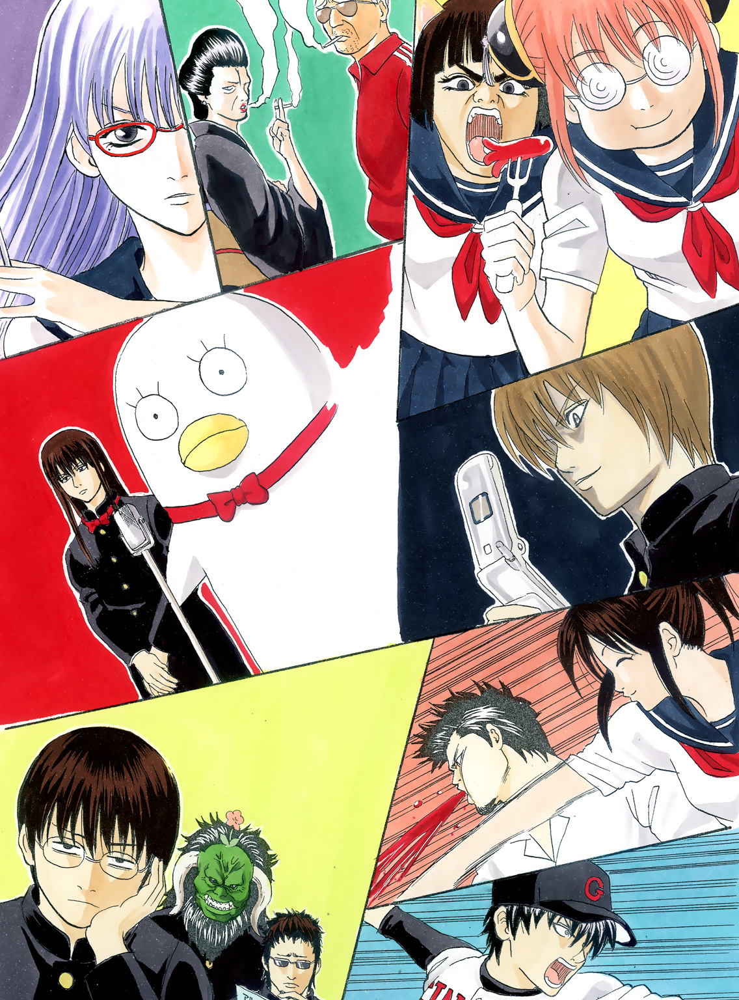

| 銀魂 3年Z組銀八先生 | |
| 空知英秋 & 大崎知仁 | |
この本は縦書きでレイアウトされています。
また、ご覧になる機種により、表示の差が認められることがあります。

PROFILE
坂田 銀八
３年Ｚ組担任。天然パーマで糖尿気味。
教師にあるまじき人物だが、なぜか生徒に一目おかれている。
志村 新八
Ｚ組の生徒。廊下側の窓際で、前から二番目に座っている。ツッコミ担当!?
神 楽
留学生。見た目はかわいいが、異常な食欲の女子高生。
キャサリン
留学生。りりしい眉で濃い顔をした女子高生。猫耳。
沖田 総悟
甘いマスクの風紀委員。
土方 十四郎
鋭い双眸をした、風紀委員会の副委員長。
志村 妙
新八の姉。楚々とした美人だが、性格は凶暴。
近藤 勲
沖田・土方を従える風紀委員長。ゴリラ顔。
桂 小太郎
もの静かな男子生徒。
謎の生物エリザベスをペットにしている。
この作品はフィクションです。実在の人物・団体・事件などには、いっさい関係ありません。
私が神であったら、青春を人生の終わりにおくだろう。（Ａ・フランス）
俺が神だったら、アレだ、学食のメニューにチョコレートパフェを加える。（坂田銀八）
＊
銀魂高校。
風変わりな名前だが、事実こういう校名なのだから仕方がない。それに、世の中にはもっとヘンテコな名前の学校だってあるはずだ、多分。
３年Ｚ組。
「ゼット」ではなく「ずぃー」と読んでほしい。なぜか。その方がカッコいいからだ、と創立者だか校長だかが、言ったんだか言わなかったんだか、その辺は定かではないが、とにかく「Ｚ」である。
「そんなに生徒数が多い学校なんですか？」という質問には、「現在担当者が不在のためコメントできない」とさせていただく。
で、教室。
これは特に風変わりなところはない。教室の前と後ろに引き戸があって、教卓があって、生徒の机と椅子があって、というありきたりなもの。よく学園ドラマなどでテレビに映っているものを想像していただければ、おおむね間違いはない。ただ、しいて風変わりな点をあげるなら、教室前方の壁、黒板の上に掲げられた額だろうか。額の中には、達筆とは言えないが、それなりに確信のこもった筆づかいで記された「糖分」という書がある。なぜ「糖分」なのか、という質問には、「担任が甘党なの。エヘッ」という愛くるしい答え方でご勘弁いただこう。ちなみに教室後方の壁にも「糖分」と書かれた半紙が一枚貼り出されているが、こちらの「糖分」に関しても、前述の回答を繰り返すのみである。
とまあこんな具合に、いわゆる「普通の学校」からはボール一個分外れた観のある、銀魂高校。
その３年Ｚ組の教室の、廊下側の窓際の列、前から二番目に、志村新八の席はあった。
＊
午前八時四十分。あと五分ほどで朝のホームルームが始まろうという時間。
新八は自分の席で頰杖をつき、クラスメイトの様子を眺めていた。大半の生徒は自分の席を離れ、ワイワイと騒いでいる。教師のいない教室は生徒のもの。だから、騒がしいのは当然なのではあるが......。
それにしてもウチのクラスって、と新八は思うのだった。変な奴、多すぎないか？
例えば、新八のいる席から一列おいた左の席では――。
「てめっ、なーに、私のタコ様ウィンナー勝手に食ってくれてんだよ、おーコルァ！」
中国からの留学生、神楽ちゃんが、朝っぱらから怒りまくっている。見た目は可愛らしい女の子なのに、今は田舎のヤンキーのような首の曲げっぷりである。どうやら早弁していたところ、クラスメイトにオカズのウィンナーを盗み食いされたらしい。
つーかさ、神楽ちゃん......と新八は呆れ顔になる。この時間から早弁って、それ早すぎでしょーが。で、「タコさん」じゃなくて「タコ様」っていう呼び方も謎だし！
志村新八、趣味はツッコミです、というわけでは決してないけれど、エキセントリックなご学友が多い環境だと、ついついツッコんでしまう。これが新八の悲しい性。
「ウィンナー食ワレタグライデ、ガタガタウルサイネ。私ノ国ニハ『タコサンウィンナーハ皆ノ物。ムヤミヤタラト判子ハ押スナ』ッテイウ格言ガアルネ」
神楽ちゃんにそう返しているのが、こちらも留学生のキャサリンだ。りりしい眉に厚ぼったい唇のミョーに濃い顔。なのに猫耳を生やした、あまりと言えばあまりに乱暴なビジュアルの女子生徒。
「ワケわかんねー格言持ち出してんじゃねー！ だったら言ってやるけど、私の生まれた国には『猫耳女は即死刑。好きな色はベージュです』ってのがあんだよ！ あとタコさんじゃなくてタコ様だ！」
と吠えまくる神楽ちゃん。だからそのタコに対するこだわりはなによ？ いや、ウィンナーに対するこだわりなのかな。どっちでもいいけど。
さて、神楽ちゃんとキャサリンの国際色豊かな茶番の左隣では、風紀委員の沖田総悟くんが、後ろの席にいる、同じく風紀委員の土方十四郎くんとなにやら話している。
栗色のサラサラヘアに円らな瞳、涼やかで甘いマスクの沖田くんに対し、無造作ヘアに鋭い双眸の土方くん。この二人、ビジュアル的にはかなり高ポイントなのだが、そこはそれ３年Ｚ組の生徒であるからして、会話もこんな具合。
「なあ総悟」
と呼ぶ土方くんはクールに腕を組んで、低い声音。
「なんです、土方さん」
と返す沖田くんは通路に足を投げ出して、ケータイをいじっている。声も軽い。
土方くんが言う。
「総悟。お前、マヨネご飯って知ってるよな？」
「ご飯にマヨネーズをかけた不埒な食いモンでしょう？」
「うるせえ、なにが不埒だ。ていうか、俺はそれを食わねえ日はねえ」
「知ってますよ。で、そのマヨネご飯がどうかしたんですか？」
言いながら、沖田くんはケータイいじりをやめない。
土方くんは、フッと口元を歪めると、続けた。
「実はな、ゆうべそのマヨネご飯の改良に、俺は成功したんだ」
「誰も頼んじゃいませんがね、そんなこと」
沖田くんはつれない。
「いいからきけ。マヨネご飯にな、あるものを加えると、とてつもなく美味になったんだ。それがなにか、お前、知りてーだろ？」
「お、返信来た。はい、すげー知りたいです」
「全然知りたそーに見えねえぞ、コラ。――ま、いいだろう、教えてやる」
それはな、と言って、土方くんは一度言葉を切った。もったいぶるような間を取ったあと、続ける。
「......ツナ缶の、油だ」
きくとはなしにきいていた新八は、思わず半眼になる。ど、どうでもいいよ......。なんですか？ ツナ缶の油？ 心の底からどうでもいい情報ですよ、それは。
「ツナ缶のツナそのものじゃねーぞ。ツナ缶の、油だ。それをマヨネご飯にかける」
だからその、「ツナ缶の」と「油だ」の間のタメはなんですか、タメは。
「どうでもよさそうな顔だな、総悟」
土方くんは不満そうに目を細める。
「そんなことありませんぜ。今度、魔が差したらやってみまさぁ」
「最低の社交辞令だな」
土方くんは舌打ちしたあと、沖田くんの手元に視線を移した。
「ところで総悟。お前、さっきから誰とメールしてるんだ？」
「ああ、これですか？ 出会い系サイトでさぁ。ま、こんなものやる奴は馬鹿か不細工って相場は決まってるんでしょうが、暇潰しにと思いましてね」
「なるほどな。ただ、一つ気になるんだが、それ、俺のケータイじゃねえか？」
「そうですよ。だって出会い系サイトですぜ。こんなもんに自分のケータイ使いたくないでしょう」
「なるほど、そりゃ道理だな。――って殺したろかあァァァ！」
机に身を乗り出して、沖田くんの首をグイグイ締め上げる土方くん。
不毛だなぁ......。二人のやりとりを眺めながら新八は思う。なんて不毛な争いなんだ。
と、そのとき、教室の後ろの引き戸がガラリと勢いよく開けられた。
「お妙さ～ん！」
と、朝から馬鹿でかい声を出したこの馬鹿は、近藤勲くんである。「精悍な顔をしたゴリラ」という形容がぴったりの、繊細さとは無縁の風貌。なんの人徳があってか、沖田くんや土方くんらを従える、風紀委員長の座についている男でもある。
教室に入った近藤くんは、まっすぐ志村妙の席に駆け寄っていった。ちなみにこの志村妙、苗字から察せられる通り、新八の姉である。
「いやいや、お妙さん。今朝も一段とお美しい。紺のセーラー服が純金のドレスのように見えますよ。だっはっは！」
本人的には百点満点の口説き文句を披露する近藤くん。しかし当の妙はファッション雑誌（ちなみに特集は「必殺テク徹底紹介！ チョイ不良オヤジからいかに金を引き出すか」）を眺めながら、冷ややかにこう返す。
「朝っぱらから迷惑なテンションね、近藤くん。それから、なんべんも言ってるけど、『お妙さん』なんて時代がかった呼び方やめてくれない？ ここでは私たち、高校三年生なんだから」
いや、ここではって！ と、新八は顔を引きつらせる。姉さん、いきなり設定グラつかせるような発言やめてくれよ。いろんな無理は承知で、この銀魂高校３年Ｚ組、話が進んでいくんだからさ。
「いや失敬失敬！ 俺も本誌の『銀魂』の癖が抜けなくてね、だっはっは！」
って、お前もかよ！ 本誌とか言うんじゃねえよ！
頭を抱える新八をよそに、近藤くんはさらに妙に話しかける。
「ま、確かに高校生で『お妙さん』はあんまりですよね。では、どうでしょう。ここは一つ『タエタエ』という呼び方を採用してみては？」
「冗談いわないで。ていうか、殺すわよ」
妙は雑誌から顔も上げず、そう返す。
「ダメですか。では、『タエリン』というのはいかがでしょう？」
「栄養ドリンクの成分みたいね。ていうか、殺すわよ」
「これもお気に召しませんか。では、『タエたん』というのは？ こう甘えた感じで」
「この世の終わりね。ていうか、殺すわよ」
「ダメですか。ではいっそ『タエンティン・タエンティーノ』......」
ここが妙の限界だった。
「しつこいんじゃああぁぁぁ！」
怒声とともに立ち上がり、妙は雑誌で近藤くんの顔をぶん殴った。バシッではなく、バカッという硬質の音がしたのは、妙が雑誌の角を使ったからである。
「ちょっ！ 痛っ！ 角！ お妙さん！ 角！ 死ぬから！ 紙も凶器になるから！ ぐああっ！」
哀れ近藤くんは、教室に入って三分で血祭りに上げられましたとさ。
しかしまあ、新八もいちいち同情はしない。妙と近藤くんのこのバトル。毎朝似たようなことが行われているのだ。
かと思えば、静かに自分の世界に閉じこもっている人もＺ組にはいて。
例えば、神楽ちゃんの前の席にいる長髪の男子生徒、桂小太郎くん。彼は今、一人で机に向かってなにかを書いている。
気になったので、新八はきいてみた。
「ね、桂くん。なに書いてるの？」
クイと新八に顔を向けた桂くんは、
「これだ」
と言って、机に広げたノートを新八に見えるように両手で持った。
そこには、ものすごくリアルなタッチで描かれた――謎の生物がいた。謎、としか言えないその生物は、まるでペンギンのオバケ。もう少し詳しく言うなら、ペンギンの体にアヒルの顔を持った、アバンギャルドきわまりない外見の生物である。
「知ってるだろ？ 俺のペット、エリザベスだ」と桂くん。
「知ってるけど......」
知ってるけど、コメント不能だ。なぜ今、それをノートに描く？ しかも、なぜそんなにリアルなタッチで描く？ あ、今、桂くんちょっとだけ笑った。なぜ笑う？
新八はぎこちなく笑みを返し、桂くんから視線を外した。桂くんが向かう先は、どんなゴールが待っているのかわからない。深追いは危険だ。
で、そんな桂くんの席から、一列置いた左の席では、長谷川泰三くんが真剣な表情でアルバイト情報誌をめくっていた。サングラスをかけ、顎に髭を残した長谷川くん。おっさんっぽい外見なのは、事実長谷川くんがおっさんだからだ。
「やっぱ深夜以外で時給千円以上のバイトってのはねーもんだな」
なんて呟きがきこえてくる。
いやいや長谷川くん。朝から流血沙汰も困るけど、そのブルーなノリもどうかと思いますよ。
でもって、その長谷川くんのいる列の一番後ろの席では、一人の男子生徒が黙々と編み物に没頭していた。わあ、朝からほのぼのね、なんて言ってる場合ではない。
この生徒、名前をヘドロというのだが、端的に言わせてもらうと顔がメッチャ恐い。鎌倉時代の仏教彫刻を思わせる雄々しき顔貌――と言うと格調高そうだが、有り体に言うなら鬼みたいでおっかない。ライオンのようなたてがみが後頭部から首の周りを覆い、側頭部からは水牛のように湾曲した角が一対生えている。そんな御仁がせっせと編み物に精を出しているのだから、本年度ベストミスマッチ大賞はこの人に決定、てなものである。ただ、ヘドロくん本人の名誉のために書いておくと、この人、すごく優しい方である。花や動物を愛し、争いごとは好まない。あ、今、目が合った。えーと、すいません、やっぱり恐いです......。
と、まあ、こんな具合にＺ組というところはキャラの宝庫みたいな場所でもある。今紹介した以外にも強烈な輩がわんさといるし、ほんともう、ここまで来ると学び舎っていうよりアミューズメントパークだよね、という感じすらする。
今日も一日、なにごともなく過ごせればいいけど......と新八がそっと眼鏡を押し上げたときだ。
神楽ちゃんの大音声が教室に響いた。
「こんのクサレ猫耳！ 今度はミートボール食ってんじゃねーか！」
「ミートボール食ワレタグライデ、ガタガタウルサイネ！」
って、まだやってたのかよ、お前ら！
新八がのけぞるのと、神楽ちゃんが右手を大きく振りかぶるのが同時だった。
キャサリンめがけてパンチを放つつもりだったのだろう、しかし、神楽ちゃんが大きく引いた右手は、不幸なことに前の席の桂くんの後頭部にクリティカルヒットした。
「――――！」
桂くんは声もなく机に突っ伏し、後頭部のたんこぶからプスプスと煙が上がる。
と、今度はそこへ妙の怒号だ。
「いいから、私の席から離れろやァァァァ！」
妙と近藤くんのバトル（というか一方的な私刑）もまだ続いていたようである。
「今日の私は、月からの使者で機嫌がわりーんだよおっ！」
声とともに、妙はファッション雑誌をぶん投げた。狙いは勿論近藤くんの顔面だったのだが、
「あぶっ！」
と、とっさに近藤くんはそれをかわし、その結果、気円斬ばりの殺傷力を伴って放たれたファッション雑誌は、長谷川くんの後頭部へ直撃――。
「やっぱりここはド短期で......ごふっ！」
長谷川くんは机に突っ伏し、アルバイト情報誌にドロリと血が広がる。
かと思うと、
「てめっ、今度は自殺系サイトにアクセスしてんじゃねえかあ！」
「あれ、土方さん、前に『一度でいいから本物の彼岸花を見てみたい』って......」
「言うかァ、そんなこと！ どんな望みだ、それは！」
逃げる沖田くんを追う土方くん。
ダメだ......と新八は思う。なにごともなく、なんて願いは、３年Ｚ組には通用しない。
この馬鹿どもの騒ぎっぷり。学級崩壊なんて言葉じゃ生ぬるい。これじゃ、まるで学級メルトダウンだよ......。新八が心中にそう呟いていたときである。
教室の前の引き戸がガラリと開けられた。
現れたのは一人の男。眼鏡も白衣もネクタイも、全てをだらしなく身につけた、白髪で天然パーマの男。その人物は、くわえ煙草でこう言った。
「朝からうるせーぞ。中二のノリですか、コノヤロー」
Ｚ組の担任教師――坂田銀八先生、その人であった。
＊
なんというか、まあ、アンチテーゼに満ちた教師ではある。坂田銀八という人は。
教室だろうがどこだろうが、平気でくわえ煙草。さらには、教育者とは到底思えない、その死んだ魚のような瞳。
「つーか、おめーらよぉ、俺の登場までに原稿用紙十九枚も使ってんじゃねーよ。待ちくたびれちまったよ」
小説内の人物とは思えない、この不穏な発言。
野放図というか、破格というか、ＰＴＡの信頼度ゼロというか、とにかく教師の典型から大きく逸脱した人物なのである。
だが、この人が不思議な求心力のようなものも備えていることは事実で、今こうして銀八が教室に登場しただけで、あれだけ騒いでいたクラスメイトが、とりあえずは席に着き、彼の方に注目している。
銀八は出席簿をポンと教卓に放り出すと、いつものようにけだるげな声で言った。
「んじゃ、ホームルーム始めんぞー。日直、号令」
言われて、新八は今日の日直が自分であることを思い出す。
「あ、はい。きりー......」
と、新八が言いかけたところで、銀八が待ったをかけた。
「あー待て。今日から号令は『起立』『気をつけ』『礼』『銀魂』にする」
いやはや。百パーセント思いつきのこのプラン。しかし、反論したところで不毛なやりとりになることは目に見えている。新八は再び号令をかけるべく口を開こうとした。
と、そこへ声を上げたのが桂くんだ。
「先生！ 『着席』の代わりに『銀魂』にする意図がわかりません！」
「意図ぉ？」
銀八は片眉を上げ、桂くんを睨んだ。
「意図は生徒手帳の隠しページに書いてある。そこ読んどけ」
「先生！」と続けたのが、いつのまにか丸メガネをかけた神楽ちゃんだ。
「私、生徒手帳、チリ紙交換に出してしまいました！」
「あの小さな手帳でトイレットペーパー何センチもらえたんだ？ つーか、お前を出すぞ、チリ紙交換に」と銀八。
「先生！」
今度は土方くんだ。
「今、沖田くんの生徒手帳覗いたら、白紙のページに俺の名前が書いてあって、その後ろに×印がたくさん書いてあります！」
「魔太郎か、お前は」と銀八は沖田くんに言う。
「つーか古いよ、漫画のチョイスが」
頃合だな、と思い、新八は口を開いた。このままみんなにボケ続けられたら、話が進まない。
「きりーつ」
新八の号令に、クラスメイトが従う。
「気をつけー」「礼」「銀魂」
従順な新八は、言われた通りの号令をかけた。
全員が着席したあと、銀八はこともなげに言った。
「うん、思ったほど面白くなかったから、明日からは元に戻すわ」
もう廃止かよ！ 新八は思ったが、声には出さなかった。担任は、いや銀八は思いつきでものを言う。
「えー、ではぁ、今朝のホームルームの議題に入る」
銀八はくわえ煙草の煙に目を細めながら言うと、くるりと振り返ってチョークを手に取った。
ゴンゴンと音を立てながら、アンニュイな文字が黒板に記されていく。
休み明けテスト
と書いて、銀八は生徒たちに向き直った。
「が、ある。来週からな。この休み明けテスト、お前ら一科目でもいいから八十点以上取るように。じゃねーと、再来週以降、俺の授業、全部マラソンにするから」
ええーっ、とクラス中がどよめいた。
「以上」
と言って、銀八はそのまま教室を出て行こうとする。
「ちょっ、ちょっと先生！」
新八は慌てて呼び止めた。いくらなんでも、今の言葉だけでは説明が足りなさすぎる。ここはさすがに声を上げるときだ。
「どういうことですか？ 八十点以上？」
「そーだ。じゃなきゃ、再来週以降、お前ら全員ランナーズハイな」
「いや、先生、国語教師でしょ。なんで自分の授業をマラソンにできるんですか！」
「じゃ、マラソンしながら『万葉集』でも詠んでもらおうかな」
「難度アップしてんじゃないすか！ つーか、それどういうことですか？」
「先生！ 『万葉集』じゃなくて『古今和歌集』にしてくれよ！」
異議をとなえた近藤くんに、
「どっちでもいいよ！ ていうかどっちも嫌だし！」
新八はツッコんでから、銀八に向き直った。
「先生、事情を説明してくれないと納得いきませんよ！」
「しょーがねぇな」銀八は頭をぽりぽりとかいてから、教卓に戻った。
「実はよ、今朝校長室に呼ばれてよ......」
話し始めた銀八は、そこで一度言葉を切ると、
「つーか、話すのかったりーから、回想シーンにまとめるわ。次の『＊』のあとを読んでくれ」
って、あんた小説をなんだと思ってるんだァァァァ！
新八の叫びも虚しく、回想シーンへ続く。
＊
特になんの変哲もない校長室である。
部屋の中央に応接用のソファとセンターテーブルがあって、窓を背負う位置に校長のデスクがでんとある。
デスクにいるのは、第なん代目かの銀魂高校校長――ハタ校長だ。
血色の悪い紫色の顔。額の上の方からは触角がポヨンと垂れ下がり、クリクリのクセ毛が、禿頭のふもと付近に生えている。眉はお公家さんのような丸型。柿の種のような形の目は、愛される要素ゼロ。そういう校長の傍らには、眼鏡をかけた、おつきのじぃ――もとい教頭が、不機嫌そうな顔で控えている。
午前八時半。職員室での朝礼のあと、銀八はこの校長室に呼び出されているのだった。
「――ま、単刀直入にいうとだね、坂田先生」ハタ校長が口火を切った。
「君のクラスの生徒って、ものすごーく成績が悪いわけなんじゃよ。え？ これテストの点数？ 若手芸人の平均年齢じゃねーの？ みたいな平均点を叩き出しとるわけなんじゃ、テストのたびに」
粘着質の声で言うハタ校長に、
「んなこたァ、わかってますよ。俺も一応担任なんで」
そう返す銀八は、ソファにふんぞり返り、テーブルに置かれていた来客用の葉巻をふかしている。
「ていうか、それ校長の話をきく態度じゃないよね」
校長が静かに怒ったあと、教頭が一喝した。
「坂田先生、まじめにききなさい！」
「わーってますよ」
銀八はケースに収められていた葉巻を一つかみポケットに入れ、デスクの前に立った。
「清々しいほど大っぴらに盗むのね。......ま、それはいいとして......」
校長はコホンと小さく咳をすると、話を続けた。
「とにかく、これ以上Ｚ組の生徒の学力が落ちると、他のクラスの士気にも関わるんじゃよ。同じ学校なのに、あいつらだけバカじゃね？ ていうか馬鹿じゃね？ むしろ莫迦じゃね？ みたいにね」
「じゃ、どーしろっつーんですか、店長」
「校長ね。......ま、ここは一つ、強硬な手を取らせてもらおうかと思っとる」
「強硬な手って、まさか成績が落ちたら......」
銀八はゴクリと唾を飲み込んでから、言った。
「シッペとか？」
「わーい、ノスタルジック。ていうか、お前の脳味噌にシッペしたいわ。そうじゃない」
校長は苛立たしげにデスクを叩くと、説明を始めた。
「次の休み明けテストで、クラス全員が一科目でもいい、八十点以上取ること。それがクリアできなかった場合は――」
「シッペ」
「じゃねえって」
「じゃ、デコピン」
「違うって。お願いだから最後まできいて」
校長は居住まいを正してから、続けた。
「クリアできなかった場合は、Ｚ組全員、土日も登校して補習！」
ア～ンド、と言って、校長は銀八に指を突きつける。
「坂田先生、あんたの給料を二十パーセントカットだ！」
「――――！ に......」
銀八は両目を剝くと、
「二十パーセントカットだとぉ！」
怒りに任せて校長の触角をちぎり取った。
「いででで！ なぜちぎる！ てか、これ二十パーセントじゃなくて百パーセントカットされてるから！ わしのチャームポイントが百パーセント......」
額から鮮血を溢れさせながら、校長は喚いた。だが、銀八はそれを無視して、
「冗談じゃねえぜ。あのバカどものせいで、俺の給料がカットなんてよ」
「仕方ないだろう」呼吸を静めながら校長は言った。
「こうでもしないとＺ組は学校のお荷物になる。恥部になる。担任の君にはそれを防ぐ責任がある」
「............」
銀八はしばし黙った。そして、ややあって小さく頷くと、校長に言った。
「もう決まったことなんすか？」
「そうじゃ」
「てか、これ、あんたが決めたことなんすか？」
「そうじゃ。だって、わし校長だもんね。偉いんだもんね」
「......上等だよ、血まみれ校長」
「いや、血まみれにしたのアンタじゃん」
「一科目でいいから八十点？ いいよ、やってやるよ。つーか、やらせてやるよ。土日の補習？ 給料二十パーカット？ けっ、そんな中途半端なペナルティーなんざ、ちゃんちゃらおかしいぜ。土日だけじゃなく平日の放課後も補習＆給料十パーカットにしてやってもいいぜ、俺は」
「いやいや、さりげなく自分のペナルティー軽くしてもバレてるから」
校長はジトッと銀八を睨む。
「しかし、どうでしょう校長」とここで教頭が口を挟んだ。
「せっかく坂田先生からご提案があったんですから、平日の放課後も補習ということにしたら？」
「どうかね、坂田先生？」
校長は値踏みするような視線を銀八に向けた。
「かまわねーすよ。その代わり俺の給料カットは十パーだけってことで」
「そこは譲れないのね。てか生徒よりも、まずは自分の給料なのか、君は」
「たりめーでしょ」
「わかった。ではまとめるぞ。来週の休み明けテスト。Ｚ組の生徒全員が、一科目でよいから八十点以上取ること。それがクリアできなければ、生徒は全員毎日補習。そして担任の君は給料十パーセントカット。これでよいね？」
「いいぜ、ミスター・ブラッド」
「や、だから、ブラッド流させたのはアンタだからね」
校長は言って、額の血をハンカチで拭うと、不敵な笑みを浮かべた。
「ま、結果を楽しみにしておくよ」
銀八は、その言葉にはなにも返さず、校長室をあとにした。
＊
「――てなことがあったんだよ、ついさっき。以上」
銀八は言って、教室を出て行こうとする。
「以上じゃないでしょ、以上じゃ！」首筋に血管を浮かべて新八は叫んだ。
「なに勝手な約束かわしてんすか！」
そうだぜ！ そうだよ！ そうアル！ 話ニナラネーヨ！ と、教室のあちこちから非難の声が上がる。
「大体、先生よぉ、あんたちゃっかり自分だけペナルティー軽くするのに成功してるじゃないすか！」
土方くんが言い、近藤くんもあとに続く。
「そうだぜ、先生。つーか、あんたが余計なこと言うから、俺たち平日まで補習の対象になってんじゃねーか！」
「その通りアル！ そもそも私が育った国には『平日の補習なんてノンノンノン。嫌いな色は黄緑です』っていう格言があるネ！」
「平日の放課後まで潰されたら、エリザベスの散歩に行けなくなってしまいます！」
「つーか、んなことしてたらバイト入れらんねーよ。その補習って時給出るんすか？」
ふざけるな！ 校長に抗議しろ！ ていうか、こんな約束反故にしろ！ この白髪！ 天パ！ アニメ化！......等々、生徒たちからのブーイングはどんどんエスカレートしていく。いつ果てるとも知れないその声に、銀八はしばらく無言だったが、やがて、
「せーんだよ、てめーら」
田舎のヤンキーのような首の曲げっぷりで凄んだ。
「てめーら、どこの被害者の会だコノヤロー。地味なスーツ着て記者会見でも開く気か、ああ？」
冷え切ったその声音に、ブーイングの嵐はひとまず終息する。
銀八は教卓に両手をつくと、煙まじりの溜め息をついてから、言った。
「いいか、てめーら。胸に手ェ当てて考えろよ。特に女子は胸に両手を当てて考えろ」
せんせー、セクハラはやめてくださーい、と女子生徒たちが抗議する。
「とにかくだ」銀八は続けた。
「こうなったのは、全部てめーらのオツムがワリーせいだろうが。俺の方こそとばっちりなんだよ、給料カットなんて言われてよー」
「でも先生」と新八は控えめに言ってみる。
「校長先生に抗議するとか、もっとハードルを低くしてもらうとか、補習はせめて土曜日だけにしてもらうとか――」
新八の言葉が終わる前に、
「情けねェこと言ってんじゃねーぞ」
銀八はぴしゃりと言った。気のせいだろうか、そのとき一瞬、銀八の瞳に光が走ったような気が、新八にはした。あれれ、と思っている間に、もう死んだ魚の目に戻っていたのだけれど。
「いいか、てめーら」銀八は言った。
「全科目じゃねーんだ。一科目でいいんだよ。八十点。根性出せや」
無理です！ 無体です！ できっこないす！ 人間ニハデキルコトトデキナイコトガアッテ、コレハ後者デス！ と、即答する生徒たち。
「無理じゃねえ。俺はお前たちを信じてる」
銀八は言って、ひとつ頷き、さらにこう続けた。
「いいか......お前らは腐ったミカンなんだ！ あ、じゃなくて、腐ったミカンなんかじゃないんだ！」
いや、そこ間違うのかよ！ てか、一番間違ったらいかん台詞だろ！ 謝ってこい、武田鉄矢に謝ってこい！
今朝一番のボルテージで生徒たちのツッコミが爆発した。
「あーうるせー！ うるせー！ うるせー！ とにかくだ！」
銀八は生徒たちを睨みつけた。
「帰りのホームルームで緊急のテスト対策会議を開く。以上」
言うだけ言うと、銀八は白衣の上から尻をかきながら教室を出て行った。
＊
「ホッホッホ。よいぞ、よいぞ～。この展開、すごくよいぞ」
デスクに置いたノートパソコン――その画面に映し出された３年Ｚ組の様子を眺めながら、ハタ校長がいった。
「あ？ なにが？」
と返す教頭はソファで『ビジネスジャンプ』を読んでいる。
「いやコラ。ＢＪもいいけど、こっちにこい教頭」
デスクの前に立った教頭にも見えるように、校長はパソコンの向きを変えてやった。
「監視カメラの映像ですか」ディスプレイを覗きながら、教頭が言う。
「そうじゃ。Ｚ組の教室に、こう、なんか、うまい具合に仕掛けてある監視カメラじゃ」
「アバウトだな、説明が」
「いいんじゃ、ちゃんと映れば。あと、校長にタメ口はよせ」
「わりい、いや、すいません。......で、この映像がなにか？」
「なにかじゃない。見ろ、この生徒たちの不満そうな顔。しかも、きこえるだろう、みんなブーブー文句を言っておる」
校長は言って、ホッホと笑った。
「まあ、朝イチでいきなりあんな話きかされたらね、そりゃ、文句も言いたくなるでしょうな」
「それでいいんじゃよ、それで」
校長はほくそ笑みながら、目を光らせた。
今のところ、自分が思い描いていた通りの展開になりつつある。校長は自画自賛したい気分であった。
休み明けテスト。一科目でもよいから八十点以上。クリアできなければ補習、そして担任の給料カット――このプラン、校長はなにも、Ｚ組の学力低下を危ぶんで実行に踏み切ったわけではなかった。むしろ、狙いは全く別のところにあると言ってもよい。
銀八憎し――。
校長のこの思いが、今回の計画の出発点になっているのである。
白髪で天然パーマ、ずり落ちた眼鏡と死んだ魚のような目。およそ人気者の要素が皆無であるこの坂田銀八という男。だが、どういうわけか、このアンニュイ野郎が、そこそこに（いや、ほんとそこそこなんだけど）生徒たちの支持を得ているのである。銀八がボケれば生徒たちはつっこみ、その逆もまた成立する。その呼吸を見る限り、Ｚ組ってまあまあ結束強いじゃん、という感じなのだ。しかも、ごく一部の女子の間では「銀八ってワルっぽいところがイカすよね」的な発言がなされているともきく（校長調べ）。
で、そこが校長には気に入らない。
なぜだ？ なぜ、ダルさ満開のあの男が、生徒たちにうけるのだ？ わしなんか......わしなんか、どんなに頑張ってもバレンタインにチョコの一個ももらえねーし、ゲタ箱にラブレターも入ってねーし、ていうか今時ゲタ箱にラブレター入れる女いるの？ それに相方といやぁ、ここにいるジジイの教頭だけだし、もうムキーッ、てな感じで、とにかく校長は銀八のことが気に入らないのである。なんかもう、嫌いなのである。
だったら、ちいと痛い目見てもらおうかの、ということで、今回のプランが発動されたわけだった。
ババロアみたいな脳味噌しか持っていないＺ組の生徒が、一科目だけでよいとは言え、八十点以上取ることは、まず不可能だろう。ということは、銀八の給料がカットされることは不可避。薄給をさらにカットされるのだから、彼奴のダメージを考えると、ぐふふ、てなものである（まあ、なんとなく丸めこまれてカット率下げられちゃったんだけど）。
で、さらにだ。
今の監視カメラの映像を見る限り、Ｚ組の内部には早くも不協和音が響きつつある、ように見える。平日も土日も補習ということになれば、あのアホな生徒どものことだ、自分のアホさは棚に上げて、銀八に恨みの矛先を向けるに違いない。そうなれば銀八の株価は急降下。
「いやあ、わしって天才かもしれんな」
ホーッホッホ、と校長は笑う。
「つーか、マジ性格悪いよね、アンタ。嫉妬深いっつーかさ」
いつのまにかソファに戻っていた教頭が、『ビジネスジャンプ』を読みながら言う。
「だから、タメ口はよせというに」
「口うるせーハゲだな。すいません」
「いや、今の『口がスベった』とかそういうレベル超えてたから」
「すいません。ま、しかし、うまくいくといいのですが......」
「うまくいかいでか。わしの頭脳はアレだぞ、アレ並みだぞ、えーと待って、絶対思い出すから......」
「ド忘れしてる時点でたかが知れてるけどな」
「だからタメ口きくんじゃねえよっ！ 殺すよ？ 今ならわし、カッとなって人を殺した奴の気持ち、少しだけわかるよ！」
と、興奮しすぎて額の絆創膏に血を滲ませる校長であった。
＊
安物のサンダルをペッタペッタと鳴らして、銀八は教卓についた。
帰りのホームルームの時間が始まったのである。
「よーし、んじゃ、『休み明けテストどうする？ 緊急対策会議』やるぞー」
銀八は言うと、チョークを手にして黒板に向かった。
ゴンゴンと音がし、黒板に文字が記されていく。
クリアの条件
どれか一科目で80点以上
長髪、ヤンキー不可
と書いて、銀八はチョークを置いた。
「つーことだな」
「先生！」桂くんがすぐさま言う。
「二つめのはバンドメンバーの募集条件みたいになってます！ それに、その条件だと俺は不可ってことですか？」
「不可だよ、おめーの長髪は」銀八は言った。
「ていうか、それヅラだっけ？ どっちでもいいけど、早く切るか取るかしろ」
「先生、ほんとに訴えますよ。すでに書類だけは用意してますよ」
「先生！ 私、ギターを持つ位置が人より高いんですけど、そのバンド入れますか？」
神楽ちゃんがしゃもじを構えながら言った。
「お前はまず図書室で『ギター』というものを調べてこい」
「先生！」と今度は沖田くんだ。
「よくライブが終わったあとに楽器を壊すミュージシャンがいますけど、俺はそのときブタの貯金箱を壊したいです！」
「画期的だな」と銀八。
い、いかんぞ......。新八の胸に警戒信号が灯った。早くもみんなが壊れ出した......。
「先生！ バンドのボーカルはお妙さんにしようぜ！」
とそこに近藤くんまで参加する。
「こう、倖田來未みたくエロい感じで、なんだったら胸の谷間とか――」
だが、その続きを言う前に、背後から忍び寄った妙が、セーラー服のスカーフで近藤くんの首を絞め上げる。「おごっ！」と近藤くんはチアノーゼ。
「ちょ、ちょっと、みんな！」
新八は慌てて立ち上がった。
「なんだ志村弟、言いたいことがありそうだな」と銀八。
「いや、ありまくりですよ！ なんですか、このやりとりは！ テスト対策でしょ？ なんでバンドやろうぜ的な会話になってんですか！」
「おい、誰のせいだー？」
と他人事みたいに銀八は言う。
「いや、あんただよ！ あんたが書いた『長髪、ヤンキー不可』が元凶なの！」
「せーな。ちっと遊んだだけだろーが」
「遊んでる場合じゃないでしょうが！」
「新八くんの言う通りですよ」
と、ここで立ち上がったのが、おお、ヘドロくんだ。
「ちゃんとやりましょう、ちゃんとね」
最凶の顔面を持つヘドロくんにそう言われ、銀八は、
「わ、わかった。ちゃんと殺られないように、ちゃんとやります......」
蒼ざめた顔で頷いた。
で、仕切り直して会議再開。
「ま、要するにだ」銀八は煙草の灰をこぼしながら言った。
「どんな手を使ってでも、八十点取ればいいんだ」
どんな手を使ってもな、と銀八は意味深に繰り返す。
「あのー、先生、それって......？」
新八はおそるおそるきいた。
「決まってんだろ」と銀八は邪悪に笑う。
「カンニングだ」
カンニング!? カンニング!? シャイニング!? シャーマンキング!?
約二名ほど間違えている奴がいたが、生徒全員が驚きの声を上げた。
銀八は邪悪なオーラをさらに膨らませて、言う。
「おうともよ。カンニングすりゃ八十点なんざ、赤子の手をひねるようなもんだ」
「先生！ 幼児虐待です！」と神楽ちゃん。
「ていうか、お前をひねるぞ、キュッと」と銀八。
「や、でも先生、カンニングはやっぱり......」
やめた方が、と新八はやんわり抗議した。僕はＺ組の良心だ。ツッコミ役ってのは、ボケ役より常識人じゃないとね、という意識が働いたせいもある。
「バッカ、おめーよぉ」呆れたように銀八は言った。
「テスト対策の会議だぞ、これ。つーことは、お前、イコール・カンニング会議じゃねーか」
「いや、おかしいでしょ、そのイコールは！」
と、そこへ、
「新八」
不意に声がした。振り返ると、姉の妙がそばに立っている。
「姉さん......」
「新八......」なぜか慈愛に満ちた表情で、妙は続けた。
「あなた男でしょう？ 男だったらカンニングのひとつもできないでどうするの」
「いや、そんな喧嘩のひとつも、みたいな言い方されても......」
「バレるのが恐いの？ 大丈夫。掌に『バレ』って三回書いて飲み込んだら、絶対にバレないから」
「いや、初耳だよ、そんなおまじない！ てか、ねえし、そんなおまじない！」
「おい志村弟よぉ」と銀八の声だ。
「四の五のいってる場合じゃねーんだよ。補習嫌だろ？ 俺だって給料カットされたかねーしよ」
「や、でも......」
なおもためらう新八に、クラス中から声がかかる。
新八！ 新八くん！ やろうよ！ 新八くん！ そうだよ新八くん！ パチクン！
「いやいや、おかしいよ！ だってカンニングだよ？ しかも担任が率先してやろうとしてるなんてさ......」
新八は言いつのったが、クラス中のパチクンコールはやまない。
なんなの、このクラス......。
どこかに味方はいないものかと新八は視線を巡らせた。で、思いついてヘドロくんの席を見やる。そうだよ。人相は悪くても、心は清廉なヘドロくんだ。カンニングなんかしたくないはず......と思ったら、
「新八くん、カンニングやりましょう」
禍々しい声でヘドロくんは言う。
ええ～っ、ヘドロくんまで？ いや、そうか、あの人はクラスの和を重んじる性格だから、それでカンニング賛成派に回ってるんだ......って、ほんとにそうなのか？ あ～もうわかんなくなってきた！
混乱する新八に、
「腹くくれよ、新ぱっつぁんよぉ！」と銀八がダメを押してくる。
「でも、カンニングは不正行為です。そんなことしてまで......」
「わーったよ！」業を煮やして銀八は怒鳴った。
「じゃ、おめーがやってくれた暁には、今度の文化祭のゲストに、アイドルの寺門通を呼ぶ！ ......ように職員会議で企画出す！ 文句ねーだろ、これで！」
寺門......通......。
志村新八――寺門通親衛隊隊長の体内に稲光が走った。
「文句あるわけないでしょうがあァァァ！ オルァ！ てめーら！ さっさとバレねーカンニングの方法考えろやあァァァ！」
と、一秒で心変わりした新八であった。
「つーわけで、カンニングだ」銀八は新しい煙草をくわえて、言った。
「お前ら、なんかいいやり方ねーか？」
担任の問いかけに、クラス中がひとまずウームとシンキングタイムに入った。
カンニング。実際にやるとなると、これがなかなかいい案が出てこない。
いや、カンニングという行為そのものは簡単だ。筆箱や消しゴムのケースに答えを書いたり、隣の者と答えを教え合ったり――古来より定番となっている手法がいくつかある。
だが、今回の場合は、クラス全員が高得点を上げる、という条件がついている。一人ないし数人が良い点を取っても仕方がないのだ。全員が情報を共有できる方法を探らないと意味がない。
やがて、土方くんが挙手した。
「先生、こういうのはどうすか」
「言ってみろ」
銀八に指され、土方くんは説明した。
「マヨネーズを使うんですよ。マヨネーズで黒板に答えを書いておく。で、それをテストが始まる前に拭き取っておくんです。そうすりゃ、こう、光の加減でテラテラ光って、こう、いいあんばいに文字が見えるんじゃないかと――」
「ほかねーか？ ほか」と土方くんから目をそらす銀八。
「もう却下かよ！ ちょっとぐらい検討してくれてもいいじゃないすか！」
「バッカ。そんなマヨネーズ王国のやり方が通用するわけねーだろうが」
土方くんが不服そうに黙り、かわりに沖田くんが立ち上がる。
「先生！ こういうのはどうですか」
「言ってみろ」
「試験監督の教師を鈍器で殴打して昏倒させるか、もしくはクロロホルムで眠らせてから――」
「ほかねーか、ほか」
「じゃあよ、先生！」と今度は近藤くんだ。
「全員が手話教室で手話をマスターするっていうのはどうすか。それで答えを教え合えば――」
「ほかねーか、ほか。あんだろー」
「先生！」と、ここで勢いよく立ち上がったのが神楽ちゃんだ。
「いい方法があるアル！」
「あるある？ ま、いい。言ってみろ」
「このクラスの中だけで作戦を遂行しようとするから難しいアル。だから外部の力を借りるというのはどうでげしょう」
「ほう」と銀八は興味を示した。
「やっとマトモそうな意見が出たじゃねーか。具体的にどーやんだ？」
クヒヒ、と笑ってから神楽ちゃんは説明した。
「この学校には定春という犬がいるアル。定春を使えばいいネ」
神楽ちゃんの言う定春とは、どこの学校にもつきものの迷い犬のことだ。いつのまにか銀魂高校に迷い込んでいて、いつのまにか住み着いてしまっていた犬――定春。これがなぜか神楽ちゃんになついていて、定春という名前も神楽ちゃんによって命名されたもの。でもって、この定春、なぜかヒグマ並みの巨体を誇っていて、隙あらば人の頭を齧るというお茶目さんでもあるのだが......。
「おー、あの犬な。あれをどー使うんだ？」と銀八。
「校庭から定春に吠えてもらうアル。ガウと一回吠えれば、答えはＡ、ガウガウなら、答えはＢ、みたいに」
「なるほどなー」銀八は嘆息しながら言った。
「そうかー、あの犬になー、吠えてもらうってかー、そうかー、でもよー、誰が定春に答えを教えんだ？ てか、あの犬にそんな細かい芸当できんのか？ 誰が仕込むんだ？ もうちょっとよー、考えてからモノいおうぜ、チャイナ娘さんよー」
「わかってんのか、チャイナ娘さんよぉ！」と新八の胸倉をつかむ神楽ちゃん。
「いや、あんただから！ 『チャイナ』も『娘』も該当してんのあんただから！」
眼鏡をずり落としながら、新八は悲鳴を上げる。
「つーか、おめーら、マジでババロアみてーな脳味噌なんじゃねーか？ ちったーマシな案ねーのかよ」
焦れてきたのか、銀八は苛立ちを隠そうともせずに言う。
「例えばよぉ、志村妙。お前、ポンポーンと教師の二、三人相手に肉体接待してくれよ。そうすりゃ事前にテストの問題教えてくれんじゃ――」
銀八が言い終わらないうちに、妙のいる方角からなにかが発射された。
超高速で飛来したそれ――シャーペンは、銀八の頰を掠めて黒板に突き立った。ドカッという刺突音のあと、
「ふふふ、先生ったら。次は外しませんよ」
コンパスを構えた妙が微笑む。
「いや、あの、すんませんでした......。俺もなんかパンチの利いた意見つーか、ほんとすんませんでした」
引きつった顔で詫びる銀八。
そのとき、ふと新八はあることに気づいた。待てよ......。
カンニングの方法を考えるのもいいが、僕たちは肝心なことを忘れているんではなかろうか。
「あの、ちょっといいでしょうか」
いって、新八は立ち上がった。
「なんだ、ツッコミ」と担任。
「役割で言うな！ 名を言え、名を」
軽くキレてから、新八は続けた。
「あの、よくよく考えたら僕たち、大事なことを一つ忘れてるような気がするんですけど」
「なんすかなんすか、急に名探偵すか、ツッコミ地味眼鏡くん」と神楽ちゃん。
「地味っつったな？ 今、地味っつったよな？」
チャイナ娘にタイマンを挑もうかと思ったが、ここは耐えて、話を続ける。
「そもそもですね、カンニングって、テストの答えがあらかじめわかってて、それをテスト時間中に盗み見るっていう行為のことですよね？ や、まあ、例えば数学の公式とか、化学の元素記号の一覧とか、英語の構文とかをどこかに書いておいて、それを見るっていうカンニングもありますけど、でも、今回の場合、僕らは八十点以上取らないといけないわけで、だとすると、その程度のカンニングじゃあ目標点には届きっこないわけですよね。てことはですよ、今回の場合、僕らはダイレクトにテストの答えが必要なわけで、でも、その答えはどこから手に入れるんでしょうか？ で、そもそも僕らはどの科目でカンニングしようとしてるんでしょうか？ そういう諸々のことをクリアにしないうちからカンニングのやり方だけを考えても、意味がないような気がするんですけど......」
新八の長台詞に、Ｚ組のババロアブレーンズはポカンとなってしまう。
「僕の言ってることわかります？」
新八が言ったあとも、銀八以下生徒一同は黙ったままだった。小さなスペックで膨大なタスクを処理しようとしている、そんな感じの沈黙がしばらく続いた。
やがて銀八が口を開いた。
「や、あの、新八くんさ。要するに君は、カンニングするなら、まずテストの答えを手に入れろと」
「そうです」
「んで、その前に、どの科目でカンニングするかを決めろと」
「当然そうです」
「や、でもさ」
銀八は力のない笑みを浮かべて言う。
「テストの答えったって、そんなもん入手できるアテねーしさ」
「銀八先生は問題を作らないんですか？ 先生が国語の問題を作るのなら、それで全て解決なんですけど」
「いや、そういうテスト問題作ったりする仕事はさ、もっとほかの、なんつーの、ボケやツッコミと縁のない、ノーマルな先生がやることになってるから」
「先生、それ、イコール自分はアブノーマルです宣言になってますよ」
新八は指摘したが、銀八はそれについてはなにも返してこなかった。
しばらく黙っていた銀八が、やがて言葉を選びながら話し出す。
「つーことは、アレかな新八くん？ 俺ら、カンニングできねーじゃん、てことなのかな？」
「うーん」と新八は顎に手を当て、天井を仰いだ。
「ま、僕も長台詞喋ってみて気づいたんですけど、どうもそうみたいですね」
「そっかー、できねーのかー、そーだよなー、問題がわかんねーんじゃ、そーだよなー......って、ふざけんなよ、コルァ！」
いきなり銀八がチョークを投げつけてきた。黄色と白色のチョークが、新八の鼻の穴に突き刺さり、まるでテレビにつないだ映像と音声の端子のよう。
「どーすんだよ、どーすんだよ！」
銀八は喚いた。
「俺、もうカンニングする気......いやいや、させる気満々だったのによぉ！ これじゃ、お前アレだよ、今日はカレー食おうと思ってカレー屋行ったら店が休みで、『おいおい、もうカレーの口になってるのによぉ』的な失望感と同じじゃねーか！ で、カレーの口ってなによ？」
「しらねーよ！」
新八は鼻からチョークを抜いて怒鳴り返した。
カンニング計画、雲散霧消。この事実に突き当たったＺ組は、にわかに騒ぎ出し、新八を吊るし上げにかかった。
ふざけんなよ眼鏡！ 俺らの夢を壊しやがって！ うるさい、てかなんで僕が責められるんだ！ 黙れ、地味男！ じじじ地味男ぉ？ 誰だ、今言ったの誰だぁ！
という具合にＺ組は大もめにもめ始めたのだった。
＊
「ふん。お前らのオツムでカンニングなんかできるわけなかろーが」
パソコンで監視カメラの映像を見ながら、ハタ校長は悦に入っていた。
「やっぱりしようとしましたか、カンニング」
そういう教頭は、ソファで『赤マルジャンプ』を読んでいる。
「ああ、予想通りじゃ。ていうか、あんた、かたくなに週刊少年じゃない『ジャンプ』読むのね......」
「『ジャンプ』は『ジャンプ』ですから」
「ま、いいけどさ」
校長は言って、ディスプレイに視線を戻した。Ｚ組の連中はまだもめている。国会にしろプロ野球にしろ、乱闘シーンというのは格好の見世物だ。
できっこないのだ、奴らの浅知恵でカンニングなど。銀八がテスト問題の作成者でない以上、奴らがカンニングで八十点を取ることは不可能――。
「さあ、３年Ｚ組よ。この局面、どうする？」
ノホホホ、と校長室に笑い声が響いた。
＊
「ここはやっぱりですね......」と新八は提案するわけだった。
「真面目に勉強するしかないと思うんですよ。時間は一週間あるわけですし」
言いながら、それしかないよな、と自分でも新八は思うのだった。担任を含めた、クラスぐるみのカンニングなんて、やっぱり間違っている。なんて言うか、侍じゃないと思うのだ。いや、本物の侍っていう意味じゃなくて、心意気ね。
「おいおい真面目に勉強？」野次るように言ったのは銀八だ。
「んなことやって意味あんのかよー、おめーらの脳味噌、ライク・ア・ババロアのくせしてよー」
新八はくじけずに繰り返す。
「しんどいとは思います。でも、やっぱりここは勉強しましょう。ちゃんと勉強して、正々堂々八十点取りましょうよ！」
「新八クン、正々堂々ッテ、イイ言葉デスネー。私モソウシタイト思ッテマシタ」
そう言ったのはキャサリンだ。ああ、やっと賛同者が、と新八が涙目でキャサリンの方を見ると、この猫耳女、両腕の上腕部から前腕部にかけて、タトゥーのように数学の公式やら英語のイディオムやらを書きまくっている。
「いや、ヘビメタバンドのベーシストか、お前は！ って僕のツッコミもよくわかんないけどさ！」
新八は手近にあった消しゴムをぶん投げたが、猫耳女はヒョイとかわす。
「だーかーら！」と新八は机を叩いた。
「カンニングのことは忘れましょうよ！ 勉強です！ レッツ・スタディーです！」
「けどよ、志村」言ったのは土方くんだ。
「勉強するったって、どの科目にするんだ？ カンニングはしねーにしてもよ、勉強するのも一科目に的を絞った方がいいと思うぜ」
「確かに」
と、新八も頷く。テスト科目をまんべんなく勉強するというのは、この場合得策ではないだろう。だって僕たちバカだから、ウフッ。脳のキャパちいせえから、エヘッ。
「じゃ、どの科目にしましょうか？」
新八が問うと、すぐに神楽ちゃんが挙手した。
「イモ掘り！」
「ねえよ」と銀八がつっこむ。
「壁新聞！」と沖田くんの意見。
「だから、ねえって。せめて科目言え、お前ら」
「保健。受精の仕組みのとこ」
「出ねえよ。てか、それはお前の得意分野だろ、志村妙。あ、いや、ごめん、尖ったモンは投げないで」
「失業保険の受給金額の計算てのは？」と長谷川くん。
「社労士か、お前は。できるんなら、ある意味すげーけど」
「お前ら、いい加減にしろよ！」と近藤くんがいきり立った。
「大喜利やってる場合じゃねーんだよ！ もっと真剣に考えろよ！ 先生、組体操はどうすか！」
「お前を真剣で殺したいよ。つか、そんな試験、日体大でもねーよ、多分」
「英語に......しませんか？」頃合だろうと思って、新八は切り出した。
「英語なら、たぶん勉強しやすいと思うんです。実は僕、ひとつ情報持ってるんで」
「情報？」銀八が目を細める。
新八は頷いた。
「みんな、知らないですか？ 休み明けテストの英語って、ほら、あの、授業で使ってるワークブック、あれの『応用問題』ってとこから必ず三問は出題されるんです。それを丸暗記しておけば、多分、二十点はかたいと思いますよ」
英語かぁ、うーむ。と、Ｚ組はしばし考え込んだ。やがて、
「英語ハドウモ苦手ナンダヨネー」とキャサリンが言う。
「いや、おかしいだろ！」と新八のつっこみ。
「あんた、どー考えても英語得意そうな顔じゃん！ 名前もキャサリンだし！」
「イヤ、私ノハ、ナンテイウノ、クイーンズ・イングリッシュダカラ......」
「意味知ってて言ってんのか、クイーンズ・イングリッシュのよぉ！」
だーもうっ！ と頭をかきむしって、新八は声を荒らげた。
「英語っきゃないですよ！ だって、二十点分は出題される問題がわかってるんですよ。あとは六十点。死ぬ気で勉強すればなんとかなりますって！」
でもなー、そうは言ってもなー、とまだブチブチ言い続ける生徒たち。
そのとき、銀八が口を開いた。
「こうなったらウダウダ言ってても仕方ねえ。新八、お前のチケット買ってやる。これからテストの日まで毎日、放課後残って英語の勉強だ」
先生......と新八は嬉しくなる。放課後の補習を回避するために放課後残って勉強会って、なんか変な感じだけど、でも、やっぱり嬉しくなる新八だった。九十八パーセントぐらいはダメダメだけど、二パーセントぐらいは、熱いハートを残してるのかも、この人......と銀八を見ながら思う。
「いいか、てめーら。もうカンニングはなしだ」
銀八はまとめるように言った。
「休み明けテストの英語、自力で勉強して、ぜってー八十点以上取るんだ。じゃねーと、俺の授業、跳び箱しながら貧窮問答歌だからな」
朝と変わってんじゃねえか！ と誰かがツッコんだが、まあ、なんとなくまとまりかけているＺ組ではあった。
＊
「あらら、まずいんじゃないですか、このムード。なんか団結しちゃいましたよ」
ディスプレイを覗き込む教頭は、分厚い『ジャンプ』で自分の肩を叩いている。
「今度は月刊の方なんだ......。いやいや、まだ手はあるぞ」
監視カメラの映像を見ながら、校長は言った。まだ手はある......。
みんなで団結して目標クリア！ うーん、これって青春だよな的な空気には、絶対させんぞ、銀八め......。
＊
「休み明けテストどうする？ 緊急対策会議」の翌日。
放課後の勉強会が始まった。
科目は英語。それも、まずはワークブックの応用問題を丸暗記するという作業に、クラス全員が取り組むことになった。
「ノ......ノウ・ベター・ザン・トゥ......なになにするほど愚かではない......ノウ・ベター・ザン・トゥ......なになにするほど愚かではない......お、愚か、では......」
そうやって熟語の問題を唱えていた近藤くんが、突然喀血した。
「がはぁ！ ......む、無理だぁ！ 俺には無理だ......こんなもの丸暗記なんて......」
「弱気なこといってんじゃねーぞ！」
なぜかジャージを着て竹刀を持った銀八が怒鳴る。
「外国人になれっつってんじゃねーんだ。そこに書いてある問題と答えを覚えりゃいいんだよ！ おら、さっさと起きろや！」
銀八に竹刀で打たれ、近藤くんはゆるゆると体を起こす。
「......ウーン、ヤッパリコウイウ受験英語ハ、私苦手......」
きこえたキャサリンの愚痴にも、
「せーんだよ、猫耳フォーリナー！ とっととジャパニーズ受験英語覚えろやぁ！」
銀八は床に竹刀を叩きつける。
「えーと......マイクはナンシーの体に荒縄を巻きつけたあと、革のムチを持って......」
「沖田ぁ！ そんな文章ねーだろうが！」
「Ａ......アップル。Ｂ......ブック。Ｃ......キャット」
「高校英語だっつってんだろうが、チャイナ娘ぇ！」
「アー・ユー・ハッピー？」
「永ちゃんは関係ねーんだよ、長谷川ァ！ それと、なんかムカつくんだよ、新八ィ！」
と新八の背にも竹刀をふるう銀八。
「いでで！ ちょっと、八つ当たりすか！ どんな教師なんだ、あんた！」
「うるせー！ お前らがマジメにやんねーからだろうが！」
吠えまくる銀八だが、やはり勉強慣れしていないＺ組の面々は、ついついボケに逃げてしまう。
しかし、勉強会が進むにつれてボケのバリエーションも減り、生徒たちは仕方なくワークブックに取り組むようになっていった。
頑張ろうよ、みんな。新八は思うのだった。しんどいかもしれないけどさ、なんかこういうのって......青春ぽいじゃん！
一人で微笑を浮かべていると、ヘラヘラしてんじゃねーよ、と銀八に殴られたんだけど。
ところが勉強会三日目――。
青春ぽいじゃん！ などと言っている場合ではなくなってきた。
元々勉強アレルギーのＺ組連中の体調は、たった三日の詰め込み学習で、早くもレッドゾーンに突入しかけているのだった。
目の下に濃いくま、げっそりとこけた頰、なんてのはまだマシな方で、桂くんは泡を吹き、神楽ちゃんは幻聴をきき、長谷川くんはサングラスを食べ始めるという奇行に走る始末。初日で早くも喀血した近藤くんなどは、三日目の今日、喀血と吐血と下血という三重苦に喘いでいた。かろうじて健康なのは数人足らずというＺ組の有り様である。
「しょーがねえな」
グロッキー状態の生徒たちを見渡して、銀八は言った。
「これじゃテスト本番までに死屍累々になっちまう。――保健委員！」
銀八のその声のあと、ヘドロくんの左隣の席にいた女子生徒が、すっくと立ち上がった。
「お呼びでしょうか、先生」
と答えたその女子生徒は――セルフレームの眼鏡をかけ、ロングヘアを肩にたらした、なかなかの美人。名前は猿飛あやめ、通称さっちゃんである。
「保健委員、今からお前に救護係を命じる。こいつらに活入れてやってくれや」
銀八に命じられたさっちゃんは、うっすら頰を染めて頷くと、ざっと教室の中を見渡した。
やがて、一人の生徒――近藤くんに目をつけると、その席まで行き、
「あなたが一番重症みたいね」蟲惑的な声でそう言った。
「あ、いや、俺......？」と声を震わせる近藤くん。
「そう。あなたよ。今から私が、活......入れてあげるわね」
さっちゃんはそう言うと、ス、と左の袖口に右手を差し込んだ。
次の瞬間現れたさっちゃんの右手には、長さが三十センチほどもある、巨大な針が握られていた。
「鍼治療よ」声は明るいが、さっちゃんは無表情だ。
「さ、あなたが元気になるツボはどこかな？」
「いや、どこかなって......知らないなら、やんない方が......」
怯える近藤くんは、残り少ないヒットポイントで抵抗の意志を示そうとしたが、それはかなわなかった。机の上に押さえつけられ、ズボンとパンツを下ろされてしまう。
「多分、ここね」と針を構えてさっちゃんが言う。
「ちょ、や、やめて......やめてとめてやめてとめてやめてとめて――」
と、世紀末的悲鳴を上げた直後――近藤くんは、昇天した。
あの、さっちゃん、浣腸と鍼治療は別モ......と、新八のつっこみも途中で消えるほどの凄惨な場面であった。
「さーさ！ 気合入れろよ、お前ら！」バンバンと教卓を叩きながら銀八が言う。
「じゃねえと、保健委員に活入れられちまうぞ！」
その銀八に、恥じらいながらさっちゃんがきく。
「あの、坂田先生。勉強会が一段落したら、私にも活、入れてくれますか？」
「いや、あの、それはなんの依頼？ てか、入れねーし」と顔を引きつらせる銀八。
ま、そんなやりとりはともかく――。
こうした破格教師と残虐保健委員の援護（というより、監禁、脅迫）もあってか、Ｚ組の面々は勉強会という名の虎の穴で踏ん張り続けることになった。
ワークブックを丸暗記。それ以外は自力で勉強。Ｚ組にとり、それは泥酔状態でバベルの塔をうさぎ跳びで登るのにも等しい難事ではあった。が、彼らは、一週間なんとか頑張り通したのである。ボロボロのヘロヘロになりながらも、なんとか勉強会を戦い抜き、そして――。
いよいよ本番の日がやってきた。
＊
――ていうか、全然問題違うじゃん！
テスト当日。配られた問題用紙を見て、新八は内心にシャウトしていた。
ええっ？ いやいや、なにこの問題？ あの、ほら、ワークブック......僕らが必死で丸暗記した、ワークブックの問題が全然出てないじゃん！
で、予想外だったのはそのことだけではなかった。
六十点は自力で得点しなきゃいけないわけだから、新八たちはこの一週間頑張った。教科書の長文を全部和訳できるようにして、ページの最下段にズラリと並んだ新出単語を覚えて、そのアクセントの位置を覚えて、熟語を覚えて、その他、考えられる手は全て尽くした。それなのに......。
そんなもんがまるで役に立たないほど難しい問題が並んでいるのである。今、手元にある問題用紙には。
知らない単語に知らない熟語のオンパレード。教科書の長文ではナンシーとマイクとボブが空港でささいなトラブルに巻き込まれて、オーシット、ぐらいの内容だったのが、この問題用紙の長文では、エリックとヴィンセントとグレンダが、おそらくは環境問題について小難しいことをペラペラと話してやがる！ ファッキン！
ぜ、全然わからん......。新八は蒼ざめた。顔面に気色の悪い汗がドッと浮かぶ。
と、不意に左後方から、バキッという音がした。ちらりと音の方を見ると、近藤くんがものすごい形相でこちらを睨みつけている。そして、手の中にはへし折られたシャーペンが。
てめえ、どういうことだよ、勉強したとこ全然出てねえじゃねーか。
と、近藤くんが目で告げている。
ついで、あちこちから、バキッ、バキッ、バキッ、と似たような音がきこえ出した。
どの音もシャーペンをへし折る音。そして、音をたてた主は、全員が新八に殺意のこもった視線を向けているのだった。てめえ、話が違うじゃねーか、と。
そ、そんなこと言われても！ 新八は泣き出したかった。僕だって、まさかこんな難しい問題が出るとは思わなかったし、それに、今までのテストでは本当にワークブックから出題されてたし！ ちくしょー！ 涙が止まんねーよ！
......しかし、泣いたところで始まらない。やるしかないわけだった。この問題を。
だが、わかっているのは、このテストで八十点を取ることはどうも、いやほぼ確実に、不可能である、ということであった。
教室の隅で壁にもたれている試験監督は――銀八。
銀八はくわえ煙草で、じっと黒板の上の額――「糖分」を見つめていた。
「............」
＊
国破れて、なんもなし。
一将も功成らずして、万骨枯れ枯れ。
大山鳴動して、うるせーだけ。
銀魂高校の休み明けテストが終わり、全てのクラスで全ての科目のテストが返却された。
で、Ｚ組はどういう結果だったかというと......ま、早い話がダメ。生徒の誰一人として、八十点以上のテスト用紙を手にした者はいなかったのである。
当たり前といえば、当たり前だ。英語一科目に的を絞り、死ぬほど勉強したというのに、その英語がごっさ難しかったのだから......。
「決めたアル！」
神楽ちゃんが言った。帰りのホームルームの時間である。クラスの雰囲気がどぉーんと落ち込んでいるところへ、神楽ちゃんはこう続けた。
「私、英語のワークブック、チリ紙交換に出すアル！」
「好きだな、チリ紙交換」冷めた声で銀八が言った。
「けどよぉ！」近藤くんが大声で言う。
「学校内のテストに出ねえワークブックなんて、もはやワークブックじゃねえよ！『英語の勉強が好きな人は、よかったらどうぞブック』だよ！」
「近藤、もういいからでけェ声出すんじゃねえよブック」と銀八。
「ブック関係ねえじゃん！ なに、その語尾」
近藤くんはつっこんだが、クラスのムードが湿っぽいせいか、どうも不発気味だ。
無理もない。Ｚ組はこれから毎日補習。そして銀八の給料がカットされることも決まってしまったのだから。
「みんな、ごめん！」
意を決して新八は立ち上がった。
「僕のせいだ。僕が、英語に的を絞ろうっていったから......、僕がワークブックのこといったから......、ほんとにごめん」
教室が静かになった。
やがて、銀八がゆっくりと口を開いた。
「新八。顔上げろ」優しい声だった。
「先生......」
「しょうがねえよ、これは。みんな頑張ったんだ。ま、結果はよくなかったがな、クラスが団結して一つの目標に向かっていったんだ。俺は、むしろそっちの方を喜びたいよ」
「ぜんぜえ......」
ちくしょー！ これはこれで涙が止まんねーよ！
「ただな、新八」
微笑んだまま、銀八はしばし間をとった。
「――やっぱお前のせいだろうがあァァァァ！」
突然銀八が豹変し、怒声を上げた。
やったらんかいィィィィ！ という銀八の声を合図に、なだれを打ったようにクラスメイトたちが新八に襲いかかってくる。
なめてんのか、てめえは！ なにが情報持ってますだ！ 役立たず！ 出シャバルンジャネーヨ！ 死ねボケェェ！ と、新八に降り注ぐ拳。足の裏。手刀。消火器。
「ちょ、ちょっと！」暴力の爆心地から新八は叫んだ。
「今？ 今なの？ 今、クラスが団結して一つの目標に向かってきてるの？」
そのときだった。教室の前の引き戸が開き、
「ホーッホッホッ」
高笑いとともにハタ校長と教頭が入ってきた。
「やあやあ、学級内暴力の最中、失礼するぞ」
校長は言いながら、教壇に上がり、銀八の横に立った。
新八を取り囲んでいた暴力の輪は、とりあえず散開し、みんな自分の席に戻っていく。
「なんの用すか」と銀八。その顔に表情はない。
「いやいや、なんの用ということはない。ちいとばかり、負け犬クラスの顔を拝もうと思ってな」
その言いぐさに、Ｚ組は全員殺意のコスモを燃え上がらせた。
校長がさらに言う。
「ところで負け犬諸君。知っておるじゃろうが、君たちは今日の放課後から補習じゃからな。土日も登校して、同様の補習を受けてもらう。それから坂田先生は給料十パーセントカット。この二点、忘れてはおらんだろうね」
「その件ですがね校長」銀八はくわえ煙草の煙を校長に吹きかけた。
「どうしても納得いかねーことがあるんすよ」
「なんじゃ？」露骨に煙を嫌がりながら、校長は銀八を見返した。
「うちのバカども、今回は英語のテストに賭けてたんすよ。でも、ありゃなんすか一体。ラサールの問題がまぎれこんでんじゃねーの、みたいに難しかったみたいなんすけどね」
「ホ、ホホ......」校長は一瞬笑い声を途切れさせた。
「いやいや、ここは銀魂高校であって、ラサール高校でも灘高校でもないぞ」
「んなこたぁ、わかってるんすよ。なんで今回だけ問題がごっさ難しかったか、その辺をはっきりしてもらいてーだけなんすけどね」
銀八の声には、普段にはない凄みが加わっていた。いつのまにか教室の空気も張り詰めたものになっている。
「ホ、ホホホ、なんでって、それは君、そういうときもあるじゃろう。テストの難易度なんて、そんなもの、ときと場合によって......」
「ときと場合だぁ？」銀八はずり落ちた眼鏡を二ミリだけ上げた。
「どうせあんたらの差し金なんだろ？ 大方うちの英語教師どもに言って、ごっさムズい問題出させたとかよ」
「そんなもの、君、なにを根拠に言っとるんだ」校長は紫色の顔に朱をまぜて、言った。
「大体、君らが英語に賭けていたなんてこと、わしらは知るよしもなかろうに。なあ、教頭よ」
「そうだよな。あ、そうですよね」
「知るよしもないってか......よく言うぜ」
銀八は静かに呟くと、右の拳を握り締めた。それを見て、校長がうろたえる。
「お、おい、君......ボボボーボ、暴力は......」
「先生、だめですよ！」
と、新八も思わず立ち上がっていた。確かに校長にはムカっ腹が立つ。でも、暴力はいけない。殴ったらその時点でこっちの負けだ。
だが、新八の制止もむなしく、銀八は拳をふるっていた。
「うるあぁぁ！」
固めた拳――しかしそれは、校長の鼻先でカーブを描き、黒板に打ちつけられた。
ドガンッ！ という派手な音が響き、校長と教頭がひっと目をつむる。
その直後だった。
パンチの衝撃で黒板の上の額がガタンと外れ、真下に落下した。ガラスの割れる音と木製の額がバラバラになる音。二つが入り混じった音が盛大に響き、「糖分」の書がハラリと床にこぼれた。
ややあって、銀八は言った。
「じゃ校長、そこにある監視カメラはどういうことなんすか？」
銀八の言葉で、クラス中の視線がそこ――黒板の上、額が掲げられていた場所に注がれた。
「あ――」と新八は声をもらす。
その部分の壁には穴が空き、監視カメラのレンズが突き出ていたのだ。
「や、あの、これは......」と声をもつれさせる校長。
そうか、と新八は合点がいく。このカメラで僕たちのことを......。だから校長は僕らが英語に的を絞ったことを知っていたんだ。新八の胸にふつふつと怒りがこみ上げてくる。
「カメラで撮られてたなんて、もうお嫁に行けないアル！」
と言う神楽ちゃんの叫びは、このときはみんなに無視された。
でも、待てよ。カメラのレンズが額に隠されていた状態で、どうやって撮影が可能だったのだろうか。新八が疑問を抱くのに合わせて、銀八が口を開いた。
「きたねー真似しやがって。額の裏側と、『糖』っていう字の米へんの真ん中あたりに、こう、うまい具合に穴開けて、そこから、こういい感じにレンズを覗かせてたなんてよ」
説明的なんだが、そうでないんだかわからない銀八の言葉。だが、それでも大体のことはわかった。額にも書にも穴が空いていたのだ。その穴から、監視カメラのレンズはＺ組の様子をとらえていた......そういうことなのだろう。
「監視カメラで教室を盗撮なんざ、校長」銀八は冷えた声で言った。
「これ、ピーチーエーだか平成教育委員会だかにチクってもいいんすか？」
「いや、平成はいらないよね、この場合」
校長は小さく言ったあと、銀八に指を突きつけた。
「や、だから、このカメラがわしの仕組んだものっていう、その証拠はなかろう！」
「証拠証拠ってアンタ」と銀八は言って、煙を吐く。
「往生際の悪さだけは宇宙一だな、オイ」
「へん、そんなの関係ないもんね！ 証拠ないんだから、わしの勝ちだもんね！ わし偉いから、教育委員会もわしの方を信用するもんね！」
「てめぇ......」
ゆらりと銀八は校長に歩み寄った。
今度こそ、殴る――。新八が息を吞んだ瞬間だった。
「もうおよしよ」
教室の後ろから誰かが言った。
全員の視線が声の主に向けられた。教室の後ろの壁にもたれて、ぷかりと煙草をふかしているのは――銀魂高校の理事長、お登勢、もとい、寺田綾乃だった。年の頃は五十代、薄墨色の着物を粋に着こなした、夜の女王、いやいや、学び舎の母である。
「理事長......」うめくように校長が言った。
「校長。嫌がらせはもうここまでにしときな。あんたが英語教師どもを校長室に呼びつけて、テストをごっさ難しくするように指示したこと――」
言って、理事長は袖口から一巻のテープを取り出した。
「ここに全部録音されてるんだよ」
「うそーん！」校長はベタなリアクションでのけぞった。
「てか、なに？ 盗聴器？ 理事長ともあろう人が校長室に盗聴器仕掛けてたの？」
「おあいこだろ。言っとくけど、あんたがここに監視カメラ仕掛けたってことも、英語教師との会話の中に出てきてるんだ。言い逃れはできないよ」
ぐっと校長が言葉に詰まる。
理事長は静かな声で銀八に言った。
「銀八。校長はね、あんたがアンニュイキャラなのに、そこそこ生徒から支持されてるのが気に入らなかったんだとさ。だから今回みたいな真似をしたんだよ」
「けっ、ちぃせぇ男だぜ」銀八は校長を一瞥し、鼻を鳴らした。
「だってわし、だってわし......」と校長は泣き出す一歩手前である。
「とにかくさ――」理事長は言うと、煙を細長く吐いた。
「つまんない争いはこれで終わりにしな。Ｚ組の補習と銀八の給料カットはなし。で、銀八、あんたもこの件に関しちゃどこにもチクったりしない。これでいいんじゃないのかい？」
銀八は溜め息をつくと、小さく頷いた。
「理事長がそう言うならしょーがねえ」
そして、校長に向かって言う。
「きいての通りだ、校長。こいつらの補習はなし。それから、俺の給料も十パーアップだ」
「アップは言ってねえだろうがぁ！」
びしりとつっこむ理事長の声は、さすがと言いたくなるような鋭さだった。
「わ、わかった......」と消え入りそうな声で言い、校長は頷いた。
「ま、今回はあんたの負けだよ」と校長の肩に手を置き、教頭が爽やかに言った。
「いや、お前はこっちチームじゃん！ なにその傍観者チックなふるまい」
キレる校長となだめる教頭。二人は言い合いながらＺ組の教室を出て行った。
まあ、これで。とにもかくにも難は去ったわけである。
新八はほっと息をついて、クラスの中を見渡した。みんなも、とりあえずは安堵した顔つきになっている。そして銀八はというと、さっき黒板を殴った右の拳に息を吹きかけている。
先生......と新八は思う。あんた、基本むちゃくちゃな教師だけど、その、なんて言うか、さっきはちょっとだけカッコよかったよ......。心の中でそう思うだけで、新八は照れ臭かった。こんなこと、口に出しては絶対に言えない。
そこへ、ふうっと理事長が大げさな溜め息をついた。
「じゃ、私はこれで失礼するよ」言って、理事長は教室を出て行こうとする。
そこへ、銀八が声をかけた。
「理事長」
「なんだい？」
立ち止まったが、振り返らずに理事長はこたえた。
銀八は言った。
「助かったよ。ギリギリまで出てこねーから、第一話には登場しねーのかと思ったぜ」
理事長はふんと笑うと、額縁の残骸――ガラスや木の破片が散らばっているあたりを指差して、言った。
「そこ。掃除しとくんだよ」
ぴしゃりと引き戸が閉められた。
＊
翌日。校長室にこっそりと立ち寄る銀八の姿があった。
「校長」
「な、なんじゃ。昨日のことはもう......」
うろたえる校長を遮って、銀八は言った。
「違いますよ。難癖つけに来たわけじゃねーすから」
「じゃ、なんじゃ......？」
「ま、その、なんつーかね」声を低めて銀八は続けた。
「あの監視カメラって、女子の着替えシーンとか映ってたりするんすか？」
「――」校長は絶句し、
「やっぱ、あんた、教師失格かもね」
『Ｖジャンプ』を小脇に抱えた教頭が呟いた。
人生で重要なのは、生きることであって、生きた結果ではない。（ゲーテ）
俺もそー思う。（坂田銀八）
いや、ちょっとは自分でも考えてくださいよ。（志村新八）
＊
ひょお、と風が吹き、新八の前髪が揺れた。
午後十時。銀魂高校の正門の前である。
こわいなぁ、と新八は思う。夜の学校って、マジこえーよ......。
いや、そこが学校であれ、神社であれ、お寺であれ、夜に行けばどこだろうとこわいっちゃあこわい。だけれども、「夜の学校」という言葉から立ち昇る、独特の薄気味悪さってあるよね。
マジこええ。それ以外の感想が浮かばない新八である。
ぴったりと閉じられた、スライド式の鉄の校門の向こうには、鉄筋コンクリートの校舎がものも言わずに（当たり前だけど）うずくまっている。その校舎がいただく夜空にも、たっぷりと肥えた満月が浮かんでいて、なんと言うか、ラスボス出てくんじゃね？ みたいな雰囲気が漂っている。
だが、新八は入らねばならなかった。
夜の学校に。
忘れ物を取りに行くために。
こわい。けど、明日の朝までは待てない。待てないものを学校の教室の机の中に忘れてきてしまったのだ。家に帰り、夕食とフロを済ませたあと、そのことに気づいた。
だから今、取りに来た。
新八はがっしと校門に手をかけた。校門の高さは、ちょうど新八の顎の下あたり。楽々ではないが、乗り越えるのに不可能な高さではない。
が、触れた校門の冷たさとか、錆のざらついた感じとか、金属の軋む音とか、それら全てが新八の勇気をくじく。
ええい、志村新八、勇気を出せ！
新八は自分に言いきかせた。校門をつかむ両手に力をこめ、ぐいと体を持ち上げる。そして右足を校門の上にかけた、その瞬間だった。
「なにやってんだコルァ！」
突然鋭い声が背後から浴びせられた。
びくぅっ、と目をむき、新八はおしりから地面に落下してしまう。
いだいっ！ こわいっ！ いだこわい！
痛みと恐怖でパニックになりながらも、新八はよつんばいになり、はっと顔を上げた。
「なーにやってるアルか、こんなとこで」
立っていたのは、Ｚ組のお騒がせ留学生、神楽ちゃんだった。
「神楽ちゃん！」新八は立ち上がり、猛烈に抗議した。
「なにすんだよ、びっくりすんじゃないか！ 君のおかげで僕の鼓動は早鐘のようだ！」
「不法侵入は犯罪アル」神楽ちゃんに反省の色はない。
「不法侵入じゃないよ。忘れ物を取りに来ただけ」
「忘れ物ぉ？」神楽ちゃんは片眉を上げると、やにわに新八の胸倉をつかんできた。
「馬鹿野郎！ 人生の忘れ物ってやつは気づいたときには手遅れになっちまってるもんなんだよぉ！」
「いや、わかんねーよ、ノリが！」新八は神楽ちゃんの手を振り払う。
「てか、なんで急に北方謙三？」
つっこむ新八には構わず、
「そーか、忘れ物かぁ」と早くも自分のペースに戻る神楽ちゃん。
「だったら私と同じアル」
「え、神楽ちゃんも？」新八は眼鏡に手をやる。
「そーアル。私も忘れ物取りに来たネ」
「そうなんだ......」
頷いたあと、新八は思いついた。
夜の学校はこわい。けれど、二人で行けば、恐怖心もいくらか薄れるのではないだろうか。で、早速言ってみる。
「じゃあさ、神楽ちゃん、一緒に忘れ物取りに行こうよ。ほら、夜の学校ってなにかとおっかないからさ」
すると、
「嫌アル！」と神楽ちゃんは急に自分の肩を抱く。
「夜の体育倉庫に私を連れ込んで何するつもりアルか！」
「あの、僕、体育倉庫って一言も言ってないよね？」
「男はみんな狼の皮をかぶった変質者ネ」
「いや、それ、かぶる必要ないじゃん」
あーもうっ、と頭をかき、新八は言った。
「いいから行こうって。ここで騒いでたら、明日学校に苦情とか来るかもしれないよ」
はいはい、わかったアル、と渋々頷いて、神楽ちゃんはやっと同意してくれた。
でもって、二人して校門に手をかける。
「よいしょ」と新八。
「せーの」と神楽ちゃん。
二人がぐいと体を持ち上げたときだった。
「学校はラブホじゃねーぞコルァ！」
突然の鋭い声パート２だった。
ドサァ、と地面に落下する新八と神楽ちゃん。
またかよ！ 誰だよ！ と思いながらよつんばいになる新八。キッと顔を上げると、そこには――白髪でくわえ煙草、こんな時間でも白衣の坂田銀八が立っていた。
眠たげな目で、銀八が言う。
「おいおい、新八。夜の学校で不純異性交遊かよ。尾崎豊が泣いてんぞ」
「しませんよ、そんなこと！ てか、びっくりさせないでくださいよ！」
新八が抗議する横で、
「そーアル！ 心停止するかと思ったアル！」と神楽ちゃんも言う。
だが、この日中合同の抗議など無視して、銀八はきく。
「つーか、なにやってんのお前ら？」
「なにって、忘れ物を取りに来たんですよ、僕も神楽ちゃんも」
「忘れ物？」銀八が目を細める。
「なんだよ、だったら俺と同じじゃねーか」
「え、先生もなんですか？」
新八が問うと、銀八は「そうだよ」とけだるげに答える。
「たくよー、俺としたことが昼間購買部で買った『ジャンプ』、職員室に置いてきちまってよー。帰って読もうと思ってたのに、予定ダダ狂いだよ」
「『ジャンプ』、ですか......」
銀八らしい忘れ物だと思いつつも、新八は言ってみる。
「でも、『ジャンプ』ならコンビニででも買えばいいじゃないですか。なんでわざわざ......」
「バッカおめー」と銀八は煙を吐く。
「同じ『ジャンプ』二冊も買ってられっかよ。『銀魂』が表紙ならまだしもよー」
「いや、結構自分好きなのね、アンタって」新八は苦笑する。
「んで？」と銀八。
「おめーらはなに取りに来たんだよ？」
「えと、僕はＣＤです......」新八は答える。
「ＣＤ？」
「はい。今日、お通ちゃんの新譜が出たんで購買部で買ったんですけど、教室の机に置いてきちゃったみたいで」
「ふーん」と興味なさそうに小さく頷き、「じゃ、オメーは？」と銀八は神楽ちゃんに視線を向ける。
「酢こんぶアル！」神楽ちゃんは元気よく言った。
「今日の五時限目、美術室に酢こんぶ置き忘れたネ。しかもむき出しで。早く回収しないと、明日の朝には美術室が酢こんぶスメルで充満するアル」
「あのな、新手のテロじゃねぇんだからよ」銀八は低いトーンでつっこむ。
「てか、そんなに匂うもんでもねーだろ」
「七本ぐらい置き忘れたから、スメルもきついアル」
「うん、もうこの件に関してはつっこむのよすわ」
銀八はそう言うと、「ま、いいやな」と言葉を継いだ。
「こうして三人顔を合わせちまったんだ。一緒に忘れ物回収ツアーと行こうぜ」
「嫌アル！ 夜の理科準備室に連れ込んで二人がかりで私をどうするつもりアル！」
と自分の肩を抱く神楽ちゃんを無視して、新八と銀八はさっさと校門に手をかけるのであった。
＊
さて、夜の校舎内である。
ひとけのない廊下を歩くは、新八、神楽ちゃん、銀八の忘れ物トリオ。
蛍光灯の消えた廊下。行く手を照らす光源は、窓から差し込む月明かりだけだ。
キュッ、キュッ、と新八と神楽ちゃんの上履きの音が鳴り、そのうしろで、ペッタ、ペッタと銀八の安物のサンダルの音が鳴る。
三人は今、職員室に向かって歩を進めていた。そこで銀八の『ジャンプ』を回収し、次に３年Ｚ組の教室で新八のＣＤを回収、最後は違う棟にある美術室で、神楽ちゃんの酢こんぶを回収する――と、これが今回三人の打ち合わせたルートであった。
「やっぱりこわいなぁ、こうして歩いてみると......」
薄暗い廊下を進みながら、新八はおっかなびっくり呟いた。
やがて、一行は職員室の手前に差しかかった。廊下の十メートルほど先、『職員室』と記されたプレートが壁から突き出しているのが見える。
そのプレートを見た途端、新八はふと、あることを思い出した。
ひやりとし、そのせいで思わず立ち止まってしまう。
「新八、どーしたアル？」神楽ちゃんがきいてくる。
「う、うん......」新八は唾を飲み込んでから、言った。
「いや、ちょっと嫌なことを思い出しちゃってね......」
「一年生のときに父兄参観でウンコもらしたことか？」と神楽ちゃん。
「うん、僕にはそんな過去ないから。勝手に作んないよーに」
チャイナ娘に言い含めておいて、新八は続けた。
「いや、思い出したっていうのはさ、あのことだよ、例の......『銀魂高校七不思議』のこと」
「七不思議？」神楽ちゃんは首を傾げた。
＊
......彼は、ゆっくりと校舎の階段をのぼっていた。一階から二階へ。
詰襟を着ている以上、彼もまた学生なのだろう。そして、襟の校章を見る限り、彼は銀魂高校の生徒のようだ。
一段一段踏みしめるようにして、彼は階段をのぼっていく。やや猫背気味に、足取りも重く。まるで幽鬼のような雰囲気をまとっている少年だった。
階段の踊り場で、窓から差し込む月明かりが、彼の顔を青白く浮かび上がらせた。
眼鏡をかけたその少年の目は、ひどくうつろだった......。
＊
「神楽ちゃんは知らないかな、『銀魂高校七不思議』のこと」
新八の問いに、神楽ちゃんは知らないと首を振る。
「実はさ......」と新八は話し始めた。意識していないのに、ついつい抑えた声になってしまう。
「実は、あるんだよ、この学校にも。トイレの花子さんとか、恐怖の十三階段とか、要するにあの手の怪談が」
「ほほーう」と神楽ちゃん。まだ恐れよりは興味の色の方が強い。
新八は続けた。
「ま、うちの学校では最近になってから噂されだしたんだけどね、要するに、この学校のあちこちで怪奇現象が目撃されてるんだ」
「怪奇現象......」と呟く神楽ちゃんに、新八は、「そう」と頷き返す。
「それで、その怪奇現象の数が七つあってね、だから七不思議。で、その中に一つ、職員室の話もあって――」
と、新八がそこまで話したときだった。
すっと銀八の手が伸びて、新八の口を塞いだ。むがもご、となったあと、新八はその手を振り払う。
「ちょ、なにすんですか、いきなり」
「うるせーよ、バカ」
そう返す銀八は、なぜか落ち着かない様子で視線をあちこちに飛ばしている。
「つーかよ、そんな話、ききたくねーし」
「ききたくない？」新八は目を細めたあと、ははーん、とすぐに合点がいった。「さては先生......」そこでわざと間を取る。「......こわいんですか？」
「なにがだよ？」という銀八の声はわずかに上ずっている。
「だから、七不思議の話が、ですよ」
「バカヤロー、誰が七星てんとうなんかこわがるかよ。あんなもん虫じゃねーか」
「いやいや、てんとう虫じゃなくて」新八はにやにやしながら続ける。
「七不思議ですよ。先生、こわいからききたくないんでしょ？」
ついつい意地悪な口調になってしまう新八であった。常日頃、地味だのダメガネだのとさんざん人を馬鹿にしてくる銀八が、今このときはビビりまくっている。こんな痛快なこと、めったにない。
「だから、こわくねーっつってんだろうが」と語気を強める銀八。
「どうかなぁ？」と新八はにたり。
そのとき、神楽ちゃんが廊下の先を指さして、言った。
「あっ、あんなところに中島らもが！」
直後、銀八はズザザッと床にはいつくばる。
担任のその無様な姿を見下ろして、新八は言ってやった。
「ほらほらぁ、フルスイングでこわがってんじゃないすか」
「バ、バカ、ちげーよ」銀八は慌てて立ち上がり、取り繕うように言った。
「今のはオメー、アレだよ、らもさんに敬意を払ったんだよ。偉大な人なんだぞ、らもさんは」
「ま、いいですけどね......」軽くそう返してから、新八はきいた。
「じゃ、いいんですね？」
「だから、なにがだよ？」
「七不思議......職員室での怪奇現象の話をしても」
「ききたーい、おじいちゃん、私その話ききたーい」と悪ノリする神楽ちゃん。
「上等じゃねえか」精一杯の強がりを見せて、銀八は言った。
「きいてやるよ、その七曲署の話」
「七不思議ね。僕、刑事に知り合いはいませんから」
新八はコホンと一つ咳払いして、話し出す。
――深夜、誰もいないはずの職員室から、誰かのむせび泣きの声がする......。おそらくそれは、十年前、同僚のイジメを苦にして自殺した教師が、うらめしい、うらめしい、と泣いているのだ......。怪奇、職員室からのむせび泣き......。
「――ていう、話なんですけど」
と新八が銀八に顔を向けると、
「けっ」と吐き捨て、銀八は顔をしかめた。「なにが喘ぎ声だ、バカヤロー」
「いや、むせび泣きね」
「大体よお、そのむせび泣きっつーのを、誰かきいたことあんのかよ？」
「いや、それは......」
と、途端に新八は口ごもった。
この手の話は、直接の体験者が誰だかわからない、というのが通例だ。「俺のツレの兄貴が言ってたんだけどよ」てな具合に、噂の出所は常に判然としない。
「いねーんだよ、そんなもんきいた奴」断定するように銀八は言った。
「いねーってことは、むせび泣きも噓、デマってことだ」
「でも、ひょっとしたらそれに近い現象は――」
と言いかける新八を遮って、
「なしなし。噓、大げさ、まぎらわしいんだよ。そんな怪奇現象なんてねーの」
銀八は強引に話を打ち切ってしまう。
そのときだった。
うう......。うう......。
不意に、きこえた。むせび泣きの声が。
サーッと顔色を失くす銀八。いや、新八と神楽ちゃんもだ。忘れ物トリオ、一気に顔面蒼白。
うう、うっう......。
声は、むせび泣きの声は、間違いなく職員室からきこえてくる。
「せ、先生......これって？」震える声で新八は言った。
「バババカヤロー。こ、こんなもん、オメー、なにかの間違いだよ」
「間違いって――」
うう......。うっう......。
「――実際にきこえてんじゃないすか」
言いながら、新八は激しい後悔に襲われていた。
言うんじゃなかった。話すんじゃなかった。七不思議のことなんて......。
まさか、本当にむせび泣きがきこえてくるなんて......。
「と、とにかく行くんだよ」銀八は職員室の戸を睨みつけている。
「むせび泣きがこわくて『ジャンプ』が読めるかってんだ」
『ジャンプ』愛に満ちた銀八のこの言葉をきっかけにして、三人はとりあえず職員室に向かって足を踏み出した。
じわり、じわり。職員室が近づくにつれ、むせび泣きの声は大きくなっていく。
そして、引き戸の前に到着した三人。銀八が引き戸に手をかけて、新八と神楽ちゃんを振り返る。行くぞ？ と目できかれ、新八と神楽ちゃんは同時に頷いた。
一拍の間を置いて、銀八はガラリと引き戸を開け放った。
悪霊退散！ アッチョンブリケ！ ジュゲムジュゲムゴコーノスリキレ！ 三人はてんでんばらばらに叫びながら、職員室の中に躍り込んだ。
そして、三人は見た！
むせび泣きの主を！
「は――」新八はうめくようにいった。「服部先生！」
むせび泣きの主は――銀魂高校の日本史教師、服部全蔵先生であった。キャスター椅子の上で膝立ちになり、おまけに下半身をむき出しにして尻をこちらに向けている服部先生は、目に涙を浮かべ、手に座薬をつまんでいる。
「な、なにやってんですか、先生！」新八は恐怖の消えた反動で大きな声を出した。
「いや、すまん。実は座薬を入れようと思ってな。もう痛くて痛くてタマんねーのよ、イボ痔が」
腹が立つほど吞気な声で、服部は言う。
「そんなもん、家で入れりゃーいいでしょうが！」と新八は当然の指摘をする。
「ま、そうなんだけどさ、実は俺、家の人には内緒にしてんだよね、自分がイボ痔だってこと。だから、座薬も職員室のデスクに入れてあんのよ」
「それで？」とあとを引き取ったのが銀八だ。
「夜の職員室で、人知れず泣きながら座薬挿入ってか？」
「いやいや、坂田先生、驚かせてすまんかったな」
ケツを出したまま詫びる服部に、
「別の意味で驚いたわァァ！」銀八は思いきりキックをかました。
むき出しのケツを蹴られた服部は、キャスター椅子に乗ったまま壁にドガシャアと激突。床に倒れたイボ痔野郎に、忘れ物トリオはストンピングの嵐を降らせる。
なにがむせび泣きだコノヤロー！ 驚いて損したわ！ 死ねボケェ！ つーか、てめーのケツには座薬じゃねえ、メスシリンダー入れてやる！ あ、先生、なぜか職員室にメスシリンダーが！ よーし、持ってこい！
「わ、ちょ、馬鹿！ 入れるな！ ほんとに入れるな！ メスシリンダーは割れるから！ 割れるもんは入れちゃだめだって！ ――ぐあああ！」
というわけで、七不思議の一つは、こうしてその正体を暴かれたのだった。
＊
「なにが七不思議だよ。蓋開けりゃ、ただのイボ痔教師じゃねーか」
階段をのぼりながら、『ジャンプ』を小脇に抱えた銀八が言う。
「でも、今のはたまたまそうだったかもしれませんけど、まだあと六つありますからね」
と言うのは新八である。
三人は、次なる目的地、３年Ｚ組の教室へと向かっていた。
職員室のある校舎の三階、廊下に沿ってずらりと並んだ三年生の教室の、一番奥にＺ組の教室は位置している。
「ほかにはどんな七不思議があるアルか、新八」と神楽ちゃんがきく。
「ほか？ えーとね......」と新八は記憶を辿る。「そうそう、こんなのもあるよ」
――深夜、誰もいないはずの教室から、ラップ音がきこえてくる......。ポルターガイストか、天変地異の前触れか、怪奇、教室のラップ音......。
「て、やつ」
「ラップ音って......」神楽ちゃんはすぐさまラッパーの真似をしながら言った。
「チェケラッチョ、チェケチェケラッチョー、のことか？」
「いや、ベタすぎて逆に美しいよ」
新八は神楽ちゃんの頭をよしよしと撫でてから、説明した。
「ラップ音ていうのは、誰もいない部屋からガタガタと物音がきこえる、一種の心霊現象のこと」
「けっ、ラップだかゲップだか知らねーけどよ」不機嫌そうにいうのは銀八だ。
「どうせ、ただの音なんだろ？ きこえたところでどうってことねーよ」
「でも、かえってむせび泣きより、こういうやつの方がこわくないですか？」
新八が言ったときだ。
ガタガタ......。音がした。
廊下を進んでいた三人の足がピタリと止まる。
ガタッ、ガタガタ......。
間違いない。きこえる。ラップ音だ。しかも、音はＺ組の教室の方からきこえてくる。
「先生......」
新八が振り返ると、銀八と神楽ちゃんは即座に踵を返した。
「じゃ、ここはお前に任せるわ」
「私たちは次の美術室に行くネ」
「ちょっと！」小声で新八は言う。「なに言ってんですか。先生の『ジャンプ』にはつき合ったでしょ？ 僕の忘れ物にもつき合ってくださいよ」
「つーか俺、イケてるリリック思いついたから、早く帰ってメモしとかないと」
と銀八が言い、
「♪ソウソウ、俺たちゃ多忙、お前は無謀、行きたきゃお前だけレッツゴー！」
と神楽ちゃんも悪ノリ。
「ふざけるな、エセラッパーども！」新八は二人の後ろ襟をふんづかまえた。
「絶対につき合わせるからな！」
わーったよ、わかったアル、と渋々言う二人を従えて、新八はＺ組の教室に向かった。
な、なーに、心配ない。先生もいってたけど、ラップ音なんて、所詮音だ。さっさと教室に入り、お通ちゃんのＣＤをゲット、あとはダッシュで逃亡、そこには希望......ってアレ、僕までラッパー？ てなことを胸に呟いているうちに、新八は教室の前に到着した。
引き戸に手をかけ、今度は新八が目できく。開けますよ？ 銀八と神楽ちゃんが頷くのを見て、新八は大きく深呼吸。そして、一気に引き戸を開け放った。
で、いた。
ラップ音の正体が。
「こ、これは......」新八はうめいた。
忘れ物トリオが見たものは、一人の男子生徒。そいつは床に膝をつき、ある女子生徒の椅子に頰ずりをしている。
「お妙さーん、んふっ、んふっ」
志村妙の椅子に頰ずりしているのは、言うまでもなく近藤くんだ。彼が椅子を抱きかかえるようにして頰ずりをし、そのせいで椅子の足と床がこすれて、ガタガタと音が鳴っている。――これがラップ音の正体だったのだ。
「なにやってんだオメー」
銀八が軽蔑のこもった声で言うと、近藤くんはそこでようやく忘れ物トリオの存在に気づいた。
「せ、先生！ オメーらまで、どうして？」
「どうしてじゃねーよ。夜の教室で女の椅子に頰ずりって、お前の青春それでいいのかよ？」
「ち、違うんですよ！」近藤くんは銀八に弁解する。
「実は俺、将来椅子を作る職人になりたくて、その、材質チェックをしてまして......」
勝ち目ゼロの言いわけである。
「ふーん、材質チェックね。ほっぺで？」
「はい、ほっぺで。ほっぺが一番木目の風合いを感じやすいんですよ」
「いやいや、近藤よ」と銀八は言って、手近な椅子を一つ持ち上げた。
「材質チェックなら、ほっぺじゃなくて頭だろう？」
「は、頭って......？」と、うろたえる近藤くんの頭に、
「材質チェケラ！」と、銀八は椅子を振り下ろした。
ガツンという音のあと、ぎゃんと悲鳴をもらし、床にひっくり返った近藤くん。その近藤くんに、今度は新八と神楽ちゃんも参加してのストンピング攻撃が始まった。
ふざけんなっ！ 死ね、ボケェ！ なにがラップ音だ！ てめーなんかゲップ音で十分だ！ くらえ、ゲップ音！ げふぅ、げふぅ、げふぅ......。
「ちょ、なに？ 暴力とゲップのコラボレーション？ 新しいの？ これ新しいの？ って、臭っ、ゲップが酢こんぶ臭っ！ ぐ、ぐああ――！」
......と、こうしてまた一つ、不思議が解明された夜であった。
＊
......彼は三階もやり過ごし、さらに上へと向かっていた。
階段を踏む足取りは、依然として重い。
そして、彼は歩を進めながら、なにかブツブツと呟いてもいた。
口の先にこぼれる呟きは、虫の羽音のようなくぐもった声音である。
彼の口が動く。
「......シボウコウ ノ サイケントウ ヲ ヨウスル シボウコウ ノ サイケントウ ヲ ヨウスル シボウコウ ノ サイケントウ ヲ ヨウスル......」
＊
「なにが七不思議だコノヤロー」と、やっぱり怒っているのは銀八だ。
「結局どれも変態オチじゃねーか」
場所は美術室。Ｚ組の教室で新八のＣＤを回収したあと、一行は最終目的地であるここ、美術室に到着していた。
すでに神楽ちゃんは、自分の忘れ物――七本の酢こんぶを胃袋に回収済みだ。むき出しでしばらく放置されていた酢こんぶをためらいなく食べるなんて、この子ったら、とことん悪食さん。
「ほーんと。びびって損したネ」と言いながら、この悪食さんは、等身大の石膏像に油性マジックでちょび髭を描いている。
「だからダメだって、そんなことしちゃ」と新八が注意する横で、
「ま、いいやな」と銀八がまとめるように言った。
「とにかくこれで三人とも目的は果たしたんだ。とっととけーろーぜ」
新八も頷き「そうですね」と返した。なにも起こらずとも、夜の学校はただでさえ不気味なのだ。長居は無用。
だが、そこへ神楽ちゃんが、急に大きな声を出した。
「待つアル！」
は？ え？ と立ち止まる銀八と新八に、神楽ちゃんは勢いよく続けた。
「まだ帰っちゃダメアル！ 七不思議は、あと五つ残ってるネ！ こうなったら全ての七不思議を解明してやろうではないか若人よ！」
はあ？ と新八と銀八はそろって口を開けた。
「神楽ちゃん、それ本気で言ってんの？」
「本気アル。『本気』と書いて『もとけ』アル」
「意味わかんないし。てか、勢いでボケんのやめてくれる？」
「そーだよ。もとけだか、どこの毛だか知らねーけどよ、そんなかったりーことできっかよ」銀八も言った。
「でも、残りの五つの中には本物の怪奇現象があるかもしれないネ！ もしそうなら、是非体験したいアル！」と神楽ちゃんは食い下がったが、
「ねーよ、本物なんて」と銀八はにべもない。
「あるアル！」
「だから、ねえって。賭けてもいいぜ」銀八は言って、せせら笑った。
「残りの五つもどーせ、どれもつまんねーオチに決まってるぜ」
「じゃ先公よぉ、賭けようじゃねーか！」と、ここで神楽ちゃんは急に乱暴な口調になった。
うーむ、そろそろやばい雲行きだぞ、と思い始めている新八の気も知らず、神楽ちゃんは続けた。
「もし残りの五つの中に本物の怪奇現象があったら――」
「あったら？ なんだよ？」挑戦的に銀八は言う。
「酢こんぶ三本おごってもらおうじゃねーか！」
「それだけ？」とこれは新八。
「上等だぜ」銀八は言ってにやつく。
「じゃ、逆にもし、残りが全部くだらねえオチだったら――」
「なにアルか」
「来週の『ジャンプ』買う金！ 半分出せや！」
「それだけ？」と再び新八。な、なんてスケールの小さい賭けなんだ......。
「いいアル！」
「よーし言ったな？」
などと盛り上がる銀八と神楽ちゃんに、新八は慌てて口を挟んだ。
「ちょ、ちょっと、二人とも本気ですか？ 本気で今から七不思議を調べに行くつもり？」
そーだよ、そーアル、と言う二人。
「や、でもね......」
と言いかける新八を遮って、銀八が言う。
「あのな、新八。そもそも俺はよォ、この手の噂流す奴が大きれーなんだよ。人をこわがらせてなにが楽しいのか知らねーけどよ。だから、ここはきっちり、俺が正体見抜いてやるんだよ、七不思議の。そうすりゃもう、誰もこんなデマに振り回されることもねーだろ」
「いやいや、この世に不思議はまだ残ってるネ」とこちらは自信満々の神楽ちゃんだ。
「いや、あの、どっちにしてもね」と新八は主張する。
「僕らが調べなくてもいいんじゃないんですか？ ――てか、そうですよ、僕はつき合いませんよ。行くならお二人でどうぞ」
「バッカ、オメーも行くんだよ。大体オメーは、銀魂高校七不思議を解明するためにこの世に生を受けたんだろーが」
「いや、そんなローカルな宿命背負う奴いないでしょ！」
「まあまあ新八くん、私の生まれた国には『七不思議調べるときは眼鏡を混ぜろ、そんなことより髪型変えた？』っていう格言があるネ」
「ないネ！ 今作ったネ！ それ百パー今作ったネ！」
拒む新八だったが、相手が銀八と神楽ちゃんでは、まあ分が悪いわけで。
結局、なだめられ、すかされ、小突かれ、ひねられ、その他諸々なんかされた挙句、
「わかりましたよ！ つき合やいいんでしょ！」
ということになったのであった――。
＊
――が。
賢明なる読者諸兄は薄々お気づきのことと推察するが、七不思議ったって、そこはやっぱり銀魂高校の七不思議であるからして。
そんでもって、最初のが座薬挿入男で、次のが変態椅子男だったことからも想像がつくように、忘れ物トリオの不思議解明ツアーは、次々とおバカな真相を明らかにしていくことになったのである――。
例えば不思議の一つ、『深夜の音楽室からきこえてくるピアノの音』、なんていうやつは、桂くんとエリザベスが、なぜか夜中に連弾してたってことが真相で、
「なにやってんだよ、あんたらは！ てか、それ、なんに備えての練習？」
と、これが音楽室に踏み込んでの、新八のつっこみ。
あるいは、『家庭科室の黒魔術師』――家庭科室に、夜な夜な毒薬を調合する黒魔術師が出現する......ってやつは、土方くんが新しいマヨネーズを作るための研究をしてましたってのがオチで、
「家でやれよ」
と、これには銀八の冷たいつっこみ。
それから、『体育館に潜む殺人鬼』――深夜の体育館で殺人鬼が包丁を振り回している......なんていう噂には、
「おいおい、ヘドロじゃねえだろうな」
なんていいながら、一行も決死の覚悟で体育館を訪れたのだけど、結局は、「ふんっ、ふんっ」とバドミントンのラケットを振り回す山崎退くんのことだったとわかり、
「だから、家でやれっての」
という銀八のつっこみも、こうなってくるともう、やっつけ感全開なわけである。
そしてまた、『飼育小屋に現れる巨大生物』、なんていう噂に関しては、
「これはアレだよ、定春だよ、絶対」
「まあ、確かにエリザベスはもう登場済みですもんねえ」
なんて、緊張感のない会話をかわしながら、一行は飼育小屋に行ってみたのだが、そこでヘドロくんがウサギの世話をしているのに出くわして、三人同時に腰を抜かしちゃったりした。
あわわとなりながらも、三人は、
確かにヘドロくん巨大だけど！
確かにウサギの世話とかしてそうだけど！
でも、夜にすんなよ！ 夜、ウサギの世話すんなよ！
なんてコメントを頭に思い浮かべたのだけど、勿論そんなこと声に出して言えるわけもなく、
「いやあ、最近、ピョン吉の具合が悪くて、心配で様子を見に来てたんですよ。ほら、よく言うでしょ？ ウサギは寂しいと死んじゃうって」
と言うヘドロくんの顔面には、月光が差しているおかげでいつもよりこわい影。
「そ、そうね、寂しいと死んじゃうもんね。......でも、僕たちは殺さないでね......」
と、絶え絶えに言う銀八のうしろで、新八と神楽ちゃんはガタガタと震えるしかなかった。
ともあれ、七不思議のうちの六つは、こんな具合に真相が解明されていったのである。
そして――。
＊
「さあ、いよいよ――」と階段をのぼりながら、新八は言うわけであった。
「七不思議、ラストの一個ですよ」
現在、一行が向かっているのは校舎の屋上である。そこで、『深夜の屋上に現れる男子生徒の亡霊』――これは受験勉強を苦にして自殺した生徒という設定なのだが――この噂の真相を確かめれば、晴れてこのツアーも終了となる。
階段をのぼる三人の足取りは、さすがに疲労のかげが濃かった。が、それもむべなるかな。不思議を求めて学校中をさまよい歩いた挙句、どれもこれもおバカな真相で、しかもついさっき、六つ目のオチがヘドロくんとのご対面だったわけだから、心身ともに疲労困憊なのは致し方ないだろう。
「けどよ」とにやにやしながら言うのは銀八だ。「どうやら俺と神楽の賭けは、俺の勝ちに終わりそうだな。今んとこ全部、ニセモンの怪奇現象だったんだからよ」
「そんなことないアル！ まだラストの一個が残ってるネ！」
そう返す神楽ちゃんは、どうやら最後の一個に望みをつないでいるようだ。
まあ、そんな会話をしながらも、三人は二階、三階と通過し、とうとう屋上に出る扉の前に辿り着いた。
ところどころ塗膜のはげたスチールのドア。ノブを握り、新八は二人に声をかけた。
「じゃ、行きますよ」と言う新八の声に、もはや緊張感はない。
「いいぜ」と銀八も軽く頷く。「どうせ、またどっかのバカが深夜の散歩でもしてんだろ」
「いや、絶対に亡霊アル」
二人の声のあと、新八はドアを押し開けた。
キイと軋む音が鳴り、三人の顔にどっと風が吹きつけた。
そして、三人は見た。
正面、十メートルほど先。屋上の周縁に巡らせたコンクリートの胸壁の前に、一人の男子生徒が立っているのを。
「――！」ノブを持ったまま、新八は身を固くした。
「い、いるじゃん......」
全くの予想外だった。
センターわけの髪型で、眼鏡をかけた小柄な少年が、新八たちの方を向いて立っている。
「亡霊アル......」神楽ちゃんが呟いたあと、
「バカ。生きてるよ」と銀八。
そして、新八たちが屋上の地面に足を踏み出したその瞬間、男子生徒は叫んだ。
「来るなっ！ 来たら、飛び降りるぞ！」
＊
ただならぬ事態であった。
自殺した生徒の亡霊が本当にいるのかどうか、それを確かめるために屋上に来たら、今まさに自殺しようとしている男子生徒と遭遇したのだ。
名前は知らない。が、顔に見覚えがあるということは、自分と同じ学年、三年生の生徒だろう、と新八は見当をつける。
「あの......」と、新八がさらに一歩踏み出すと、
「来るな！ 僕は本気だぞ！」
男子生徒はコンクリートの壁に手をかけた。
どうしてよいかわからず、新八は担任に顔を向ける。
「せ、先生......」
「つーわけで、賭けは俺の勝ちだぞ、神楽。あれは亡霊じゃなくて生きてるんだから」
「チクショーアル！」
「言ってる場合ですか！」新八は生徒を指さして言った。
「と、止めないと！ し、死――」
「わーってるよ」くわえ煙草でそう言い、銀八は生徒の方へ顔を戻した。そして、言う。
「やめとけ。飛び降りたらいてーぞ」
「うるさい、僕は死ぬんだ！」
銀八は黙り、ぽりぽりと頭をかいた。
「なんで自殺すんのか、理由きいとこうか、一応」
「なんでって......」
少年はうつむき、とつとつと話し出した。......どうやっても上がらない偏差値、学校や予備校でライバルたちに囲まれるプレッシャー、出来のいい兄と比較する親、教師、シボウコウ ノ サイケントウ ヲ ヨウスル......つまりは、受験からくる重圧に疲れ果てた、ということらしかった。
生徒の話をきき終えたあと、銀八は放り出すように言った。
「ベタな理由だな。てか、屋上の亡霊と設定同じじゃん」
「設定とかいってる場合じゃないでしょ、今は」新八は囁くように言う。
「とにかくよ、目の前で死なれちゃ俺の責任問題になるんだよ。諦めてこっち来いや」
銀八は『ジャンプ』を脇に挟んだまま、だるそうな足取りで生徒に歩み寄った。
が、すぐに少年が叫ぶ。
「来るなっていってんだろ！ 僕はもう疲れたんだ！ 死にたいんだ！」
悲鳴のようなその声で、とりあえずは銀八の足も止まる。
生徒と銀八の距離は五、六メートルといったところだろうか。銀八が手を伸ばしても、まだまだ届かない距離だ。新八と神楽ちゃんは、銀八の一メートルほどうしろ。
両者が口を閉じ、不意に静寂が訪れた。
一瞬強い風が吹いたあと、銀八はぶっきらぼうな口調で告げた。
「じゃ、死ねよ」
少年がぎょっとする。新八と神楽ちゃんもだ。銀八の言葉に驚いていた。
当の銀八は平然と続ける。
「飛ぶんだろ？ そこから。早く飛べよ」
「先生」新八はたまらず口を開いたが、
「だーってろ眼鏡。あ、あいつも眼鏡か」と銀八。
もう一人の眼鏡は胸壁に手をかけたまま、じっと銀八の顔を見つめている。
新八はごくりと唾を飲んだ。
銀八が言葉を継いだ。
「ただな、そこから飛び降りても、お前は死ねねえ」
「......？」男子生徒が目を細めた。
銀八は続ける。
「そこから飛び降りても、下にはクッションがある。だから、お前は助かる」
「う、噓だ」生徒が言う。「そんなものあるわけない！」
「いや、あんだよ」銀八はやけに確信に満ちた声だ。
新八も神楽ちゃんも、銀八が話していることの真意がつかめず、互いに顔を見交わした。
銀八は生徒に続けた。
「お前も知ってんだろ？ この学校には定春っつー、でけえ犬がうろついてる。この時間は、今まさにお前が飛び降りようとしてる、その真下で定春は寝てるんだ。だから、それがクッションになって、お前は助かる」
「せ――」先生、と言いかけて、新八は声を飲み込んだ。銀八には、なにか思惑があるのだろう。声をかけて、その思惑を邪魔したくはなかった。
「噓だ！」生徒は繰り返した。「そんな犬、さっき見たときはいなかった！」
「今はいるんだよ。ぜってー、いる」
「............」生徒は歯を食いしばった。そして、数秒銀八の顔を見つめたあと、ばっと背後に顔を振り向けた。下に定春がいるかどうか、それを確かめるためだ。
その瞬間、銀八は動いていた。
脇に挟んでいた『ジャンプ』をその場に落とし、ダッと生徒めがけてダッシュする。普段のけだるさからは想像できないほどの素早さだった。
生徒が再びこちらに向き直ったとき、すでに銀八は生徒の目の前に迫っていた。
「あ――」と生徒が声をもらすのと同時に、
「つっかまーえた」銀八は言って、生徒の肩をつかみ、屋上の地面に引き倒した。そこへ、新八と神楽ちゃんも駆けつける。
「だ、騙したな！」
生徒は即座に起き上がって銀八につかみかかっていった。が、銀八はそれに容赦のない平手打ちで応えた。生徒の頰がパンッと音を立て、眼鏡が地面に転がった。
銀八は短くなった煙草を足元に落とし、サンダルで踏みながら言った。
「めんどくせーから、いちいち説教じみたことは言わねーけどよ、お前に死なれちゃ、俺が困るんだよ。オメーが死んで、化けて出られたら、七不思議の一つが本物になっちまう。そしたら俺ぁ、このチャイナ娘に酢こんぶおごるハメになっちまうんだ。だからお前は死ぬな」
無茶苦茶なこと言ってるな、と新八は思った。七不思議のことを知らないかもしれない相手に、そして、神楽ちゃんとの賭けの話なんて、相手は知るはずもないのに、そんな話を一方的にきかせている。だが、銀八らしい説得の仕方だな、とも思った。お前が死んだら、俺が困る。だから、死ぬな――。
男子生徒は、叩かれた頰を押さえてうつむいている。
銀八は新しい煙草をくわえ、火をつけると、少し離れたところに落ちていた『ジャンプ』を拾い上げた。生徒のところに戻り、銀八は言う。
「お前、『ジャンプ』読んでる？」
生徒は無言で頷いた。
「おもしれーよな、『ジャンプ』って」また、頷き。
「今週号読んだか？」
「......まだ、です」生徒はようやく声を出した。
「まだか。じゃ、やるよ、これ」銀八は生徒に『ジャンプ』を差し出した。
「今週号だ」
生徒は受け取ろうとしなかった。だが、その手に、銀八は無理矢理『ジャンプ』を持たせて、言った。
「なんつーかよ、漫画とかよ、小説とかよ、映画とかよ、テレビとかよ、そういうもんがおもしれーうちは......おもしれーと感じられるうちは、死なねー方がいいんじゃねえか？ だってオメー、この先もっとおもしれーもんが見られるかもしんねーんだから」
生徒はしばらく無言だったが、やがて、かすかに、本当にかすかにだが頷いた。
「つーことだな」
銀八はまとめるように言うと、生徒の肩をポンと一つ叩き、ドアの方に歩き出した。
ややあって、生徒は肩をひくつかせて嗚咽をもらし始めた。
「......僕、死ねなかった。......毎晩、毎晩、ここに来て、飛び降りようとしたけど、こわくて、死ねなかった......」
銀八はドアを開け、立ち止まった。そして生徒の声に、うんうん、と無言で頷いたあと、ドアの向こうに消えた。
神楽ちゃんが、地面に落ちていた眼鏡を拾い、生徒に差し出した。
＊
夜の学校を出、新八たちは並んで歩いていた。いや、銀八だけは一歩先を歩いている。
街路灯の明かりが落ちる歩道で、新八は担任の背中にきいた。
「先生、これからどうするんですか？」
「帰って寝るに決まってんだろ」銀八は背中で言ったあと、思い出したようにこう続けた。
「あ、いや、コンビニ寄って『ジャンプ』買うわ」
新八は短く笑った。
「結局、同じの二冊買うことになりましたね」
うるせーバカ、と言われるかな、と思ったら、ほんとに言われた。
「うるせーバカ」
不幸はその人の偉大さを証明するものである。（パスカル）
なにかいいバイトないですか？（長谷川泰三）
そういうことはよそで言ってください。（志村新八）
＊
病室である。そして、個室であった。どこぞの病院の。
窓際に寄せられたベッドに横たわっているのは、松平片栗虎先生――銀魂高校の体育教師である。ベッドに入ってもなお、薄い色の入ったサングラスを外そうとしない、なんというか、休日にはクルーザーで海に出かけてカジキマグロと戦ってんじゃない？ みたいな雰囲気を身にまとった体育教師である。
が、今このとき、松平は体育教師としてではなく、銀魂高校野球部監督として、自分の傍らに立つ男に話しかけていた。
「......頼んだぞ」
松平にそう言われ、
「うーん......」と頭をかいているのは、白衣の男。だが、医者ではない。
白髪頭、ずれた眼鏡、病室でもくわえ煙草、安物のサンダルをはいた、坂田銀八である。
「なにが、うーんだ、コラ」松平は寝ている姿勢でも威圧的な声を出した。
「つーか、やっぱり俺は関係ないと思うんすけどね」
「関係ねーことねーだろう」言いながら、松平は少しだけ顔をしかめた。威厳は保ちつつも、やはり今は病んでいる身だ。
「てめーんとこの......Ｚ組の生徒がしでかしたことだぞ」
と言われると、銀八としては返す言葉がなかった。
「いいか」と松平は有無を言わせぬ口調で続ける。
「試合の日程は動かせねーんだ。こっちから無理を言って組んでもらった試合だからな。あと、こっちに残存してる戦力だが、ほとんどカスだと思ってくれていい。一人、なんとかなりそうな奴もいるが、今そいつは大スランプでな。つまり、おめーんとこの生徒に頑張ってもらわなきゃいかんわけだ」
はあ、とも、なんとも言わず、銀八は死んだ魚のような目で松平の話をきいている。
松平は布団の上から下腹を押さえ、迫ってきた苦痛に顔を歪めながら言った。
「とにかく。試合は来週の土曜日だ。――頼んだぞ」
＊
「――つーわけで、お前ら来週の土曜日、野球部の助っ人として集英高校と練習試合な。とりあえず女子も来るように。以上」
と言って、銀八はさっさと教室を出て行こうとする。
朝のホームルームの時間であった。
「ちょ、ちょっと待ってくださいよ！」と担任を呼び止めたのは新八である。
「つーわけで、ってどういうわけですか！」
「わかれよ、冒頭のシーンで」
「無茶言わないでくださいよ。先生の口から説明してください」新八が言ったとき、
「わかったアル！」と神楽ちゃんが立ち上がった。
「桂くんの長髪はうざいってことあるネ！」
「正解」と銀八。
「正解じゃないでしょ！」つっこむ新八に合わせて、
「そうですよ。本当に訴えますよ。すでにしかるべき機関に打診だけはしてますよ」
と桂くん。
そーじゃなくてっ、と新八は声を荒らげる。
「その、野球部の助っ人がどーしたとか、その話ですよ。それを説明してください」
「わーってるよ」
言いながら銀八は教卓に戻った。で、煙草の灰をこぼしながら話し始める。
「ま、知っての通り、うちの学校にゃ野球部がある。松平のとっつぁんが顧問してる野球部だ」
だが、ここまで話したところで、銀八の悪い癖が出た。
「――つーか、話すのかったりーから、次の『＊』のあとを読んでくれ。なんかまとめ上手の人がまとめてくれてるみたいだから」
って、またそれかよォォォ！
しかしまあ、新八のシャウトも、もはやなんの効果もないわけであった。
＊
そも、松平先生率いる銀魂高校野球部というのは、まあまあ強いと評判のある部であった。
で、まあまあ強いわけだから、そこそこに女子生徒の注目も集めているわけで、例えば練習が終わったとき、○○先輩、これタオルです、とか、××くん、これスポーツドリンクよ、なんて、女子生徒から差し入れなどがあったりするわけである。ちなみにそういうとき、ブスの女子マネがムキーッとなって怒っているケースが多いのだが、そんなものは選手たちには関係ない。古女房のごとき女子マネよりは、恥ずかしそうにタオルを差し出してくる女子生徒の方が、おうおう愛い奴じゃ、てな感じで歓迎したくなるのは、まあ当然のこと。
だが――。
この差し入れというやつも、手放しで喜んでばかりもいられない代物だったりする。
つい先日のことであった。
「これ、今日の家庭科の時間に作ったんです。良かったら食べてください」
と、タッパーに入った奇妙な料理を持ってきた女子生徒がいた。――志村妙である。
「スクランブルド・エッグです。さーさ、召し上がれ」
「いや、これ、ある意味スクランブルだけどさ......」
「てかこれ、スライムの死骸じゃね？」
差し出された料理に、野球部の面々はそんなことを囁き合った。つまり、それほどまでに妙のスクランブルド・エッグは、スクランブルド・エッグっぽくないスクランブルド・エッグだったのだ。
が、彼らはそれを食べた。ついでに言うなら、監督の松平先生もそれを食べた。なんか、食べないと、この女許してくれなさそうな感じだし......という消極的な理由からではあったが、彼らはそれを食べた。食べてしまった。
で、これが悲劇の始まりでもあったのだ。
妙のスクランブルド・エッグは、食べた者の腹の中までスクランブルにしてしまう、かなりやんちゃなスクランブルド・エッグだったのである。
食べてから数分後、野球部の面々――松平先生以下、主力級の選手たちは、全員上を下への、というか、上からも下からも大騒ぎ。あえなく大半が緊急入院とあいなってしまったのである。
野球部、食あたりでほぼ全滅！ ――これは、非常にまずい事態であった。
先生以下生徒たちの病状もさることながら、差し迫った問題として、一週間後に控えている、集英高校との練習試合の問題があった。
向こうは甲子園出場も何度か経験している、地元でも強豪のチームだ。練習試合の依頼は引きも切らず、申し込んだところで何か月も返事を待たされることなどざらだった。
そこへ松平先生が持ち前のこわもてで強引にネゴシエイトし、なんとか今回の練習試合を組んでもらっていたのである。こちらから頼み込んだ以上、すいませんやっぱ試合キャンセルにしてくださいエヘッ、と言うことは体面上できない。
で、冒頭の病室での会話に繋がるというわけだ。
――こーなったのは、テメーんとこの生徒の責任だろ。だったら、テメーとテメーの生徒が責任取って試合に出るのが、スジってもんだろーが、おーコラ（松平片栗虎 談）。
＊
「ま、そういうわけだ」と、銀八は言って教室を出て行こうとする。
「いや、待て待てぇ！」と新八は慌てて立ち上がった。
「どうしてそんなことに僕らが駆り出されなくちゃいけないんですか」
「しょーがねーだろ。元はといやあ、志村姉がやんちゃなモン差し入れしちまったことに痰、じゃねーや端を発してんだからよ」
「そこですよ、そこ！」
と言って、新八は斜めうしろの席にいる志村妙――我が姉に顔を振り向けた。
「そもそも姉さん、野球部に差し入れとか、そんなことするキャラじゃないでしょう？ なんでそんなことしたんですか？」
「持って帰るのが面倒だったのよ、スクランブルド・エッグ」にこにこと妙は答える。
「それだけかよ！」
つっこんだあと、新八は再び銀八に顔を戻した。
「てか、先生にしても！ どーしてそんなこと引き受けるんですか？ もっと違うお詫びの仕方もあるでしょう」
「つーか、俺、金借りてんだよね、あの人に。五千円。だから断りづれーんだ」
「大人の事情ですか！ あーそーですか！」
喚く新八に構わず、銀八は「あーそうそう」と言葉を継いだ。
「ちなみによ、お前らその試合、絶対勝てよ」
はいぃ？ とクラス中が目を剝くところへ、銀八はさらに言う。
「負けたら、オメーら、来週の俺の授業、跳び箱しながら『新古今和歌集』詠ますから」
「また、それですか！」と新八。「てか、目的がわかんないですよ、その罰」
「知力、体力、時の運が養われるじゃねーか」
「運は無理でしょ、運は」
「とにかくよ」と銀八はマイペースに言い足す。
「勝ったら、俺の借金チャラにしてくれんだとよ、松平のとっつぁんが。だから、勝てよ」
無理です！ 無体アル！ そーですよ、相手は集英高校ですよ！ ソーデスヨ、集メルニ英語ノ英ト書イテ集英高校デスヨ！
などと生徒たちは抗議したのだが、銀八の顔色は全く変わらない。
「せーんだよ。とにかく今日からオメーらは臨時の野球部員だ。今日の放課後からグラウンドで練習すっからな。ちなみに試合の日まで、俺監督代行だから」
銀八は言うだけいって、さっさと教室を出て行ってしまった。
で、放課後のグラウンドである。
バックネットを背にし、相変わらずの白衣とサンダルばきの銀八。その銀八を扇の要の位置として、Ｚ組の面々が集合していた。と言っても、クラス全員というわけではなく、銀八が勝手に選抜した少数メンバー。少数精鋭でなく、単に少数であるというところに趣を感じていただきたい。で、その陣容はと言うと――新八、神楽ちゃん、近藤くん、土方くん、沖田くん、桂くん、ヘドロくん、キャサリン、そして今回の騒動の原因を作ったくせに、ほとんど罪の意識のない志村妙、である。みんな、野球部から借りた練習用のユニフォームに身を包み、グローブもはめ、準備だけは万端である。そのＺ組の面々から少し離れたところには、数名の本家野球部員――つまり、例のスクランブルド・エッグ被害に巻き込まれなかった部員たちもいる。大半が一、二年生だ。
「よーし、揃ったな」
と金属バットをかついだ銀八がくわえ煙草で言った。
「あの、先生――」とここで早くも新八が手を上げる。
「なんだ新八。まだ俺、ボケてねーぞ」
「いや、つっこみのために挙手したわけじゃなくて、てか、僕はそれ専門じゃないですし――」
そこは念を押しておいて、新八は続ける。
「あの、やっぱり女子も練習するっていうのは無理があるような......。女子は応援でいいんじゃないですか？」
「そこはよー、オメー」と銀八はだるそうに答える。
「相手に女が混じってたら敵も油断するだろ？ てか、油断するかもしんないじゃん。てか、油断するといいよね」
はいはい、と新八は溜め息をついて引き下がる。もう、なるようになれ、という心境だった。どのみち銀八が監督代行をつとめている時点で、自分たちがまともな野球をやる可能性はごっさ低いのだ。
「えー、ではぁ」と銀八がバットにもたれて言う。
「まず手始めとして、掛け声の練習からやんぞ。試合前とか試合の途中とかに円陣組んでいうやつな、あれの練習をやる」
最初にそれかよ、と新八は思ったが、まあ、掛け声って大事だもんな、と思い直し、ここはつっこまない。
で、銀八が言った。さして声を張り上げるでもなく、
「銀魂ー、ファイ、オー、ファイ、オー、ファイファイファイ――これでいくから」
すると、早くも桂くんが挙手して異議を唱えた。
「先生、ファイファイファイじゃ気合が入りません。逆に抜けていく感じです」
言われた銀八は小さく舌打ちしたが、桂くんの意見を一蹴したりはしなかった。
「じゃー、どんなのがあんだ、他に」
銀八の問いかけを受けて、まずは神楽ちゃんが元気よく言う。
「先生、こういうのはどうでしょう？」
「言ってみろ」
「銀魂ー、ファイ、オー、オー、ファイファイ、オファイ、て言うのです」
「ヤケクソじゃねーか。言いにくいしよ」と銀八。
「先生！」と今度は沖田くんだ。「これを採用してください」
「言ってみろ」
「集英ー」
「ほかねーか、ほか。なかったら俺のにすんぞー」
「じゃ、先生これはどうすか！」と近藤くんが一歩前に出る。
「もしつまんねー案だったら、ケツバットすんぞ」
銀八が近藤くんの顔にバットの先を向けると、近藤くんは無言で一歩下がった。どうやらつまんねーものになる危険性をはらんだ案だったらしい。
「ねーのか？ ねーんだったら最初に俺が言った、銀魂ー、イエスノー、イエスノー、イエスノーノーにすんぞ」
「さっきと変わってんじゃないすか、明らかに！」
新八がつっこんだところで、それまで端の方で固まっていた本家野球部員の一人が、遠慮がちに声を出した。
「あの、坂田先生......」
「なんだ？」
「あの、一応ここの野球部、伝統的に掛け声決まってるんですけど......」
「どんなのだ？」
言われたその部員は、少しためらったあと、すうっと息を吸い込み、声を出した。
「......銀魂高校ー！ ファ」
「よし、じゃ練習すんぞー」と銀八。
「いや、きいてやれよ！」と、さすがの新八もここは野球部員に同情しつつ、つっこんだ。
で、それから五分ほどの会議を経て、掛け声がどうなったかというと――。
銀魂ー！ ぎん、たま！
というものに決まった。どういうわけか、決まった。
大丈夫なんだろうか、僕たち......。と、まだボールに触れてもいないうちから新八は思うのだった。
＊
でもって、本格的な練習が始まったのだが、仕切るのが銀八である以上、まともな練習になるわけもないわけで――。
例えば内野ノック。
一度に二個のボールを打って、その二個ともを捕れなんてことを銀八は言う。
「おらおら土方、試合中飛んでくる球は一個とは限らねーぞ」
いえ、限ります。
あるいはまた、自分で打つ代わりにピッチングマシーンを使って百五十キロの球を飛ばしてみたり。
「なによけてんだ近藤、メジャーの打球はこんぐれー速いんだぞ」
メジャー目指してません。てか、殺す気ですか？
かと思ったら、今度はボール以外のものをノックしたりする。
「おらー、今のギョーザは捕りやすかっただろ、神楽ー」
食べ物を粗末にしてはいけません。てか、ギョーザをバットで打つなんて、あなた正気ですか？
「長谷川ー、サングラスは両手でしっかりキャッチしろー」
だから、サングラス打ってどーすんですか。レンズ粉々じゃないですか。
あるいは外野ノックのときに、なぜかバントを転がしてみたり。
「センター桂ぁ、早く捕れー。ついでにヅラも取れー」
センターはバント処理しません。それ嫌がらせでしょ、単なる。
またベースランニングのときなどは、こんなことを言わせながら走らせてみたり。
「ぬばたまの 夜さり来れば......」
って、『万葉集』じゃん！ 走りながら『万葉集』じゃん！ 『万葉集』詠みながらベースランニングっていとおかし......って言ってる場合ですか！
柿本人麻呂だの額田王だのを詠みながら、何周もダイヤモンドを駆け回り、やっとの思いで最後の一周を走り終えた新八に、しかし銀八はこんなことをのたまったりもする。
「うーん、思ったほどおもしろくねーから、もっかいノックしようかな」
「おもしろさで判断するなァァ！」
汗でずり落ちてくる眼鏡を押さえて、新八は怒鳴るのであった。
負けるんだろうな......。
内野のノックを受けながら、三年生の野球部員、茂野はそう思っていた。このぶんだと、多分僕らは集英高校に負ける......。
突然野球部に現れたＺ組の担任と生徒を見ての、それが茂野の正直な感想だった。
茂野は、スクランブルド・エッグ被害を免れた五名の野球部員のうち、唯一の三年生部員である。
多分、いや、きっと僕らは負ける――。
そしてその予想は、自分以外の本家野球部員たちも同じに違いない、と茂野はまた思っていた。
まずもって、監督代行というふれこみでやってきた坂田銀八、この人にやる気というものが感じられない。
仮にも野球の指導をしようという者が、グラウンドにくわえ煙草で、白衣で、しかもサンダルばきで現れてどうする。おまけに、溌剌、とか、ひたむき、とかいう言葉からはかけ離れていそうな、彼の死んだ魚のような目。さらには、今展開されているこの無茶苦茶な練習の数々。これでは野球の神様にも好かれようがないだろう。
彼が連れてきた３年Ｚ組の生徒たちにしてもそうだ。中には数名運動神経のよさそうな者も混じってはいるが、期待できそうなのは精々そいつらぐらいで、あとは、やたらとつっこむ眼鏡とか、なんかメッチャごつい鬼みたいな奴とか、あと猫耳生やした顔の濃い女とか......つまり、言ってしまえば、「この人たちじゃ無理だろうな」という匂いがプンプンしているのだ。
でもまあ、と茂野は思い直す。僕には関係ないか......。
こいつらがヘナチョコだろうが、実はすごい実力の持ち主だろうが、僕には関係ない。どうせ来週の試合も、僕が登板する機会なんてないんだ......。
監督代行の銀八は、ひと目でワガママだとわかるオーラを発散させている。ということは多分、先発選手のほとんどは３年Ｚ組の生徒が占めることになるだろう。それに加えて、自分は今、極度のスランプに陥っている。万が一、出場しろといわれても、反対にこっちから断ってしまうかもしれない。茂野は今そんな精神状態なのだ。
一年生の頃がなつかしい。あの頃は、まだ野球を楽しんでやれていた。エース候補などとおだてられて、自分でもその気になっていた。だが、それが今では、野球をすること自体に苦痛を感じるようになっている。
そうなってしまった原因は、茂野自身にもよくわかっていた。去年の秋季大会、二回戦のときだ。
茂野はその試合、七回にリリーフとして登板した。三対二。一点のリードを守らなければならない場面で、しかし茂野は大炎上した。本塁打を含む六本の長短打と二つの四球で、相手チームに五点を献上してしまったのだ。当然、試合は負け。
試合後、監督やチームメイトからは、気にするな、と言葉をかけられたが、茂野は気にした。というより、この内容で気にしない方がどうかしている。
大事な試合だった。もっというなら、うちは二回戦で負けるようなチームじゃなかった。それが、負けた。僕のせいだ。
茂野はなかなか立ち直れなかった。そして、その日以降、茂野のピッチングからはキレが失われていった。
どんなに必死で投げ込んでも、球に力がこもらない。狙った場所におさまらない。焦りからフォームを崩し、いよいよ球筋は荒れていく。自分に目をかけてくれているのか、そのスランプの期間にも、松平先生は何度か登板の機会を与えてはくれた。が、どの試合でも結果を出すことはできなかった。マウンドに立ち、まず脳裏に浮かぶのが、あのときの大炎上の記憶だ。どこに投げても打たれるのではないか。あるいは、歩かせてしまうのではないか。不吉な予感に腕はちぢこまり、結果、大乱調。
そんな長いスランプが、もう半年以上も続いていた。
悩みすぎて、円形脱毛症にもなった。頭のてっぺんに五百円玉くらいのハゲができたのだ。それを見て笑った中二の弟をボコボコにしたら、あとで父親からボコボコにされた。
もう疲れたな、と思い始めていた。
野球、やめようかな、と。
あれだけ好きだった野球が、今は苦しみの種でしかない。
夏の甲子園を目指す地区予選に負ければ、三年生である自分たちは引退だ。だが、それを待たずして退部しようかな、とも考えている。気持ちを占める割合のうち、六十パーセントぐらいは、退部する方に傾いている。退部すれば、きっと楽になれる。でも、まだ野球を捨てきれない思いもあって......だから六十パーセント。
と、そんなことをぼんやりと考えていたときだった。
いきなりノックの球が飛んできて、茂野の顔面にめりこんだ。
「ボーッとしてんじゃねーよ、野茂！」ボールに遅れて、銀八の声が飛んできた。
野茂じゃなくて、茂野、だよ......。仰向けに倒れながら茂野は思った。
七十パーセントになったかな、今ので......。
＊
さて、一週間。
銀八は先に書いたような傍若無人かつ、人を人とも思わない、てか、これあんたのストレス発散じゃねーの？ 的指導をやり続けた。
そして、集英高校との練習試合前日――。
このクレイジーコーチ、いやいや坂田監督代行は、こう言い放ったのだ。練習でボロボロになった新八たちを前にして、
「これで、お前たちをからか――いや、お前たちに教えてやることはなにもない！」
いや、からかうって言いそうになったろ！ 今明らかにからかうって！ つーか、教えてやることはないっつーより、なんにも教わってねーんだよ！ ふざけんな！ 実はＳだったのかアンタは！ 七代先まで呪ってやるネ！ ＦＡさせろ！
などなど、にわか部員たちの非難の声を浴びながら、銀八は眠たげな目で、しかしにやりと笑って呟くのだった。
「さて、明日が楽しみだな......」
＊
練習試合当日。
試合の場所は、かぶき町すこやか球場、というお利口さんにも程があるネーミングの球場だった。まあ、名前はアレだが、年間何試合かはプロの公式戦も行われている球場であるし、高校野球の地区予選などもここで行われている。一応は本格的な球場と言ってよいだろう。
午後一時。この球場に集英高校と銀魂高校の野球部が集まった。
甲子園常連校である集英高校と、寄せ集めの臨時部員が中心の銀魂高校。彼我の戦力差はなかなかに大きい。
だが、と新八は思うわけだった。やるしかねーよな、ここまで来たら。
一週間。むちゃくちゃな練習だったとはいえ、一応は汗だくになって白球を追いかけたのだ。勝つのは無理にしても、ボロ負けは避けたい。
というわけで、両校のシートノックとウォーミングアップが終わり（まあ、銀魂高校のそれはかなり適当な感じだったのだけれど）、午後二時、両チームの選手がグラウンドに整列した。
練習試合とあってスタンドに観客は少ない。だが、それでも集英高校側のスタンドには五十人ほど応援の生徒の姿が見える。対する銀魂高校側のスタンドはゼロだ。一升瓶片手に柴犬を連れた近所のじーさんすらいない。ゼロである。まあこれは、いかに銀八が、いや３年Ｚ組が校内でも浮いた存在であるかの証拠なのだが、うん、この際この件に関してはそっとしておこう。
まあ、とにかく。
互いに礼を交わし合い、いよいよ試合開始である。
先攻は集英高校。後攻は銀魂高校。
で、銀魂高校の先発ピッチャーは土方くん。キャッチャーは長谷川くんであった。
集英高校、最初の打者がバッターボックスに入った。
「プネ......プレイボール！」
と主審のおじさんはかんでしまったが、とにかく試合は始まったのである。
＊
けっ、銀魂だか銀蝿だか知らねーけどよ、と集英高校の一番打者は心中に呟いていた。なんで俺らがこんな格下相手と練習試合しなくちゃいけねーんだ？
おまけにピッチャーが、誰だって？ 土方？ 知らねーよ、オメーなんか。まあ、ツラはまあまあいいみてーだけどよ、野球はツラでするもんじゃねえ。ま、秒殺だ。ファミスタみてーなスコアにしてやるぜ！
と、構えたその打者に、土方くんが第一球を投じた。フォームは悪くない。
だが、打者はにやりと笑っていた。ふん、こんなしょぼいストレート怖くねえ。カキンと一発――！
しかし、カキンとはいかなかった。
土方くんの投げた球は、打者の手元で左右に大きくブレたのだ。
なんだ、この変化球は？
打者が態勢を大きく崩しながら空振りするのと同時に、ボールは長谷川くんのミットに収まっていた。
おかしい......。おかしいぜ。
打者の胸には早くも動揺が広がっていた。なんだ、今のボールは？ スライダーでもカーブでもねえ。あんな変化球見たことねーぜ......。
マウンドの上でキャッチャーからの返球を受けた土方くんは不敵に笑っている。
くそ、なに笑ってやがる、むかつくぜ......。ぜってー打ってやる。次こそは......。
だが、二球目も同じ変化球。打者はやはりタイミングを狂わされ、空振りした。
自軍のベンチをちらりと見ると、おいおい、あいつ大丈夫か？ みたいな空気が流れ始めている。
けっ、ガタガタ騒ぐな。打ちゃいいんだろ、打ちゃ。
しかし、だ。相手の変化球が厄介な代物であることは事実。なんとかこの球を見極めねえと......と、打者がそう思っていたときだ。
打者は見た。
キャッチャーから返球されるそのボールが、陽光を浴びてキラキラと輝いているのを。
塗ってやがんのか？ あのピッチャー、ボールにグリスかなにかを......？
「タ、タイム！」
打者は言って、バッターボックスを外した。そして、ピッチャーを指さしながら言う。
「審判、ボールを調べてください。あのピッチャー、ボールになにか塗ってます！」
抗議を受けた主審は、ピッチャーに向かって告げた。
「君、ボールを貸しなさい」
言われた土方くんは、渋々マウンドを降りてくると、審判にボールを手渡した。
ボールを手にした瞬間、審判が声を上げた。
「君、なんだね、このボールは。ヌルンヌルンじゃないか！」
確かに、触れてみなくとも外見だけでわかった。審判の手の中で、ボールはヌルンヌルンにぬらついている。
「そうか？ ヌル、ぐらいだろ」と土方くん。
「いやいや、ヌルンヌルンだよ、これは」
「いやいや、ヌ、ぐらいでしょう」と長谷川くんも口を挟む。
「いや、どう表現しても、これはヌルンヌルンだ」
「それはあんたの感覚だろ。俺としてはむしろ、ツル、ぐらいのもんだけどな」と土方くん。
「おい、どうでもいいんだよ、そんなことは」焦れた打者は声を尖らせた。
「お前、これ、ぜってーなんか塗ってるだろ。じゃないと、あんな変化球にならねーよ」
だが、土方くんは平然とこう返す。
「塗ってねーよ。ただ、朝飯食ったとき手についたマヨネーズが、ボールにもついただけだよ」
「塗ってんじゃねーか！ てか確信犯だろ、てめー！」
と、そこまで言ったとき、打者は土方くんのユニフォームのヒップポケットからマヨネーズの蓋が覗いているのを見つけた。
「ほら！ 持ってんじゃねーか、そこにマヨ！」
「おやおや」とここでも土方くんは慌てない。
「さては母ちゃんだな」
「どんな母ちゃんだ！ てか、どういう励ましだ！ 試合前にマヨ持たせる母ちゃんって！」
「相手チームを三分で料理しろよ、ってことじゃねーの？」
「うまい！ けど腹立つ！」
わざとだろ、いやたまたまだ、球だけに、プッ、うるせー！ などと、やりとりはしばらく平行線を辿ったのだが、結局、土方くんの魔球――マヨネボールは使用禁止となった。当たり前である。
そして。
このマヨネボールで八回ぐらいまでは無得点に抑えよーぜ、オー、という大胆すぎる作戦を立てていた銀魂高校は、早くもピンチに陥ってしまったのであった。
＊
「バレた以上はしょーがねえな」
と銀八は言うわけであった。その顔に、規則違反のボールを使わせた反省の色は全くない。
一回の裏、銀魂高校のベンチである。銀八は松平の代役を意識しているのか、それともアストロ球団オーナーのコスプレのつもりか、ごついサングラスをかけている。
「もう普通に投げるしかねーよ」と銀八は言った。
「でも、普通に投げても勝てるはずありませんよ」と弱気な声で言うのが新八だ。
「だって、もう四点も入れられてんじゃないすか」
そう。マヨネボールを封印したあと、案の定土方くんは打ち込まれ、一挙に四点を取られてしまっていたのだ。しかし、この四点、集英高校を相手に、野球素人の土方くんにしてはよく持ちこたえた方だというべきであろう。
「取られたら取り返しゃーいい」銀八は頷きながら言う。
「つーわけで、一番バッター神楽！」
「へい！」ヘルメットをかぶった神楽ちゃんが元気よく返す。
「五点取ってこい」
「無理でしょ、一人じゃ」と新八。
「三点までなら、一人で」と神楽ちゃんは真剣な顔。
「だから、無理だって。てかルールわかってる、アンタら」
という新八のつっこみを背に、神楽ちゃんはバッターボックスに向かった。
礼儀正しく一礼してからバッターボックスに入り、
「来いや、コルァ！」
とピッチャーを睨みつける神楽ちゃん。だが、その手にあるのはバットではなくヌンチャクだった。
「バットにしなさい。こんなところでお国柄出しても仕方ないから」
と言う主審の冷ややかな一言で、神楽ちゃんは渋々ベンチに戻ってくる。
「おいおい、ツッコミつめてーぞ！ もっとテンション高くつっこめや！」
と野次る銀魂ベンチは、もはや野球をしようという気すらないのかもしれない。
だめだな、こりゃあ、と新八は思う。マラソンしながら『新古今和歌集』、覚悟しとかないと......。
勝てるわけないんだ......。
ベンチの隅で試合を眺めながら、茂野は思っていた。
茂野の予想通り、先発オーダーは全員３年Ｚ組の生徒で固められていた。
選手に女が混じっていたら敵が油断する、という自説に自信があるのか、神楽とかいう留学生のほかに、志村妙という名の殺人料理人もオーダーには入っている。猫耳女は補欠になってしまっていたが。
まあ、なんにせよ、と茂野は諦念に近い気持ちを抱きながら、思う。
勝てっこないよ......。
下手すりゃコールドだな......。
でも、僕が投げたら......と一瞬、そんな気持ちが茂野の胸をよぎった。
......いやいや、だめに決まってる。
マウンドで、思い切りよく腕を振る自分の姿――そんなものはどう頑張ってもイメージできない。
同じだろう、僕が投げても......。
負けだ。
多分こいつらも......と自軍ベンチのＺ組の面々を見渡して、茂野は改めて思う。
早々に諦めるだろうな......。
＊
だが、茂野の予想は外れることとなった。
二回以降、寄せ集めのＺ組の連中が、意外や意外、必死で集英高校に食い下がったのである。
マヨネボールを封印した土方くんは、その後もマウンドに立ち続け、素人にしては結構早いストレートだけで頑張り抜いた。
当然強い当たりを飛ばされるのだが、その打球を追うバックがまた懸命なのである。
ショートの沖田くんはヒット性の痛烈な当たりを逆シングルでさばいて内野ゴロにし、レフトの近藤くんはホームラン確実の大飛球を、フェンスによじ登ってキャッチする。
センターの桂くんは細身の体に似合わず大強肩で、ホームめがけてレーザービームのごとき返球を見せたりもした。
そして攻撃の面でも、Ｚ組は一筋縄ではいかないしぶとさを見せた。
神楽ちゃんは、敵の意表をつくセーフティバントで出塁して見せたし、また、志村妙にしても、ヒットや出塁こそかなわなかったが、空振りした勢いでピッチャーにバットを投げつける（わざと、しかも何度も）という喧嘩野球的な技を見せることで、相手チームに戦慄を覚えさせた。
喧嘩野球ということでいえば、補欠の猫耳女キャサリンの活躍も見逃せない。彼女は相手チームへ容赦のない野次を浴びせることによって、自軍の戦意を大いに盛り立てたのである。こんな具合に――。
ナニガ集英高校ダ、コラ。オメーラノ学校、駅カラ遠イカラ不便ダローガ。制服モダセーシヨ！ いやはや、もはやプレーとはなんの関係もない野次だったが、これもまた彼女の自軍への愛なのである。歪んではいるけれど。
そしてそして、なによりも圧巻なのはヘドロくんの活躍だった。この鬼のような、というか鬼の三番打者は、まずその顔面で相手ピッチャーの戦意を喪失させ、そこへもってきて自身も怪力を誇っているわけだから、ドカンドカンとホームランを打つ。もう打ちまくる。
というわけで。
強豪集英高校の横綱相撲が予想されたこの試合、八回表を終わった時点で――十四対十一、銀魂高校の三点ビハインドという戦況であった。
＊
八回裏。銀魂高校の打順は、一番の神楽ちゃんからであった。三番のヘドロくんまで回る好打順である。
「いいか、チャイナ娘、バットを振ってると思うな、三節棍を振ってると思え」
わけのわからないアドバイスで神楽ちゃんを送り出す銀八。
しかし、このアドバイスが関係したのかどうか、いや、多分関係ないんだろーけど、神楽ちゃんは今日三度目のセーフティバントに成功。見事先頭バッターとして出塁した。
で、二番バッターは沖田くんだ。
「いいか、沖田」とここでも銀八のアドバイスだ。
「ボールを土方の顔だと思って、思い切り叩いてやるんだ。そーすりゃヒットになる。てか、今ここで景気づけに叩いていくか？」
「先生、それアドバイスじゃなくて殺人教唆です。あとほんとに叩こうとすんな沖田」
と静かに怒る土方くん。
するとまあ、このアドバイスが奏功したのか、沖田くんは、ライト前に鋭いヒットを飛ばして出塁に成功。
さあそして、ノーアウト一、二塁の好機に、恐怖の、いやほんとに恐怖の三番打者ヘドロくんの登場である。
「先生、僕にもなにかアドバイスを......」
と禍々しき声で殊勝なことをいうヘドロくんに、銀八は、
「そ、そうだな......」と恐怖に顔をひきつらせながらも、言った。
「よかったら、またホームラン打ってほしいなーみたいな......」
「ホームランですね。わかりました」
言って、ヘドロくんはズシンズシンとバッターボックスに向かう。
でもって、有言実行。
ギンッ！ という強烈な打撃音のあと、打球はビュン、場外に消えて、キラーン。スリーランホームランとなった。
これで三点追加。
十四対十四、同点である。
ひょっとしたらひょっとするんじゃないか、というムードがいよいよ濃く漂い始めた銀魂高校ベンチであった。
＊
八回裏での逆転は、しかし果たされなかった。ヘドロくんのあとは三者凡退となってしまったのである。
だが、まだ九回がある。このラストイニング、敵の追加点を阻止し、裏での攻撃に全てを賭ければ、サヨナラ勝ちという可能性だってあるのだ。
が、ここでアクシデントが起こった。
土方くんの肩である。
大量点を許しながらも、味方の大量援護で、なんとかマウンドで耐え続けていた土方くんの右肩が、この九回に来て、とうとう悲鳴を上げてしまったのである。
すでにツーアウトまでは取った。が、続くバッターにセンター前ヒット、そのあとのバッターを歩かせたところで、土方くんがタイムを要求した。
マウンドに内野守備陣――キャッチャー長谷川くん、ファースト神楽ちゃん、セカンドヘドロくん、ショート沖田くん、サード新八、そしてベンチから銀八監督代行が集まった。
顔をしかめながら、土方くんは言った。
「いつつ......。すまねえ。そろそろギブかもしんねーすわ、俺の右肩」
「無理もねーよ」と長谷川くんがいたわるように言う。
「だって、もう百五十球くらい投げてんだから」
「しょーがねえよ、土方。よくやった」銀八はそうねぎらうと、頷きながらこう続けた。
「じゃ、次は左手で投げてくれるか？」
「無茶いうなよ、無茶を！ てか、あんた鬼？」
「わーってるよ」と銀八はくわえ煙草で言う。
「交代だ。ピッチャー交代」
「誰すか？ リリーフ」土方くんが問う。
「ヘドロ......くん」と銀八は小声で言ったが、それはすぐに自分で打ち消した。
「は、無理だろーな。受けられるキャッチャーがいねえから」
マウンド上の輪に沈黙が落ちる。
確かにヘドロくんの豪腕ならバケモノじみた速球をほうれるだろう。だがそれは、受け止めるキャッチャーがいて初めて成立する話なのだ。
「じゃ、誰にするんすか？」
改めてきいた土方くんに、銀八は頭をぽりぽりとかき、しばし考えた。
「......ま、一人候補がいるんだけどよ」
＊
「ピッチャー交代！ 野茂......じゃなくて茂野！」
という銀八の声で、茂野はびくっと我にかえった。
両チーム一歩も譲らないゲーム展開に、茂野の気持ちから諦念の色は消えていた。ひょっとしたら勝てるかも、いや、勝ってほしい、そう強く念じながら、Ｚ組の連中の頑張りを見守っていた。
だが、その試合に突然、しかも、こんな大事な局面で、自分の名が告げられるとは思ってもいなかった。
おいおい、無理だって......。
ベンチの片隅でおたつく茂野の前に、マウンドから降りてきた銀八が立った。
「いけるか？」銀八は短くきいた。
茂野は答えられず、うつむいた。
無理だよ......。無理だって......。
スコアは同点。しかし、ここを守り切れば、まだ銀魂高校に勝つチャンスはある。強豪、集英高校からの、練習試合とはいえ、一勝。その一勝がかかっている大事な場面に、スランプの僕なんかが出ても......。
「先生、僕は......」うつむいたまま、茂野は言った。断ろう。そう思っていた。
無理です、と茂野が言葉を続けようとしたとき、銀八が声を出した。
「あ、そうそう。松平のとっつぁんから、オメーに見せてやってくれってメールが来てたぞ」
「メール？」
茂野は顔を上げた。
スタジャンのポケットからケータイを取り出した銀八は、フリップを開いてボタンをいくつか押し、そのケータイを茂野に差し出した。
受け取り、茂野は見た。松平監督からのメールを。
〈まー負けてもともとだ。気楽に投げてみろや。 松平より〉
短いメッセージのあとに、葉巻の絵文字。
「............」
茂野はしばらくそのメールを見つめた。そして何度も読んだ。繰り返し、繰り返し。
気楽に投げてみろや。その言葉が、ゆっくりと腹の底に落ちていくのがわかった。
茂野は大きく深呼吸し、銀八の顔を見返した。
「先生、僕、やります」
銀八はくわえ煙草のまま、にやりとした。
「ま、一つ頼むわ」
＊
投げるしかない......。
マウンドに立った茂野は思った。あとアウト一つ、死ぬ気で取るしかない。
が、すぐに思い直す。
......いや、違うか。そうやって自分を追い込むような思考は逆効果なのだ。もっとリラックスして、肩の力を抜いて......。
――気楽に投げてみろや。
松平監督の声音を想像しながら、もう一度胸の中で呟いてみた。
気分が、ほんの少し楽になった。
不思議だった。
気楽に投げろ、とは、今までも繰り返し監督に言われていた言葉だった。
それが、どういうわけか、今日は素直に体に染み渡っていった。
Ｚ組の連中のおかげだろうか、と思ってみたりもする。
野球素人のはずの彼らが、集英高校相手に互角以上の戦いを見せている。その光景に、自分の野球への想いが、くすみかけていた野球への想いが揺り動かされたのだろうか。
いや、今はよそう。理由を考えるのは、結果を見てからだ。
僕はまだ、結果を出していない。
茂野はロージンバックをぽとりと落とし、息を一つついた。
肩慣らしの投球はすでに終わっている。球筋はまだ荒れ気味だった。が、いつも感じていた不安はない。あのときの大炎上の記憶――消え去ってはいないが、そのせいで動揺することはなかった。
あのときは、あのとき。今は、今。
ほうっ、と息を短く強く吐き、茂野は投球モーションに入った。
一球目。ボール。高めに浮いた。打たれなくて幸いだった。
二球目。ボール。まだ少し高い。ロージンバックに触れ、また息をついた。
キャッチャーの構えるミットは真ん中、やや内側。そこへ三球目を投げた。ボールをリリースした瞬間、気持ちがすっと楽になるのがわかった。今度は外さない。キャッチャーの構えた場所へ、狂いなくボールは吸い込まれていく。
と、思った瞬間、打者のバットが振り出された。
鋭い音。打球は茂野の頭の上を飛んだ。
センター方向。振り返る。
飛距離はさほどない、はず。
センターの桂くんが長髪を揺らして落下点に入り、とった。確かに、とった。
スリーアウトチェンジ。
茂野は帽子を取り、額の汗をぬぐった。
抑えた。大事な場面を、僕は抑えた。
一番欲しかった事実が、結果が、茂野のものになった。
＊
九回裏。同点。
延長戦はなし。つまり、これから始まる銀魂高校の攻撃をもって、この試合の帰趨は決まる。
引き分けか、サヨナラか。
七番から始まった打順。桂くんがシングルヒットで出塁したあと、志村妙があえなく三振。１アウト、ランナー一塁。続くバッターは――志村新八であった。
これまでの打席、新八にヒットはない。
でも......でもでも、と新八は歯を食いしばる。
志村新八、男になってきます！
ヘルメットをかぶり、バットを握り締め、新八はベンチから足を踏み出した。
その背中に、銀八が声をかけた。「新八」
新八は振り返った。
「つなげよ」
それだけをいって頷く銀八は、なんだかほんの少しカッコよかった。
無言で監督代行に頷き返し、新八は打席に入った。
＊
初球だった。新八は目をつむって振った。そしたら当たった。打球はセカンドの正面に転がった。フォースプレーでゲッツーになった。試合が終わった。ベンチに戻ると、誰も口をきいてくれなかった。これって殴られるよりもきついよね、と新八は思った。
＊
どこぞの病院。
個室のベッドで、松平の顔色はだいぶよくなっていた。
「大健闘じゃねえか。引き分けなんてよ」
松平は言った。
「勝ちたかったんすけどね」
銀八は頭をかいた。
「いやいや、上出来だぜ。出来過ぎぐれーだ」
「ま、褒めていただけるんなら」
「あと茂野、使ってくれてサンキューな」
銀八はフッと笑った。
「使えってメールよこしたの、あんたでしょーが」
「そうだっけか？」
言って、松平もフッと笑った。
じゃ、お大事に、と銀八が病室のドアに向かうと、その背に松平が言った。
「銀八よ」
「なんすか？」
「勝てなかったんだから金は返せよ。五千円」
ぎくりと銀八の肩が動いた。振り返って、銀八は言った。
「わかりました。じゃ、引き分けってことで二千五百円で手ぇ打ちましょーや」
「なんでてめーが主導権握ってんだコラ」
「わーりましたよ。ちぇっ、いてーなこの時期の三千円は」
「てめーも入院するか？」
＊
二か月後。
隣町の某高校との練習試合で、茂野は先発完投勝利をおさめた。
我らは成功によってよりも、失敗によってこそ多くの知恵を学ぶ。（スマイルズ）
我らは努力が、いや忍耐をもって......違うな、最上の幸福は......（沖田総悟）
まとめてから来い！（志村新八）
銀魂をこれからもヨロシクね。ピース。（坂田銀八）
＊
晴天であった。
ひっくり返して「天晴」と書いたら、「あっぱれ」って読むんだぜ、知ってた？ あそう知ってたんだ、てな具合に、抜けるような青空が広がっている。透明な青のキャンバスに、ブラシでところどころ刷いたようなちぎれ雲。過ごしやすい季節の、良い日和であった。
さて、そんな空の下、本日は銀魂高校文化祭の当日である。
正門の脇には『○月○日 銀魂高校文化祭』――と気持ちのよいほど事実のみを伝えるタテカンが設置されている。ちり紙で作ったバラがタテカンの縁を飾っているのも、いかにも手作りのイベントです、という雰囲気を醸し出していて微笑ましい。
ふだんは教職員と生徒しかくぐらない校門を、今日という日は父兄たちが続々とくぐり抜けている。来場者と、それを迎え入れる生徒や先生たちのざわめきが、すっぽりと学校全体を包みこみ、なんというかもう、お手本のような文化祭当日の光景であった。
と、その光景の中の一点に、怪しげな男の姿があった。年齢は二十代後半といったところだろうか。濃紺のキャップを目深にかぶり、薄いブルーのジャンパーを着ている。その服装自体に、別段奇異な点はなかったが、怪しむべきは男の目つきだった。
半眼になり、鈍い光をたたえた男の目。
男は正門の脇で立ち止まり、じっとタテカンに視線を注いでいる。
「銀魂高校、文化祭、か......」
男は口の先で呟くと、にやりと薄い唇を歪ませた。
「......ぶっつぶしてやるぜ」
＊
廊下を歩くは、銀魂高校第なん代目かの校長――ハタ校長。
その横を並んで歩くのが、なぜかいつも不機嫌そうな顔つきの教頭である。
わいわいと談笑しながら廊下を行き交う生徒を横目に、『ヤングジャンプ』を小脇に抱えた教頭が言う。
「しかし、文化祭当日ともなると、生徒たちも浮き足立っておりますな」
「ま、なんといっても一大イベントじゃからの。あと、今日も週刊少年じゃない『ジャンプ』持ってんのね。今度貸そうか？ ＷＪ」
そう返すハタ校長の横を、今また男子生徒数人が走りながら通り過ぎていった。
「これこれ、走るんじゃないよ」と、微笑みながら生徒に注意するハタ校長。
その様子を見た教頭が「あら？」と意外そうな顔をする。
「今日はお優しいんですな、校長。いつもなら烈火のごとく怒ってるとこじゃないですか」
「いやいや、廊下を走ったぐらいじゃ、わしは怒らんよ。というか、まあ――」
とハタ校長はここでわずかに声を落とす。
「ぶっちゃけて言うと、こういう文化祭みたいな日こそ、わしの好感度をアップさせる絶好の日じゃからの。今日ぐらいは優しくしておいて損はなかろう」
「なるほど。相変わらず姑息な、あ、いや、姑息な考えですね」
「おい、変わってねーよ。『あ、いや』って言ったわりに『姑息』っていうワードが生き残っちゃってるよ」
「すいません。ま、しかし、それもまた一計ですな」
「じゃろうが。だからこそ、こうしてわざわざ校長室を出て、校内の様子を見回っとるわけだ」
そんなやりとりを交わしながら廊下を進む校長と教頭。
二人は、やがて３年生の教室が並ぶ廊下へと差しかかった。
「さてさて」と校長。
「では３年生のクラス展示でも見て行こうかの」
「そうしますか」
というわけで、二人は端の教室から順に覗いていった。
まずは３年Ａ組。このクラスは、切手の一枚一枚をドットに見立てて、巨大なモナリザの肖像画を作っている。
よくできてるわねー、ほんとだな、などと感心しながら見学する保護者たちに混じり、
「ありきたりじゃのー、これと同じやつ、どっかで見たことあるぞ」と校長は呟く。
「あの、校長。割と声デカいんで、気をつけてください」と横から教頭がたしなめる。
Ａ組を出た二人は次にＢ組へと入った。
Ｂ組では、「かぶき町のあゆみ」と題されたレポートが壁一面に貼り出されている。町史に並べて、その当時銀魂高校で起こった出来事なども書き込まれている、なかなかの労作であった。
「地味じゃのー。てか、こういうの区役所とか市役所に行けば置いてあんじゃね？」
「校長、ほんと、父兄が周りにいるんで、空気読んでください」
Ｃ組は教室を喫茶店として開放していた。模擬店というやつだ。校長は廊下から中を覗きこみ、
「ママゴトじゃのー。つーか、食中毒とかマジ勘弁してほしいよな」
「あの、好感度上げる気ある？ ねえ？」
で、Ｄ組に入ると、おおこれは力作、割り箸で東京タワーが組み立てられている。高さは教室の天井まで届きそうだ。父兄に混ざって、タワーを見上げながら、
「バラせばゴミじゃしのー、てか、すっげー燃やしたい」
と、校長の毒舌がもれたときが、教頭の限界だった。
「褒め方知らねーのか、あんたは！」教頭は怒りに任せて東京タワーを蹴り倒した。
「ガキの展示なんだから、このレベルで上等だろーが、ああ？」
「いや、お前一番ひどいじゃん。てか、東京タワーがもうゴミになっちゃってるし......」
「関係ねーんだよ、んなこたぁ」
と老体に血を巡らせて教頭は、ヤンキーのような首の曲げっぷり。
「とにかく！ 基本褒めるスタンスで行ってくださいよ！ 新人作家を伸ばすみたく、基本褒める」
「わかった、わかった、気をつける」
説教する教頭とうるさそうに頷く校長は、割り箸をかき集めながら泣きじゃくる生徒たちを捨て置いて、さっさと教室をあとにした。
「しかしのー」と校長は言うわけであった。
「これを褒めろと言われてもなー」
校長と教頭は、ガランとした――正確にいうなら自分たち二人しかいない教室で、一つの展示品を見つめていた。
場所は３年Ｚ組の教室。
二人が立っているのは、教卓の前。で、教卓の上に展示されているその作品というのが――一本の空き缶であった。脇に作品タイトルを記した小さなプレートも立てられている。作品タイトルは――「丸ビル」
「てか、これ作品じゃないよね」と校長。
「てか、すでにしてゴミだよね、これ」
「ま、確かに――」と教頭も眼鏡をズイと押し上げて、静かな怒りを燃やしている。
「ゴミ箱に入れる代わりに、ここに置いたって感じですな」
「しかも、これ『丸ビル』って、怒られるよ、丸ビルに」
「見学者がゼロというのも、当然ですな」
「一応確認しとくけど、ここ、なに組？」
「Ｚ組です」
「一応確認しとくけど、担任って誰だっけ？」
「坂田銀八です」
「シメちゃう？」
「シメときましょうか」
教頭が言ったあと、校長はメキリと空き缶を握りつぶした。
＊
映画研究会、というクラブがあった。銀魂高校には。
このクラブ、文化祭の日は、視聴覚教室を借り切って、自主制作したフィルムを上映している。
無論フィルムといっても、内容は至って真面目なものだ。各方面で活躍している銀魂高校ＯＢ・ＯＧにインタビューしたドキュメントだとか、ドラマといっても演劇部の生徒が俳優をつとめる、三十分程度のもの。それも過激なギャグとかは禁止。そういう真面目なフィルムを、時間帯を決めて常時上映しているわけだ。
で、今。上映されているのは、サッカー部を舞台にした青春ドラマ。
今日だけは映画館と化した視聴覚教室に、父兄・生徒合わせて、客は十人程度だろうか。
その客の中に、
「つまんねーな、これ」
と、直球の感想を呟く男がいた。今日も白衣。今日もくわえ煙草。坂田銀八のコメントである。しかもこの男、席は最後列。数人の父兄が時折振り返って非難の目を向けてくるのもお構いなしに不満を垂れ流す。
「ストーリーは単純だしよー、構成も、なんつーの、ありきたりだしよー」
「あの、先生、できればもう少し静かに観てもらえると......」
銀八にやんわり抗議するのは、映画研究会の生徒である。ニキビ面で小太りのその生徒は、遠慮がちに続ける。
「あと、一応ここは禁煙なんですけど」
「違う映画ねえの？」
「あの、会話する気あります？」
「だからよー、こういう素人丸出しの映画じゃなくてよ、あんじゃん、面白いやつ。ほら、去年公開されてた『となりのペドロ』のシリーズ。ペドロが生き別れになった弟と会う話。ああいうの流せよ」
「そういうのは、レンタルビデオ屋で探していただけたらと......。あと、ほんと煙草はやめてもらいたいんですけど......」
「じゃ、極道もんは？」
「あの、ほんと会話する気あります？ ていうか、先生がすでに極道チックな振る舞いじゃないですか」
「なきゃポルノだな」
「いや、あんたほんとに教師？」てな会話を二人が繰り広げているときだった。
教室の後ろの戸が開き、ハタ校長と教頭が入ってきた。
「やっぱりここだったか......」とハタ校長が言った。
「確か去年もここで暇を潰していたな、君は」
「なんか用すか」そう返す銀八は二人の方を見向きもしない。
「なんかじゃないだろう。なんなんだね、君んとこのクラスの展示は」と校長。
「渾身の力作でしょ？」
「ごめん、聞き間違えたかも。もっかい言ってくれる？」
「渾身の力作でしょ？」
「あ、やっぱりそう言ってたんだ。ていうか本気で言ってんの、それ？」
校長は額に青筋を浮かべる。
「坂田先生」と教頭も口を開いた。
「悪いが、あんなものはね、ゴミだよ、ゴミ。ゴミだから、我々の手で捨てておいた」
「あ、捨てといてくれたんすか、すいません」
「いえいえ。って、やっぱりゴミ気分じゃん！ 自分でもゴミの自覚あんじゃん！」
「あの、もう少し静かに......」と映画研究会の生徒が言ったのだが、
「せーよ！ 今大事な話してんだよ！」と教頭ははねつける。
「そもそもね、坂田先生」校長が言う。
「君は文化祭をなんだと思ってるんだね？」
「休みにしてほしいすね」
「気持ちがよいほどストレートなリクエストだな。てか無理だし」
「つーか、俺、文化祭って嫌いなんすよね。遅くまで学校残ってなんか作るのって楽しいよね、みたいにはしゃぐ奴とかムカつくし、あと、ホラ、文化祭きっかけに親しくなって、おい気づいたらあの二人つき合ってるよ、みたいな展開も腹立つし、要するに休みになりませんかね、校長」
「結局そこじゃん。休み欲しいってことじゃん」
校長は言って、大きな溜め息をついた。
「とにかく、あんなゴミを展示しただけでは、文化祭に参加したとは言えんぞ。教師たるもの、クラスをまとめあげて行事に取り組ませるということも、これ、重要な評価の基準になるわけじゃからな。って、今わし、いいこと言ったよな？」
「アンタにしてはな」と教頭。
「つーか、最近タメ口の頻度高いよね？ なんとなくこのままタメ口に移行しようっていう作戦？」
教頭を睨む校長へ、銀八が舌打ちまじりに言った。
「言っときますけどね、船長」
「いや校長ね。わし、船は持ってないから」
「俺は生徒の自主性を重んじてるんですよ。好きなことをやれ。一人でやってもいいし、グループでやってもいい。とにかくお前らの好きなことをやれってね。そういう教育方針も、これアリなんじゃないすか？ って、今俺、いいこと言ってますよ」
「好きなことね......」校長は苦虫を嚙み潰したような顔になった。
「では、是非見せてほしいもんだな、君の言う、その自主性とやらを」
「しょうがないすね」
言うと、銀八はだるそうに椅子から立ち上がった。
＊
屋台ってのは、いい。
長谷川くんは思うわけだった。自分自身が商品を作り、自分自身が客と金銭のやりとりをする。独立独歩。この一匹狼感がいいよね、と。
場所はグラウンドの一角。模擬店の屋台がいくつか連なる中に、長谷川くんの屋台もあった。
ジュージューと音を立てる鉄板で、長谷川くんが作っているのはお好み焼きだった。関西風。
昼飯時にはもう少し間があるせいか、立ち寄っていく客の数は少なかったが、校門を続々とくぐり抜けてくる来場者の人数を見る限り、今年の文化祭は盛況だ。売り上げも、正午を境にうなぎのぼりだろう。
それにしても、と長谷川くんはコテを動かしながら思う。銀八先生には感謝しなきゃいけねえ。
製作課題？ んなもんチンタラ作ってられっかよ。つーか、そういうの作ってる間に、誰かと誰かがつき合いだしたらムカつくしよ、だからオメーら、今年の文化祭は各自で好きなことやれや。――シンプルかつ身勝手きわまる方針だが、長谷川くんにとってはありがたかった。
男の価値とは、独力でなにかを成し遂げたときにこそ上がるもの。テキヤの泰三。助けはいりやせん、今日はこの街、明日はどの街ってな感じで、ハードボイルドな俺にはぴったりだぜ。まあ、明日はどの街っつっても、普通に学校なんだけどね。
てなことを思いつつも、長谷川くんの手はお好み焼きを作り続ける。
職人の手が止まっている屋台には客が来にくい。屋台とは常に活気。動きながら客を待つのが鉄則だ。
そこへ、一人の客がやってきた。
「どーすか、ダンナ。景気の方は」
屋台の前に立ったのは、Ｚ組のエキセントリックガール、神楽ちゃんだった。
「おう、いらっしゃい」と長谷川くんも堂に入った声で迎える。
「うまそうな匂いアルね。十八メートル先からでもわかったよ」
「なんでそんな正確な数字が出るのかわかんねーが、どうだ、一枚食ってくか？ 一枚四百円だ」
カンカンとコテで鉄板を叩く長谷川くん。
「高いアル。一枚五円なら買うネ」
「いや、刻めよ。値切るにしても、もうちょっと段階踏もうぜ」
言ったあと、「ま、いいや」と長谷川くんは破顔した。
「クラスメイトのよしみだ。二百円。半額にしてやるよ」
「タダじゃねーのかよ、ったく」
と言う神楽ちゃんの暴言はなんとかきこえないふりをして、長谷川くんは一枚のお好み焼きを透明パックに入れた。割り箸を添えて、
「長谷川スペシャルだ。心して食えよ」
「サンキューアル」
お好み焼きを受け取った神楽ちゃんは、それを二秒で全て口の中に押し込むと、モッサモッサと二回咀嚼して、ごくりと完食する。
「おかわり」
「おかわり？」
「そう。一枚じゃ足らないアル」
「ま、いいけどよ。もうちっと味わって食ってくれよ」
渋い顔になりながらも、長谷川くんは二枚目のお好み焼きを差し出す。
で、神楽ちゃんはそれも二口で完食し、
「もう一枚」
「あのな。わんこそばじゃねーんだぞ」
差し出された三枚目のお好み焼きを、今度は一口で食べ切ったあと、神楽ちゃんは言った。
「いやー、それにしても今年の文化祭は盛り上がってるネ」
「や、あの、感想とかねーの？ お好み焼きの」
「すごい人出アル」となおも長谷川くんの言葉を無視する神楽ちゃん。
「ま、確かにな」と仕方なく長谷川くんは神楽ちゃんの話題につき合う。
「去年よりも人が多いのは確実だろう。なんたって今年は特別ゲストが来るからな」
「特別ゲスト？」神楽ちゃんは一瞬訝ったあと、「いやアル！ 特別ゲストなんて、私、そんな大した人間じゃないネ」と照れまくった。
「おめーじゃねーぞ」長谷川くんは低くつっこむ。
「つーか、前歯に青のりつけた特別ゲストなんて嫌だし」
「じゃ誰アルか？」
「寺門通だよ」長谷川くんは言った。
「ポスターも貼ってあったろ？」
そう。今年、文化祭に招かれているのは、人気絶頂のアイドル寺門通なのである。大ヒットした『お前の母ちゃん何人？』は、さしてアイドルに興味のない長谷川くんでも、サビのところだけは口ずさめる。
「午後から、そこの特設ステージでライブがあんだよ。新八の野郎も張り切るんじゃねーか？」と長谷川くんはグラウンドの中央にある特設ステージに顎をしゃくる。
「なるほど。道理で新八の眼鏡の輝きがいつもと違うと思ったアル」神楽ちゃんは言いながらチッチッと爪楊枝で歯をせせると、「じゃ、ダンナ。ごちそーさん」と言い置いて、歩き出した。
「ああ、毎度あり......って待て待てぇ！」慌てて長谷川くんは屋台から身を乗り出した。
「金払えよ、金！」
「カネ？」
「そうだよ。お好み焼き三枚食っただろ。一枚二百円で合計六百円」
「あっしには関わりのねーこって」
「いや、あるよ！ つーか、お前しか関わってねーんだよ！」
長谷川くんのつっこみを全部きき終わらないうちに、神楽ちゃんはダッと駆け出した。
「待てコラ！ おいっ、おーい！」
「どーすか、みんなやりたいことやって楽しそうでしょう？」
食い逃げだぞー！ と屋台の前で叫ぶ長谷川くんを遠目に見ながら、銀八が言った。
「いや、楽しそうなのは、あの娘だけだと思うぞ。グラサンの方、半泣きだし」
蒼ざめた顔で校長が呟く。
「ま、笑いあり、涙ありってことでね」
銀八はそんなテキトーなまとめ方をしたあと、続けた。
「じゃ、次、行きましょうか、次」
＊
「保温庫のおしぼりが空っぽじゃないの！」
と腕組みをして仁王立ちになっているのは、志村妙。
「すいませんっ」
と首をすくめて詫びるのは、詰襟を着た男子生徒だ。
ここは、某教室を借り切って作られた模擬店――クラブ『はいすくーるララバイ』である。教卓や机や椅子は全て運び出され、代わりにどこで調達したのか、観葉植物やソファセットが配置されている。店内を行き交うホステス役の女子生徒は、皆、妙が学年を問わずスカウトしてきた綺麗どころばかり。着ている服は全員セーラー服......なのだが、スカートの丈はやや短く、襟ぐりの露出度もやや高い。（ややってとこがポイントなんだそーだ、妙に言わせると）。
そういう店内に、父兄――と言っても、どこぞのお父さんばかりだが――客が大勢入っている。なかなかの盛況ぶりだ。
衝立で店内と仕切られたバックヤードで、妙はまだボーイに説教を続けている。
「いい？ おしぼりはトイレから戻られたお客様にも渡すの。だから数がいるのよ。切らしちゃダメでしょーが、切らしちゃ」
「すいません。す、すぐに補充しときます」
妙に頭を下げ、バックヤードを飛び出していったボーイと入れ替わりに、今度は別のボーイが妙の横に来て耳打ちした。
「――七番テーブルのお客様がアイコさんをご指名なんですが」
「アイコちゃんは今どこのテーブル？」
「三番テーブルです」
「じゃ、すぐに七番のお客様につけて。七番のお客様、なかなか羽振りがいいみたいだから。三番にはアイコちゃんの代わりにアヤちゃんに行ってもらって」
てきぱきと指示を出す妙は、もはや完全にオーナーママの風格を備えている。
そこへ、店内からボーイの大声が届いてきた。
「はい、ドンペリ入りまあす！」
その声のあと、「ドンペリ入りまあす！」「はい、ドンペリドンドン入りまあす！」と別の声が次々に連鎖し、店内はいやがうえにも盛り上がり出す。
天井に勝手に取り付けられたミラーボールもくるくると回り出し、この空間だけ、なんというか、やけに劇画チックな色彩を帯びているのであった。
「一応確認しとくけどさ」
廊下の柱のかげから、クラブ『はいすくーるララバイ』をこっそり覗きながら、校長が言った。
「ここ、学校だよね？ なんかドンペリとか言ってるけど、アレ」
「ま、はいすくーるって言ってるくらいですからね」と銀八。
「いや、そういうことじゃなくてさ......。てか、志村妙って、あいつ、本誌とやってることあんま変わってないじゃん。結局お水じゃん」
「いいんじゃないすかね、これも一種のクラブ活動ってことで」
「うまい！ でも、根本的には大きな間違い！」
笑顔と怒りをミックスする校長の横で、教頭がぽつりと呟いた。
「カード使えんのかな......？」
「いや、行く気？」と校長は目を剝く。
＊
体育館の裏。揃いのハッピと揃いのハチマキを締めた男ども指揮するのは、言わずと知れた寺門通親衛隊隊長――志村新八である。
「いいか、みんな！」
新八は首筋に血管を浮かべて怒鳴る。
「今日のお通ちゃんライブは二時からだ！ 気合入れて行くぜミナール！」
気合入れて行くぜミナールぅ！ と親衛隊の男どもが声を張り上げる。
「こないだ出た、お通ちゃんのアルバム『あなたに逢えてよかったンドリーチキン』、歌詞全部覚えてんだろーな？」
ぅおぼえてますっ！ と親衛隊は唾を飛ばす。ちなみにこのアルバムを、すでに七百回もきいている新八である。
「よーし、じゃ、一曲目の『新築マンションにセアカゴケグモ』から歌っていけィ！」
さんはいっ、という新八の号令のあと、
♪死ぬほど働いて、ようやく貯めた頭金～......
と、親衛隊の大合唱が始まる。
だが、歌がＡメロを過ぎたあたりで、一人の親衛隊幹部が声を上げた。
「隊長！ こいつ歌ってません！ 口パクでごまかしてますっ！」
「だとコルァ！」ききずてならない報告に、新八の顔は般若と化す。
幹部に引っ立てられて、新八の前に突き出されたのは、新参隊員の男だった。
「すいません、隊長！ 実は今月おこづかいが苦しくて、アルバムまだ買って――」
と、そいつの弁明が続いているのを遮って、
「じん臓売ってでも買わんかいィィィィィィ！」
新八は容赦なく鉄拳制裁を加える。
おい、歌は続けてろっ、という新八の命令に、親衛隊たちは慌てて、
♪......でも、輸入建材だったせいかしら～、なぜかベランダに......
と、歌を続けた。
むさ苦しい男たちの歌声の中、口パク隊員の悲鳴が長く尾を引く。
「ぎゃあああ――」
「大丈夫なの？ あの殴られてる子。顔の形変わるくらい殴られちゃってんだけど」
体育館の角からそっと顔を覗かせ、校長は怯えながら言った。
「ま、寺門通のこととなると、あの生徒はスカウターがぶっ壊れるほど戦闘力を上げますからな」教頭が冷静な声で言う。
「坂田先生、大丈夫かね？ あんな危険な連中が集まるライブ――」
と校長が隣を見ると、いつのまにか一緒にいたはずの銀八の姿が消えていた。
「あれ？ あの白髪どこ行った？」
「あーなんか『ウンコが出たい』とか頭の悪そうなこと言って、どっかに行きました」
「そう......」小さく頷くと、校長は力のない声で言った。
「なんかもう、いちいち説教すんのが面倒になっちゃったね......」
「確かにな。あ、いや、確かにな」
風が、二人の触角を揺らした。
＊
文化祭――祭りとつくからには、老若男女浮かれるのも無理はない。
だがしかし、だ。こういうときだからこそ、校内の風紀を引き締める必要がある。と、銀魂高校風紀委員会、副委員長の土方くんは思うわけだった。
ただいま市中を、いや校舎内を巡回中の土方くんである。
横には沖田くんがおり、二人につき従う格好で、数人の風紀委員も同道している。
今年は寺門通が来るとあってか、例年よりも人出が多い。父兄に混じって、私服の若者の客が多いのもそのせいだろう。だが、そういう若者が、全て寺門通目当てで来ているとも思えない。ナンパ、カツアゲ目的の、不心得な輩が混じっている可能性だってある。
そういう不逞の輩を発見し、退去させる、場合によってはうんと痛い目を見てもらう――これが風紀委員会が本日負っている任務である。
「いいか、総悟」と廊下を歩きながら土方くんは言う。
「ちょっとでもおかしな真似してる奴がいたら、ソッコーで囲むからな」
「わかってまさぁ。どんなささいな悪事も見逃しゃしませんぜ」
言いながら、沖田くんはＰＳＰに夢中だ。
「おめーはその液晶画面にどんな悪事を見つけるつもりなんだ？」
土方くんは静かにキレた。
「しまっとけ」
へーい、と間延びした返事を返し、沖田くんは素直にＰＳＰをポケットにしまう。
「気ぃ抜いてる場合じゃねーぞ、総悟」土方くんは釘をさす。
「今年は去年より客が多いんだ。てことはオメー、そん中に潜んでるナンパカツアゲ野郎の数も多いはずだ。忙しくなるぞ、これから」
「わかっちゃいますがね」沖田くんは頭のうしろで両手を組み、緊張感のない声で言った。
「こうやってブラブラ歩くだけっつーのも、退屈でさぁ。ちょっとぐらいは祭りに参加してる気分も味わえないもんですかね」
「甘えた考えは捨てろ」と土方くんは険しい表情を崩さない。
「俺たち風紀委員は文化祭を楽しむなんてこた、毛の先ほども考えちゃいけねーんだ。校内の安寧秩序のため、あえて我が身の楽しみは捨てる。それこそが風紀委員魂ってもんよ。って俺今、いいこと言ってるぜ」
「楽しみは捨てる、ですか」
沖田くんがやれやれと溜め息をついたときだった。
「どーだ、トシ、校内の様子は？」
と、現れた風紀委員長の近藤くんは、右手に焼きトウモロコシ、左手にタコヤキを一船持ち、学ランのサイドポケットから『文化祭のしおり』をはみ出させていた。
「いや、楽しそうだな、アンタはァァ！」
喉を振り絞って、土方くんはつっこむ。
「つーか、委員長自らモロコシかじっててどーすんだよ。あんたは風紀委員の手本になんなきゃいけねえ人だろうが」
「わかってるよ、トシ。そうガミガミ言うな」近藤くんは鷹揚に頷きながら言う。
「俺だってなにも、今日一日浮かれてるつもりはねえ。このモロコシとタコヤキで俺の文化祭は終わりだ。あとは褌を締めてかかるさ」
「頼むぜ、ほんと」
言いながら、土方くんは煙草をくわえそうになった。が、自分が高校三年生であることを思い出し、なんとかそれはこらえる。
そこへ、廊下の先からバタバタと足音がきこえてきた。数人の風紀委員のメンバーが小走りに駆けつけて、報告する。
「局長！」
「違う委員長だ！」というムダなやりとりのあと、一人の風紀委員が報告した。
「事件です。本校の女子生徒が、一人被害に」
土方くんは目を細めた。
「女子生徒が？ ナンパか？」
「いえ」と小さく首を振り、その風紀委員は自分の背後に一度目をやった。
と、別の風紀委員に連れられて、一人の女子生徒が前に進み出た。
一年Ｃ組のナニガシですと名乗ったその女子生徒は、土方くんたちの前で、恥ずかしそうに背中を向けた。セーラー服の背中に、赤いインクがべったりとかけられている。
「こいつはひでえや......」沖田くんが呟いた。
「どこでやられた？」
土方くんがきくと、講堂で彼氏とフリーマーケットをひやかしていて、気がついたらこうなっていた、と女子生徒は説明した。
土方くんは、しばし考えたあと、女子生徒を連れてきた風紀委員たちに言った。
「おい、他にもこういう被害に遭った奴がいないか、調べてこい。いたら、そいつからも事情をききたい」
わかりました、と返し、命を受けた風紀委員は即座に行動を開始する。
近藤くんが顎に手をやり、しかつめらしく言った。
「しかしこいつぁ悪質だぜ。ナンパやカツアゲとは、またタイプの違う悪さだな。――しかし、お嬢さん、安心してください。あなたをこんな目に遭わせた奴は必ず俺たちがひっ捕らえてみせます」
と、女子生徒の肩に手を置く近藤くんの背中には、赤いインクがべっとりとついていた。
「いや、アンタもついてるよ！ 被害者の刻印がベッタリと背中に！」
「え、マジかよ！ インク？ ケチャップとかじゃなくて？ ねえ、バカとか書いてない？」
必死で自分の背中を見ようとするバカ委員長を無視して、土方くんは舌打ちをした。
荒れなきゃいいがな、今年の文化祭......。
＊
時は移ろい、陽はなおも高みを目指す。
気温もゆるやかに上昇し、銀魂高校文化祭に訪れる人の数は増える一方だ。模擬店の屋台が生む熱、人々のざわめきや呼気から生まれる熱、文化祭ムードはいよいよ高まっている。
が、そんな祭りの熱の中にあって、ただ一人、暗い情念に衝き動かされている男もいた。
キャップを目深にかぶり、薄い唇をしたその男は、校舎の一角にある男子トイレの中にいた。
トイレは、今は無人である。
が、いつなんどき使用者が現れてもおかしくはない。
男は『清掃中』と書かれたプレートを掃除用具入れの中から取り出し、トイレの入り口に置いた。そして、持ち込んでいたペンキの缶を手に取ると、一番端の個室のドアを開け、躊躇なく中身のペンキを個室内にぶちまけた。白い便器が一瞬にして粘度のある赤で汚される。勿論、自分自身がペンキの飛沫を浴びないように注意は払った。
トイレの中にある全ての個室にペンキをぶちまけたあと、男はそそくさと片づけを済ませ、廊下に出た。一連の行動は神速とも呼べるスピードで行われ、通行人の流れに自分の身をまぎれこませる男の呼吸も、いっさい人の目を引かない自然なものだった。
歩きながら、男は心中に呟いた。
まだまだだ......。まだまだ、こんなもんじゃ足りねえ......。
男の薄い唇がにやりと歪んだ。
＊
体育館裏で親衛隊への指導を終えたあと、新八はグラウンドに足を運んでいた。
グラウンドの中央には、野外特設ステージが設けられている。ステージは、校舎を背にする形に配置されており、そのすぐ前が、スタンディングの客のスペース、スタンディングの後方にパイプ椅子の客席が設置されている。
寺門通スペシャルライブの開始までは、まだあと一時間ほどある。
三割程度埋まったパイプ椅子の一つに腰かけ、新八はステージ横のテントに視線を送った。
あそこに、お通ちゃんはもう来ているんだろうな。などと考えると、全身の毛穴から変な液が出そうなほどに興奮してしまう新八である。
が、興奮は本番にとっておこう。
親衛隊への指導が終わった今は、ゆったりとした気分で文化祭を楽しむ。そして、ライブ開幕と同時に一気にテンションを高めちゃうよーグルト！
で、今。特設ステージで行われているのは、二年生のクラスが企画した、お笑いライブであった。
勿論、プロの芸人を招いてのライブではなく、出たがりの生徒がエントリーし、自分のネタを披露するというもの。
ま、こういうユルそうなイベントを見ながら、リラックスするっていうのもいいかもな、てことで、新八はステージの方へ意識を向けた。
「はいっ、二年Ａ組の企画、『ややウケの金メダル』、どんどん進めて参りましょー！」
と、ハンドマイク片手に司会をつとめているのは、タモさんそっくりの男子生徒だ。
「続いての登場は、３年Ｚ組からのエントリー――」
タモさんのその言葉に、新八は、むむっ？ となる。Ｚ組？ うちのクラスからエントリーした奴がいるんだ......。
タモさんが続けた。
「――桂くんとエリザベスくんのご両人です、はりきって、どーぞ！」
って、そーなの？ 新八はパイプ椅子の上でのけぞった。あの二人、エントリーしたの？
ぶったまげる新八の前で、出囃子が鳴り、ステージに桂くんとエリザベスが登場した。
センターマイクに歩み寄る二人は、どうやら漫才を披露するつもりらしい。学ランの桂くんとペンギンオバケのエリザベス。桂くんから口を切った。
「はい、どーも、桂でーす」
『エリザベスでーす』とプラカードを出すエリザベス。
「二人合わせて、せーの......」
せーのが丸きこえだよっ！ ど素人丸出し？
「ダウンサイジングでーす」
おい。どっから来た。どこにちなんだんだ、そのコンビ名は。
「いやー、それにしても最近は凶悪な事件が増えてますよね」と桂くん。
『そーですね』とエリザベス。
「こないだもテレビで、銀行強盗が人質をとって立て籠もる、なんていう事件を中継してました」
『そーですか』
「やっぱり、警察にはもっと頑張ってもらわないとね」
『なんでＳサイズなんだよ！』
っておい、間違ってんぞ！ プラカード出す順番間違ってんぞ。相方、つっこめよ。
「えーと、じゃショートコントしまーす。『北の国から』」
って、どこまでグダグダなんだ、どこまで！
とまあ、新八をツッコミ役に加えてトリオにした方が成立するんじゃねーの？ という荒すぎる芸が一分ほど続いたあと、カンカンカンとゴングのＳＥが鳴った。
ステージ袖から出てきたタモさんがにこやかな笑顔とともに言った。
「はい終了でーす。ていうか、ほんとナメてんだろ、お前ら。とっとと帰れや」
桂くんは、まずまずウケたな、みたいな顔をしてエリザベスとともにステージを去っていった。
いやいや、多少のユルさはいいけれど、さすがに今のはユルすぎる。ていうか、再三再四思うけど、あの二人のゴールが見えない。
次の出場者に期待しよう、と新八は司会者に目を向ける。
「さっ、続いてのエントリーは......おっとこれも３年Ｚ組からのエントリーですねー」
また？ と新八は嫌な予感。
「ピン芸人、『ヘドロくん』の登場でーす！ はりきってどーぞ！」
直後、新八は椅子の上で凍りついた。マジ？
出囃子が鳴り、うっそりとステージに登場するヘドロくん。センターマイクの前に立ったヘドロくんは、
「どーも、ヘドロです。......いやー、先日うちのワイフがですねー」
って、アメリカンジョークかよ！ 新八の眼鏡がずれる。
鬼みたいな顔で、学ラン着て、で、アメリカンジョーク？ シュールだわ、おっかないわで、新八の頭の中はかき乱されるが、そんなことはお構いなしに、ヘドロくんはネタを続ける。地の底から響くような最凶ボイスで語られるアメリカンジョーク。
やがて、ネタがオチの部分に差しかかった。
「......だから私はワイフに言ってやったんですよ、そりゃあそうさ、あいつは大工のせがれだからなって......」
そこで言葉を切って、客席の反応を見るヘドロくん。
「............」
待ってる......。新八は蒼ざめた顔で思った。ヘドロくんは待ってる。笑いを。わ、笑わないと......。
新八は周囲にいた他の客に囁いた。
「わ、笑ってください。てか、笑いましょう。じゃないと僕ら、殺され――」
ウハ、ウハハ、ウワハハ、と散文的な笑いが客席から起こった。
カンカンカンというゴングのＳＥのあと、ステージにタモさんが登場した。
「いやー、ど、どうもありがとうございました。まさに恐怖と笑いの二重奏、あいや殺さないでください、できればこちらを見ずにお帰りください」
顔を引きつらせた司会者に送り出され、ヘドロくんはステージ袖に引っ込んだ。
もう......ここはいいか、と新八は疲れた頭で思った。お通ちゃんのライブまでの時間は、模擬店でもんじゃでも食べて過ごそう......。
そう思って新八が席を立ったときだった。ふと、背後からきこえた会話に耳が反応した。
「どっかに落としたんじゃないの？ よく探してみろよ」
「ううん、確かにポケットに入れといたもん」
見ると、カップルだろうか、男子生徒と女子生徒が浮かない顔で話している。どうやら、女子生徒の方が財布かなにかを落としてしまったらしい。
僕も気をつけなきゃな......。新八はそう思いながら、学生ズボンのヒップポケットを押さえた。
で、気づいた。自分の財布もポケットから消えていることに。
「マジで......？」
＊
これだぜ、これ！
コテをめまぐるしく動かしながら、長谷川くんは活き活きとしていた。
正午を過ぎ、目に見えて客足が伸びてきた。焼いては売り、売っては焼く。
鉄板から立ち昇る湯気、額ににじむ汗をタオルのハチマキでおさえ、はいっ、一枚四百円ですっ、千円からのお預かり、六百円のお返しですっ、そちらのお客さんはもうちょっと待ってくださいね、すぐ焼けますんでっ。そちらのお客さんは？ 二枚？ かしこまりました！ 手も口も止まらない。足元に置いた手提げ金庫にたまっていく金。
いいぜ、と思う。いや、金がいいってんじゃない。こうやって額に汗して稼いでいる――この充実感がたまんねえ。労働バンザイ、文化祭バンザイだ。
そこへ、新たな客が現れ、
「十枚ちょーだいアル」
と告げた。言わずと知れた神楽ちゃんだ。その隣には、巨大迷い犬の定春もいる。
「じゅ、十枚？」と長谷川くんは驚く。
「いや、お前、午前中に三枚も食ったろ。しかもタダで。そんなに長谷川スペシャルが気に入ったのかよ」
「今度は私じゃなくて定春が食べるアル。だから十枚」
まあ、定春ほどの巨体ならお好み焼きの十枚ぐらいペロリだろう。
「――や、まあ、誰に食ってもらってもいいけどよ。今、客がたて込んでんだよ。もうちょっと待ってくんねえか？」
「もう待てないアル」
「いや、待てないって......」
と、言いかけて、長谷川くんは気づいた。神楽ちゃんのそばにいたはずの定春がいつのまにかいなくなっている。
と、思ったら、定春は屋台の裏に回り込み、卵や豚コマやキャベツやあげ玉や紅しょうがや青のりやらを勝手に食い始めていた。
「あ！ コラ！ てめっ、何してやがる！」
果敢と言うべきか、無謀と言うべきか、長谷川くんは定春の巨体にとりついて、盗み食いを阻止しようとした。
が、次の瞬間、定春の巨大なニクキューパンチを食らい、あえなく地面に吹っ飛ばされてしまう。
「お、おい！ なんとかしてくれよ、この犬！」
割れたサングラスを顔に残したまま、長谷川くんが言うと、
「合点！」
と答え、神楽ちゃんは作り置きしておいたお好み焼きを手づかみで食い始めた。
「いや、合点と言いつつそんなことするお前に合点がいかねーよ！ てか、お前らなんなの？ なんの嫌がらせ？ いやオイ！ 粉まで食うな！ お好み焼きの粉まで！ あれ、いけね、涙出てきたよ！」
二度目の神楽襲来に見舞われる長谷川くんの屋台のすぐそばで、二人の女子生徒がこんな会話をかわしていた。
「ちょっと、大丈夫？ ケガしてない？」
一人の女子生徒が、連れにそう声をかけている。
「ケガは、ないけど......」
と答えている女子生徒のスカートの裾には、数センチの切り込みが入れられていた。カッターなのかハサミなのか、とにかく鋭利な刃物でやられたのだろうと想像がつく。
「いつやられたのかな？」
「わかんない......」
表情を曇らせる二人の声に、
「嗚呼、俺の屋台が......俺の城がぁぁ――」
と長谷川くんの悲痛な叫び声が重なる。
＊
ドアに打たれた『理事長室』というプレートが、今日ばかりは『占いの館』に取り替えられていた。
模擬店やイベントを企画するのは、なにも生徒ばかりではない。
せっかくの文化祭だ。あたしだってなにかやりたいじゃないのさ、というわけで、お登勢理事長の占いの館である。
黒檀のデスクにかけ、煙草を吹かすは、かぶき町の母、お登勢。
そのデスクの前に置かれたパイプ椅子に、今座っている相談者は、服部全蔵先生――本校の日本史担当教師である。
「――ま、いろいろと思うところがあるわけですよ」と服部先生は語る。
「なんて言うんでしょう、自分の今の扱いっていうんですか、そういうものに。その、元お庭番衆......いや、本誌ではですよ、そういう設定なのに、あんま強いキャラじゃなくて、どっちかっつーと間抜けキャラ？ てか、ケツ担当？ みたいな自分の役割に」
とつとつと打ち明ける服部先生に、理事長はフーと細く煙を吐き、
「ま、いいんじゃないのかい、使い捨てキャラじゃないんだからさ。出番があるだけマシと思いなよ」
「でも、せめてもうちょっとこう、シリアスなシーンでもですね......」
「時間だよ」と腕時計をちらりと見て、お登勢は言った。
「え、もう？ や、まだ、俺あんま喋り足りてないんですけど......」
「それだけ引っ張りにくいキャラなんだよ、あんたは」
「ひでえ！」
「とにかく、見料は五千円だ」
「そしてたけえ！」
「いいから早く出しなよ」
言われて、服部先生は渋々スーツの内ポケットに手を差し込んだ。が......。
「あら？」
「どうしたんだい？」
「財布が......ない」
確かに入れておいたはずの財布がない。ついでに言うなら、非常用に持ち歩いている座薬まで、ない。
「金、ないのかい？」ぴくりと理事長のこめかみが脈打つ。
「や、違うんです。確かにここに入れといたんですけど、あれっ？ かしーなー？」
「タダで見てもらおうなんて、いい度胸してんじゃないか」
「だから、違うんですって。スリ、そうスられたんですよ、財布。と座薬！」
「なこと知るかァァァ！」
額に煙草を押しつけられた服部先生の悲鳴が、占いの館に響き渡る。
「ぎゃあああ――」
＊
「あのさ......」と校長が言った。
「一応確認しとくけど、ここ校長室だよね？」
「校長室でしたな」と教頭は返す。
「つい一時間ほど前までは......」
「えれーことになってない、これ？」
校内の見回りから戻ってきた校長と教頭は、室内の惨状を前に立ち尽くしていた。
校長室は床と言わず、壁と言わず、部屋中に赤いスプレーで、
――文化祭なんかやめちまえ！ ――文化祭なんかクソだ！ ――ウンコチンチン！
――祝アニメ化！ ――文化祭全廃！
などと、落書きされている。殴り書きの文字からは、怨念のようなものすら感じられる。
「なんなの、この落書き。一部お祝いの言葉もあるけどさ......」
呆然と呟く校長の横で、
「でもよかったよ、これだけは無事で」
と言って、教頭がテーブルから『スーパージャンプ』を取り上げた。
「だから貸すって、ＷＪ」
＊
自分の破壊活動が、確実に校内の雰囲気を変えている、という手応えを男は感じていた。
「くくく......」
静かに笑う男は、暗いトイレの中。個室の便器にまたがり、ただいま用便中である。
まだまだだ......と男は思う。とっておきは、まだこのあとだぜ......。
男は用を足し、便器から腰を上げた。勿論、流さずにトイレを出た。
迷いなく廊下を進み、男は理科準備室のある校舎へと向かっていった。
＊
「やっぱり、おかしいぜ、今年の文化祭は......」土方くんは呟いた。
場所は３年Ｚ組の教室。銀八が適当にでっちあげた、クラスの製作課題「丸ビル」が捨て去られた今、ここはただの教室である。無論、見学者もいない。
で、ここを今、土方くんたち風紀委員会が、臨時の集会所として使っているのだった。
その集会所に、校内各所へ飛ばしていた風紀委員たちが続々と復命に戻ってくる。
彼らの報告によると――。
校舎内のトイレにて、赤いペンキが撒布されるという被害が五件。
雑踏の中、制服にインクをかけられるという被害が七件。
同様に、制服が鋭利な刃物によって切り裂かれるという被害が四件。
財布などの所持品が盗まれるという被害が八件。
そして今また、一人の風紀委員が教室に駆け込み、緊張を帯びた声で告げた。
「事件です！ ここの一階のトイレで、流されないまま放置されているウンコが――！」
「なんだとぉ！」沖田くんが机を叩いて立ち上がる。
「で、大きさはっ？」
「詳しくきくなァ！」土方くんは沖田くんに怒鳴ったあと、「流しとけ！」と風紀委員に命じる。
「でも、現場保存は......」という沖田くんの言葉に、
「しなくていい！」
と、さらに土方くんが怒声を膨らませたあと、近藤くんがおもむろに口を開いた。
「それにしても、ひどすぎるんじゃねーか、この被害件数は」
言いながら、近藤くんの制服には先刻判明したインクに加えて、無数の鋭い切れ込みが入っている。
「ま、あんた一人で二件分なんだけどな、被害件数のうち」
土方くんは軽い頭痛を覚えながら言った。
しかしまあ、この件数は確かに異常だ。
最初の被害報告のあと、風紀委員会は校内の巡回体制を強化した。だが、被害は止まるどころか、反対に件数を増やしていったのである。それも短時間のうちに。
「敵も複数なんすかねぇ？」沖田くんが言う。
「そりゃそうだろう。こんだけの件数だぞ」
沖田くんにそう返したあと、土方くんは近藤くんに顔を向けた。
「とにかく委員長、ここは人員を増強した方がいいぜ」
「増強たってお前、今だってもういっぱいいっぱいじゃねえか」
「そりゃわかってるけどよ、今は非常事態――」と言いかけて、土方くんはふと気づいた。
「おい、それよりあいつはどこ行ったんだ、山崎は。このクソ忙しいときに」
「山崎ならミントンやってますぜ、ミントン」
沖田くんが指さす教室の片隅には、汗だくになってラケットを振る山崎くんの姿があった。
「てんめぇ！」と土方くんはミントン山崎に向かっていく。
ぎゃあああ、とミントン山崎が悲鳴を上げるのに合わせて、沖田くんが思いついたように言った。
「委員長、こうなったら、あの人に頼みますか」
「あの人？」と近藤くんは目を細める。
「この学校で、しかも文化祭の日に一番ヒマしてるのって、あの人ぐらいしかいないでしょう？」さして期待のこもらぬふうに、沖田くんは続けた。
「ま、猫の手よりゃ役に立つんじゃないすかね」
＊
銀八の自由気ままな鑑賞態度のおかげで、視聴覚教室から一般の客は姿を消していた。
最後列の席に腰かけ、机の上に足を投げ出しているのは銀八。その銀八を取り囲むようにして、数人の生徒たちが集まっていた。
「とにかく、今年の文化祭は変なんすよ！ ミョーな野郎が、学校中で悪さしてやがんだ！」
近藤くんがそう訴え、新八もあとに続く。
「そうなんですよっ、僕の財布も盗まれちゃったみたいだし。しかも、財布の中には、来月のお通ちゃんのドームライブのチケットまで入ってたのに......」
「あのよ」銀八はくわえ煙草のまま頰杖をつき、だらっとした視線を生徒たちに向けた。
「財布だ、ペンキだ、ウンコだって言われてもよ、俺関係ねーじゃん。なんで俺んとこ言ってくるわけ？」
突き放したようなその口調に、生徒たちは一瞬口ごもる。
「けどよ先生」と言うのは土方くんだ。
「あんたヒマなんでしょ？ ちったー犯人探しに協力してくれてもいいじゃないすか」
「やだよ」
「即答すか」土方くんはたじろぐ。
「つーか、お前ら本誌と混同してんじゃねーか？ 俺今、ガッコの先生よ。万事屋じゃねーのよ」
「でもよぉ」と近藤くんが食い下がる。
「実際、Ｚ組の生徒も被害に遭ってんだぜ」
「特にお前が先頭切ってな」と冷静に銀八。
「先生、お願いしますよ」ここで新八が一歩前に出た。
「先生、僕らの担任じゃないすか。つーか主人公じゃないすか。『ジャンプ』の表紙だって飾るほどの人じゃないすか、お願いしますよ」
犯人を見つけてください、僕らの文化祭を守ってください、と頭を下げる生徒たちに、銀八は、
「守るほどのもんか？ 文化祭なんて」
一片の温かみもない声で言い放った。
ジ、と煙草の焦げる音をさせたあと、銀八は死んだ魚の目で続ける。
「つーかよ、知ってるだろ？ 俺、文化祭きれーなんだよ」
「好き嫌いはこの際関係ないんですよっ」と新八は声を荒らげる。
「この学校で、この銀魂高校で、今つらい目に遭ってる人がいるんです。悪党が紛れ込んでるんです、来場者の中に。それをなんとも思わないんですか？」
「文化祭なんぞやるから、文化祭なんぞに来るから、そういう目に遭うっつー見方もできるぜ」
違うか？ と言って、銀八は片眉を上げた。
「つ、つめてーよ......」新八はかぶりを振りながらあとずさった。
「なんなんですか、その冷たさは......」
「なんと言われても、きれーなもんはきれーなんだよ」
言いながら、銀八は白髪頭をぼりぼりとかく。そこへ、
「そこまで文化祭が嫌いかね？」
ハタ校長と教頭がやってきた。教頭は大事そうに『スーパージャンプ』を小脇に抱えている。
「また、あんたらですか」と冷えた声で銀八。
「坂田先生」校長は言葉を継いだ。
「ここに来る途中、風紀委員の生徒からきいたんだが、文化祭を妨害しようとしとる輩がおるらしいね」
「だから」と銀八は目の端を校長に向ける。
「なんで俺に言うんすか？ 俺、関係ないじゃないすか」
「関係ないとも言いきれんのじゃないか？」言って、校長は細い目を光らせた。
「どーいう意味すか？」校長は続けた。
「今しがた、校長室に賊が入った」
賊ぅ？ と生徒たちは驚くが、銀八は無反応だった。
「校長室の壁に、――文化祭なんかやめちまえ、てな落書きがされていてな、スプレーで。どうやら、犯人は極度の文化祭嫌いらしい......」
そう言って、校長は意味深に言葉を切った。
「なにが言いてえんすか？」銀八の声のトーンは変わらない。
「だから、アンタが落書きしたんじゃねーのかってこと」教頭がさらりと言った。
「いや、包めよ、オブラートに！」校長が慌てる。
「わしが遠回しに言った意味ないじゃん！」
声を大きくする校長の横で、銀八が動いた。すっと立ち上がり、無言で校長の顔を見据え、
ブチリッ！――
と、ためらいなく触角をちぎりとった。
校長の額から鮮血が、口からは絶叫が迸った。
「いででで！ なぜちぎる！ てか、なぜまたちぎる！ そんなにちぎりやすい？ わしのコレ！」
「くだんねーこと言わないでくださいよ」
言うと、銀八は、ちぎった触角を教頭に向かって放り投げた。教頭は「キモッ！」と叫び、その触角を払いのける。
「とにかくよ」椅子に座り直し、銀八は続けた。
「犯人は文化祭嫌いなんだろ？ てことは、文化祭が終わりゃ騒動も終わんじゃねーの？」
その言葉は最後通牒のように一同に響いた。
なにも言葉を発せないまま、まずは風紀委員の面々が教室を去り、ついで新八、校長と教頭も視聴覚教室をあとにした。
＊
ライブ開始予定時刻である午後二時が近づくにつれ、ステージに集まる人の数は次第に増えていった。
すでにステージ直近のスタンディングのスペースには親衛隊が集結している。
無論、新八もだ。親衛隊の最前列に陣取り、最終の応援指導にも熱がこもる。
「いいか、みんな、テンション上げていくぜミナール！」
いくぜミナールぅ！ と唱和する親衛隊たち。
その応答に満足そうに頷きながらも、新八の腹の底にはくすぶっている思いもあった。
さっきの銀八の態度だ。気に入らない。なんだか無性に腹が立つ。
見損なったよ、銀八先生。という気持ちが、どうしても消えないのだ。
文化祭が嫌い。それはわかった。だが、だからと言って、あの冷たい反応はなんなんだ。まるで、文化祭を楽しんでる人間が馬鹿みたいじゃないか。
僕は楽しむぞ、と新八は自分の思いを確かめる。今日のお通ちゃんのライブ、ごっさ楽しみにしてたんだから......。
しかし、胸をよぎる不安もまたあった。今日の来場者の中に潜んでいる、アンチ文化祭野郎だ。
ライブ中、なにごともなければいいけど......。
＊
ファンであるなしにかかわらず、芸能人が見られるんなら行っとこうかな、という軽い気持ちの客も含め、ライブ会場は満員になっていた。模擬店やイベントをやっている生徒たちも、ライブの間ぐらいは持ち場を離れて見に来ているわけだ。
志村妙も、長谷川くんも、神楽ちゃんも、客席には来ている。桂くんも、ヘドロくんも、来ているし、ついさっきまで空き教室でネズミ講を開催していたキャサリンも、今は教室を閉めてここに来ている。さっちゃんも、いつなんのために使うつもりか、ぶっとい荒縄を鞄の中に忍ばせて、来ている。
群衆にひそんでいるであろう悪党を警戒し、風紀委員会の幹部メンバー、近藤くん、土方くん、沖田くん、ミントン山崎も来ている。
理事長も、校長と教頭も。葉巻をくわえた松平先生も。イボ痔の服部先生も。
とにかくみんな、とりあえず、いた。
メインイベントに向けて、客席のはらむボルテージはどんどん膨らんでいる。
すでに時刻は午後二時。だが、この手のイベントの通例として、定刻には開演しない。
そして、校舎の壁に埋められた時計が午後二時十分をさしたとき、
消えていたステージの照明がともった――。
＊
みんなー、盛り上がっていこうねクロマンサー！
ねクロマンサァァァ！
という、いつものコール＆レスポンスで、寺門通のライブは幕を開けた。
一曲目は大ヒットした『お前の母ちゃん何人？』。
おなじみの曲による幕開けで、親衛隊は勿論、ひやかしの客まで巻き込んで客席が沸騰する。
だが、事件は起こった。
歌が最初のサビに入った瞬間、機材の電源が全て落ち、ステージから音と光がかき消えたのだ。無論、昼間の野外であるから、真っ暗闇になったわけではない。が、異常事態であることは事実だ。
客席はざわめきに包まれ、ステージ上でも、お通ちゃんとバンドメンバーが訝しげに視線をかわしあっている。
と、そのとき、ステージに駆け上る一人の男の姿があった。
キャップを目深にかぶり、ジャンパーを着、リュックを背負ったその男は、手に消火器を持っている。
「お通ちゃ――」
新八が叫ぶ間もなく、男はバンドメンバーにノズルを向け、一気に消火剤を噴射した。ドラムス、ベース、ギター、キーボード、と順にメンバーが白煙に包まれる。襲われたメンバーたちは、みんな悲鳴を上げ、ステージから転げ落ちるように逃げ去っていく。
そして、最初からそうするつもりだったのだろう、男はお通ちゃんだけにはノズルを向けず、攻撃は加えなかった。
男は消火器を床に叩き捨て、お通ちゃんに詰め寄った。その動きは機敏で容赦がなかった。
「お通ちゃん！」
ようやくのことで新八が叫んだときには、もう遅かった。
男の腕にお通ちゃんの体は絡め取られていた。
「た、助けてネシーワルツぅ！」とお通ちゃんが叫ぶ。
「うるせーっ！」とここで初めて男が声を出した。なにかに対する怒りと憎しみで、男の声はひび割れていた。
男はその一喝でお通ちゃんの悲鳴を封じると、センターの位置にあったスタンドマイクに近寄った。そして、叫んだ。
「理事長を呼んで来い！」
すでに客席から人は消えている。だが、群衆は遠巻きになってステージの成り行きを見つめている。
新八は、まだスタンディングの最前列にいた。その隣に、ス、ス、と風紀委員の面々が並ぶ。
「おい、なにモンだてめーは！」土方くんが男に向かって怒鳴った。
「うるせーっ！ 生徒にゃ用はねーんだっ！ 理事長呼べっつってんだよ！」
「理事長じゃなくて委員長ではどうか！」と近藤くんが一歩前に出る。
「いらねーっつってんだろ！ 別に『長』がついてる奴だったら誰でもいいとかそんなんじゃねーんだ！」
男は怒りに満ちた声で丁寧につっこんだ。
ど、どうなる、どうする、どうすればいいんだ......？
新八はおろおろとその場に立ち尽くしていた。
＊
理事長がステージの前に進み出た。
「わたしが理事長だよ」ステージ上の男を見上げ、怯むことなく理事長は言った。
「あんた、なにが目的だい？」
「俺の目的は一つだ」キャップの庇の下で目を光らせ、男は言った。
「文化祭を廃止にするんだ。来年以降、未来永劫な。それを今ここで、あんたが宣言しろ」
その瞬間、新八は――いや今回の騒動を知る全ての人間がさとった。
こいつだ。今日、校内に悪意をばらまいていたのは、この男だったのだ。トイレにペンキをぶちまけ、生徒の制服を汚し、切り裂き、スリ行為を働いていたこの男は、自分の破壊活動の仕上げとして、お通ちゃんのライブを妨害するという挙に出たのだ。
「文化祭を廃止って、なんでそんなことしなきゃいけないんだい？」
理事長は男を睨みつけたまま言い返した。
「つまんねーからだよ、文化祭が」
低く言った男の声は、先刻きいた銀八の声のトーンに近いものがあった。
ほんとに嫌いなんだ、こいつ、文化祭が......。と、新八は改めてそのことを思い知る。
「廃止だっ！ とにかく文化祭廃止！ その宣言を、あんたが今ここでするんだ！」
男は言って、理事長に指を突きつけた。
「お断りだね！」理事長は臆せず返した。
「そんなこと、あんたみたいな賊に命令されて、宣言できるわけないだろうがっ！」
ビシィ！ と音がきこえそうなほど、理事長の声は鋭かった。
その声の効果は、周りで状況を見つめている生徒や保護者にも波及し、やがて、
「そーだ、そーだ！」「文化祭廃止、反対！」「文化祭バンザイ！」と群衆のあちこちから声が起こった。
「そーだ！ 文化祭バンザイ！ 食い逃げ反対！」と長谷川くんも言い、
「俺とエリザベスがネタを披露する場所を奪ってもらっちゃ困る！」と桂くんが言えば、
「......来年はもっと小粋なジョークをしたいですね」と最凶ボイスでヘドロくん。
「くらぶ『はいすくーるララバイ』は永久に不滅よ！」「とりあえず座薬だけでも返せ」「私ノ発案シタシステムハ確実ニ利益ヲ――」
などなど、あちこちから声が上がる中、流れに乗り、新八も叫んだ。
「そーだ！ とにかくお通ちゃんを離せントバーナード！」
「うるせーんだよ！ 愚民どもが！」
マイクの力を借りた男の声があたり一面を叩いた。その瞬間、群衆の声はひとまず終息する。
「誰がグミだコノヤロー！」と近藤くんが言い、
「グミじゃねえ、愚民だ。あんたに果汁はねえ」
土方くんが訂正するという不毛なやりとりのあと、男は続けた。
「そうやって、てめーらがテンション高くすんのがうぜーんだよ。なにが文化祭だ。いいからさっさと廃止宣言しろや」
「断る！」と理事長は返事を変えない。
すると、男の口元が醜く歪んだ。
「いや、あんたは断れない」
言うと、男はリュックのサイドポケットから、なにか液体の入った瓶を取り出した。その瓶をお通ちゃんの顔のそばに持っていきながら、男は勝ち誇ったように続けた。
「塩酸だ。さっき理科準備室から盗んでおいた」
塩酸！ ざわり、と場の空気に緊張が増した。
「理事長、あんたが文化祭の廃止を決めねーなら、俺はこの塩酸をこの女にかけるぜ」
「......汚い男だね」理事長は言って、いまいましそうに下唇を嚙んだ。
「お......」
新八は言いかけて、声が掠れていることに気づいた。息を吸い込み、言い直した。
「お通ちゃんを離せ！ お通ちゃんは関係ないだろっ！」
男は新八に顔を向けると、ゆっくりとかぶりを振った。
「いいや、関係はある。......だって、この女は文化祭に来たじゃねーか」
男の薄い唇がにやりと笑みの形を作る。
「............」
正気じゃない......。新八は唾を飲んだ。こいつ......。
そのときだった。
「ったくよー、うるさくって映画に集中できねーよ」
声がした。特に張り上げるわけでもないのに、不思議と通る声。
人垣を割って、安物のサンダルをペッタペッタと鳴らしながら、ステージの前に進み出てきたのは、銀八だった。
「銀八先生！」新八は弾んだ声を出した。
銀八！ 銀八先生！ 先生！ 銀八先生！ 群衆が活気づいたように声を上げる。
「せっかくお前、映画研究会に無理言ってよー、『となりのペドロ』上映させてたのによー、なーに騒いでくれてんだよ、コラ」
賊を前にしても、なんら緊張した様子のない銀八の口調。
新八は、胸にたちこめていた暗雲が晴れつつあるのを感じた。
きっと......と思う。大丈夫だ。この人が来てくれれば......。
＊
「なんだてめーは？」男が銀八を睨みつけた。
「みんなのヒーロー、銀ぱっつぁんだよ」
「なにしに来やがった」
「てめーこそ、なにしに来やがったんだよ、そんなアブねーモン持ち出してよー」
「文化祭を廃止させに来たんだ。こんなクソみてーなイベント、もう二度とさせねーようにな」
「ほう」と銀八は薄く笑う。
「俺と話が合うじゃねーか」そう言うと、銀八はそばにいた理事長に顔を向けた。
「てことで、廃止になりませんかね、理事長」
「どっちの味方だ、てめえはァァ！」理事長がブチ切れる。
銀八は頭をかくと、ま、そりゃそーか、と小さく呟いた。
で、男に向き直り、続けた。
「つーかよ、俺ぁ別に文化祭だかボンカレーだか、そんなもんがどうなろーと知ったこっちゃねーんだ」
「先生、その二つ、結構遠いです」と新八のつっこみ。
銀八は続けた。
「でもよ、そのネーチャンは離してもらうぜ」
「ふん......」
男は鼻を鳴らし、お通ちゃんの首に回した右腕にぐっと力をこめた。
「てめーも、この女のファンか？」
「ファンじゃねーよ、別に。ただよ、そのネーチャンをこの学校に来るようにしたのは、この俺なんでな」銀八は言った。
そして、新八は気づく。そーいや、そーだった！
文化祭にお通ちゃんを呼ぶように企画を出してくれたのは、この銀八先生なのだ。
休み明けテストの対策会議のときだ。カンニングを渋る新八を説得するために、銀八は、
――今度の文化祭のゲストに、アイドルの寺門通を呼ぶ！ よーに企画出す！
と言っていた。
その企画が通っての、今日のライブなのだ。
「そのネーチャンがここで可哀相な目に遭うと、俺も寝覚めわりーんでな」
「だったら、てめーからも理事長にいって、文化祭を廃止にさせろ」
男は言って、銀八の隣にいる理事長へ顎をしゃくる。とにかく、その一点は譲れない、という気迫と覚悟が男には満ちていた。
「文化祭なんてものはな、続けたってなんもいいことなんかありゃしねーんだ」
男は吐き捨てるように言った。
「遅くまで残ってなんか作るのって楽しいよね、みたいにはしゃぐ奴とかムカつくしよ、それを微笑ましく見つめる教師にも腹が立つしよ、文化祭みてーなイベント、存在してること自体が害悪じゃねーか」
「ふっ、まるで俺の脳味噌覗き込まれたよーな気分だぜ」
銀八は短く笑うと、理事長に顔を向けた。
「てことで理事長、廃――」
「だからどっちの味方なんだっつってんだろーが！」と当然のように理事長は繰り返す。
頭をかき、気を取り直して銀八は男に言った。
「――ま、オメーが文化祭が嫌いなのはわかったからよ。理由を言えよ、理由を」
「理由？」男の目がきゅっと細くなる。
「オメーが、ここまで文化祭を憎む理由だよ」
銀八のその問いは、男の気持ちのどこかを刺激したらしい。
「じゃーきかせてやる......」
男は低い声音で話し始めた。
「俺はな、もともと文化祭が好きでも嫌いでもなかった。......いや、どっちかっつーと好きだったんだ。十年前、俺が......高校一年のときだ。俺のクラスは文化祭でトーテムポールを作ることになった。今から思えばガラクタみてーな展示品よ。だが、そんなことはどーでもよかった。みんなで放課後残って、なんか作るってのが楽しかったんだ。そのときは、まだ俺もそういう空気を楽しめる男だった」
男は遠い目をしていた。が、お通ちゃんに回した手には油断なく力がこめられている。
「......その課題を作る過程で、俺はクラスメイトの女子に恋をした。わかるだろ？ 文化祭の準備をしながら、普段あんま口きかねー女子と話す機会が増えて、あれ？ よく見たらこいつ結構可愛いじゃん、てか、妙に俺に優しくね？ みたいな気持ちになることが。......俺もそれだったんだよ。それで一人の女子に惚れちまった」
銀八は黙ってきいている。
「......けどな、そこが大きな落とし穴だったんだ！」男の目がくわっと見開かれた。
「俺は、文化祭の翌日、その女に告白した！ けど、あっさりフラれた！ ごめんね、あなたのことはクラスメイトの一人としか思ってないの......ってふざけんなコルァ！ じゃ、どーして俺に笑顔を向けた？ どーして俺に優しくした？ その気もねーのに優しくすんじゃねーよ！ 告白した俺がバカみてーじゃん！ てか、俺だって文化祭の準備でテンション高くなかったら、テメーみてーな女にひっかかることもなかったんじゃん！ 俺のバカ！ 文化祭のバカ！」
そこまで一気にまくし立てると、呼吸をしずめてから男は続けた。
「......そういうことが高二と高三でもあったんだよ」
と、オチがつき、男の独白は終わった。
その場の空気が、なんとも言えないものに変わっていた。こう、うまくは言えないのだが......ミステリーかと思ったらホラーでした、みたいな、いや、違うか、つまりその、熱い語り口のわりに、言ってることは馬鹿馬鹿しいじゃん、みたいな、そういうドッチラケ感が、周囲に漂い始めている。
結局さ......と新八は思う。文化祭でフラれ続けた男の、八つ当たりってこと？
「ま、お前の悲しい思い出の一ページはわかったけどよ......」銀八が言いかけると、
「一ページじゃねえ！ 三ページだ！ 高一から高三までだったんだから！」と男。
「ま、ページ数はいいとしてよ、もう一個きかせてくれや」
「なんだ？」
「なんでウチなんだ？ 文化祭なんて、どこの学校でもやってんじゃねーか。なんでこの学校に目ぇつけた？」
「決まってんだろ！ 俺がここのＯＢだからだよっ！」
銀八は片眉を上げて、理事長を見た。
「ですってよ、理事長」
「覚えてないねぇ、あんな生徒」理事長はあっさりと言う。
銀八は男に向き直った。
「ま、あんたの事情はわかったよ。けどな、なにも今になってお礼参りに来なくてもいいじゃねーか」
「......我慢してたんだ」男は少しだけうつむいた。
「卒業後の数年間、俺は悲しい思い出に耐え続けた。毎年文化祭の時期には、腸が煮えくり返る思いだった。今年も俺みてーに、文化祭の熱に浮かされて、悲しい思いをする奴がいるんじゃねーか......逆に、カップル成立して喜んでるドグサレ野郎もいるんじゃねーか......って、この数年間、俺の心は荒れ狂ってたんだよ」
そのストレスが、今日この日に爆発した、ということなのだろう。
新八は、しかし男に同情などできなかった。
関係ないじゃん！ あんたが文化祭の日にフラれたことなんか、今年文化祭やってる僕たちには――
「関係ないじゃん！」と新八の気持ちは声となって飛び出していた。
「あんたの悲しい過去と、僕たちは関係ないじゃないかっ！」
「うるせー！」男が唾を飛ばしてわめいた。
「文化祭は悪だ！ 廃止するのが一番なんだよ！ さっさと廃止宣言しろっ！ さもねーと、この女の顔に――！」
言いながら、男は塩酸をお通ちゃんの顔のそばまで持っていく。お通ちゃんの口から短い悲鳴がもれた。状況を見つめる者たちに、改めて動揺が走る。
そこへ、銀八の声が言った。
「待て。......おめーの気持ちはわかった。俺も文化祭はきれーだ」
銀八の声は、どんなときにも動揺しない。
「......けどな、俺はもう一個きれーなもんがあるんだ」
「......？」
男は目を細め、かすかに首を傾げた。
「それはな――」銀八は言って、わずかに右足をうしろに引いた。
「――自分がモテねーことを他人のせいにする大バカ野郎だよっ！」
言葉と同時に、銀八は右足を高く振り上げた。
ブンッと音がし、銀八の足の先からなにかが――安物のサンダルが発射された。
高速で飛んだサンダルは男の顔面に音高く命中し、男の手から瓶が落ちた。瓶が割れ、中身の塩酸がバシャリと床にこぼれた。が、大丈夫だ、飛沫は誰にもかかっていない。
「くっ――」
と、男が怯んだ瞬間、お通ちゃんは果敢にも男のみぞおちに肘打ちをお見舞いした。
男が前のめりに体を折ったとき、銀八はステージの上にひらりと躍り上がっていた。
お通ちゃんが男の手から逃れるのと同時に、
「あばよ、童貞野郎」
銀八は男の顔面に拳を叩き込んだ。拳と鼻がぶつかるガツッという鈍い音がし、男は床に膝をついた。顔面を鼻血で染めた男は、
「......お、俺は、童貞とは、言ってねえ......」
絶え絶えにそう言い残すと、うつぶせに倒れ伏した。
わっと群衆が歓喜の声を上げた。
やったよ！ すげーよ！ 新八は快哉を叫んでいた。あの状況でサンダル飛ばすなんてヤケクソとしか思えないけど......でも、すげーよ！ 命中してんだもん！
お通ちゃんはステージの下で教職員たちに保護され、ステージの上では同様に教職員たちによって、男が取り押さえられていた。
その喧騒の中、
「あーただいま３年Ｚ組の坂田銀八が見事暴漢を撃退しました、ありがとー、ありがとー」
銀八がスタンドマイクで聴衆に告げている。
群衆の歓呼の声はしばらくの間続いた。
＊
文化祭デストロイヤーは警察に突き出された、寺門通スペシャルライブは仕切り直して一時間後に再開されることが決まった。
触角のない校長がステージのマイクでそのことを告げると、群衆は再び盛り上がった。
スタンディングの最前列で、新八は親衛隊に言った。
「いいか、お前ら！ 顔に塩酸かけられそーになったけど、お通ちゃんは元気だ！ 一時間後のライブ、盛り上がっていけよークシャーテリア！」
よークシャーテリアァ！ と親衛隊たちが喉を枯らして叫ぶ。
そのとき、新八は校舎の方に向かう銀八の姿を見つけた。
親衛隊の指導を幹部の一人に任せると、新八は銀八の方へ駆け寄った。
「先生！」
「あー？」と銀八は立ち止まる。
「先生はライブ観ないんですか？」
「一時間後だろ？」銀八は新しい煙草に火をつけてから、続けた。
「気が向いたら観に来るわ」
「そうですか......」
言ったあと、新八は続ける言葉に迷った。
素直にありがとう、と言うべきなんだろうな、ここは、と思い至り、その言葉を口にする。
「先生、本当にありがとうございました。僕らの文化祭を救ってくれて」
「バッカ」と銀八は煙を吐く。
「これだからきれーなんだよ、文化祭は。俺に余計な体力使わせやがって。来年は休むぞ、文化祭の日は絶対」
新八は微笑んだ。
銀八は白衣の上から尻をかきながら、校舎に戻っていこうとする。
その背中に、新八は声をかけた。
「先生」
「んー？」銀八は立ち止まるが、振り返らない。
「先生、来年の文化祭でも――」新八は少し間をとったあと、続けた。
「もしまた、来年の文化祭でもなにか起こったら......そのときは、また先生を呼びに行ってもいいですか？」
銀八は新八に振り返って、言った。
「バカ。おめー来年は卒業だろーが。ダブるつもりか？」
「あ――」
そーか、と新八も思い出す。僕ら、高三だったんだ、今。顔が真っ赤に染まる。
でも、と新八は心の中で続ける。またなにか起こったら......、
僕らがピンチになったときは......、
よろしくお願いしますよ――銀さん。
白衣の背中は、だるそうな足取りで校舎の中に消えていった。
■初出
銀魂 ３年Ｚ組銀八先生 書き下ろし
PROFILE
空知英秋 SORACHI HIDEAKI
１９７９年５月25日生まれ。北海道出身。
２００２年週刊少年ジャンプ第42号で読切『だんでらいおん』を掲載、デビュー。２００４年週刊少年ジャンプ２号より『銀魂』連載開始。初連載にして大ヒットとなる。
大崎知仁 OHSAKI TOMOHITO
１９７６年生まれ。広島県出身。
第９回ジャンプ小説大賞入選。
著書に『ガレージ』『笑わせたるっ』『屋上探偵』『屋上探偵２』など。
ジャンプジェイブックスDIGITAL
銀魂 ３年Ｚ組銀八先生
著者 空知英秋／大崎知仁
©2015 H.SORACHI／T.OHSAKI
２０１５年４月30日発行
この電子書籍は、ジャンプジェイブックス「銀魂 ３年Ｚ組銀八先生」
２０１４年12月31日発行の第42刷を底本としています。
装丁 亀谷哲也［PRESTO］
発行者 鈴木晴彦
発行所 株式会社 集英社
〒１０１－８０５０
東京都千代田区一ツ橋２丁目５番10号
０３－３２３０－６０８０（読者係）
制作所 株式会社デジタルディレクターズ
本作品の全部また一部を無断で複製、転載、改竄、インターネット上に掲載すること、および有償無償に関わらず、本データを第三者に譲渡することを禁じます。なお個人利用の目的であっても、コピーガードを解除しての複製は、法律で禁じられています。